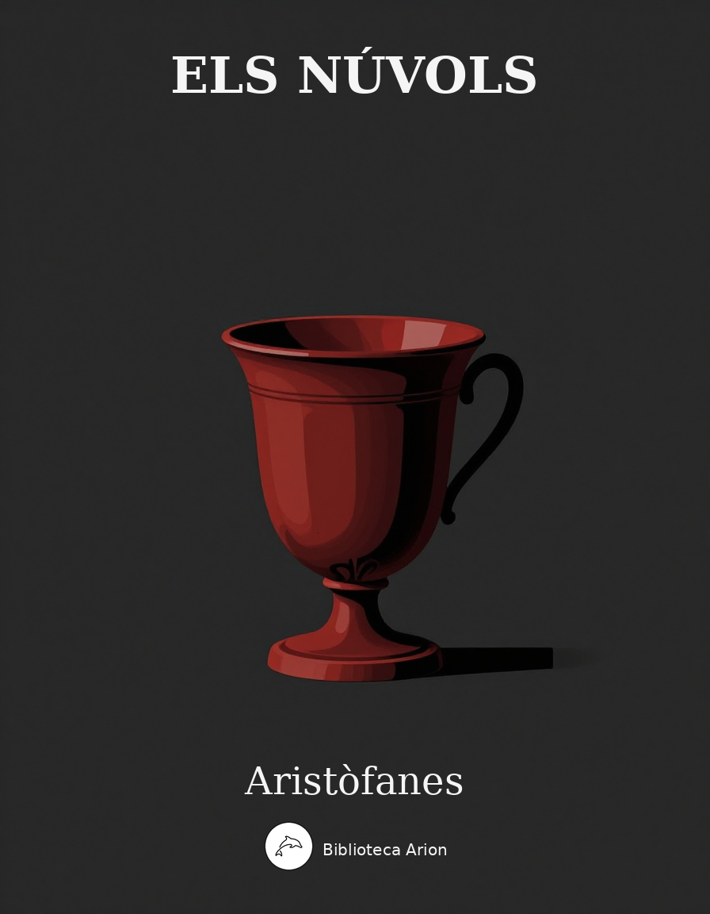

Els núvols
Νεφέλαι
Comèdia clàssica d'Aristòfanes que satiritza Sòcrates i els sofistes atenesos. Estrepsiades, un pagès endeutat, envia el seu fill Fidípides al 'Pensatori' de Sòcrates per aprendre l'art de la retòrica i escapar dels creditors.
Autor: Ἀριστοφάνης (Aristòfanes) Data: 423 aC (primera versió), c. 419-416 aC (revisió) Llengua original: grec antic Font: Wikisource (el.wikisource.org) Llicència: Domini públic
ΤΑ ΤΟΥ ΔΡΑΜΑΤΟΣ ΠΡΟΣΩΠΑ## *ΣΤΡΕΨΙΑΔΗΣ
ΦΕΙΔΙΠΠΙΔΗΣ ΘΕΡΑΠΩΝ ΣΤΡΕΨΙΑΔΟΥ ΜΑΘΗΤΑΙ ΣΩΚΡΑΤΟΥΣ ΣΩΚΡΑΤΗΣ ΧΟΡΟΣ ΝΕΦΕΛΩΝ ΔΙΚΑΙΟΣ ΛΟΓΟΣ ΑΔΙΚΟΣ ΛΟΓΟΣ ΠΑΣΙΑΣ, δανειστής ΑΜΥΝΙΑΣ, δανειστής ΜΑΡΤΥΣ *ΧΑΙΡΕΦΩΝ
ΝΕΦΕΛΑΙ## ΣΤΡΕΨΙΑΔΗΣ
Ἰοὺ ἰού· ὦ Ζεῦ βασιλεῦ, τὸ χρῆμα τῶν νυκτῶν ὅσον· ἀπέραντον. Οὐδέποθ᾿ ἡμέρα γενήσεται ; Καὶ μὴν πάλαι γ᾿ ἀλεκτρυόνος ἤκουσ᾿ ἐγώ. Οἱ δ᾿ οἰκέται ῥέγκουσιν. Ἀλλ᾿ οὐκ ἂν πρὸ τοῦ. Ἁπόλοιο δῆτ᾿, ὦ πόλεμε, πολλῶν οὕνεκα, ὅτ᾿ οὐδὲ κολάσ᾿ ἔξεστί μοι τοὺς οἰκέτας. Ἀλλ᾿ οὐδ᾿ ὁ χρηστὸς οὑτοσὶ νεανίας ἐγείρεται τῆς νυκτός, ἀλλὰ πέρδεται ἐν πέντε σισύραις ἐγκεκορδυλημένος. Ἀλλ᾿ εἰ δοκεῖ, ῥέγκωμεν ἐγκεκαλυμμένοι. Ἀλλ᾿ οὐ δύναμαι δείλαιος εὕδειν δακνόμενος ὑπὸ τῆς δαπάνης καὶ τῆς φάτνης καὶ τῶν χρεῶν διὰ τουτονὶ τὸν υἱόν δὲ κόμην ἔχων ἱππάζεταί τε καὶ ξυνωρικεύεται ὀνειροπολεῖ θ᾿ ἵππους. Ἐγὼ δ᾿ ἀπόλλυμαι ὁρῶν ἄγουσαν τὴν σελήνην εἰκάδας· οἱ γὰρ τόκοι χωροῦσιν. Ἅπτε παῖ λύχνον κἄκφερε τὸ γραμματεῖον, ἵν᾿ ἀναγνῶ λαβὼν ὁπόσοις ὀφείλω καὶ λογίσωμαι τοὺς τόκους. Φέρ᾿ ἴδω, τί ὀφείλω ; Δώδεκα μνᾶς Πασίᾳ. Τοῦ δώδεκα μνᾶς Πασίᾳ ; Τί ἐχρησάμην ; Ὅτ᾿ ἐπριάμην τὸν κοππατίαν. Οἴμοι τάλας, εἴθ᾿ ἐξεκόπην πρότερον τὸν ὀφθαλμὸν λίθῳ. ΦΕΙΔΙΠΠΙΔΗΣ Φίλων, ἀδικεῖς. Ἔλαυνε τὸν σαυτοῦ δρόμον. ΣΤΡΕΨΙΑΔΗΣ Τοῦτ᾿ ἐστὶ τουτὶ τὸ κακὸν ὅ μ᾿ ἀπολώλεκεν· ὀνειροπολεῖ γὰρ καὶ καθεύδων ἱππικήν. ΦΕΙΔΙΠΠΙΔΗΣ Πόσους δρόμους ἐλᾷ τὰ πολεμιστήρια ; ΣΤΡΕΨΙΑΔΗΣ Ἐμὲ μὲν σὺ πολλοὺς τὸν πατέρ᾿ ἐλαύνεις δρόμους. Ατὰρ τί χρέος ἔβα με μετὰ τὸν Πασίαν ; Τρεῖς μναῖ διφρίσκου καὶ τροχοῖν Ἀμεινίᾳ. ΦΕΙΔΙΠΠΙΔΗΣ Ἄπαγε τὸν ἵππον ἐξαλίσας οἴκαδε. ΣΤΡΕΨΙΑΔΗΣ Ἀλλ᾿ ὦ μέλ᾿ ἐξήλικας ἐμέ γ᾿ ἐκ τῶν ἐμῶν, ὅτε καὶ δίκας ὤφληκα χἄτεροι τόκου ἐνεχυράσεσθαί φασιν. ΦΕΙΔΙΠΠΙΔΗΣ Ἐτεόν, ὦ πάτερ, τί δυσκολαίνεις καὶ στρέφει τὴν νύχθ᾿ ὅλην ; ΣΤΡΕΨΙΑΔΗΣ Δάκνει μέ τις δήμαρχος ἐκ τῶν στρωμάτων. ΦΕΙΔΙΠΠΙΔΗΣ Ἔασον ὦ δαιμόνιε καταδαρθεῖν τί με. ΣΤΡΕΨΙΑΔΗΣ Σὺ δ᾿ οὖν κάθευδε. Τὰ δὲ χρέα ταῦτ᾿ ἴσθ᾿ ὅτι εἰς τὴν κεφαλὴν ἅπαντα τὴν σὴν τρέψεται. Φεῦ. Εἴθ᾿ ὤφελ᾿ ἡ προμνήστρι᾿ ἀπολέσθαι κακῶς ἥτις με γῆμ᾿ ἐπῆρε τὴν σὴν μητέρα· ἐμοὶ γὰρ ἦν ἄγροικος ἥδιστος βίος, εὐρωτιῶν, ἀκόρητος, εἰκῇ κείμενος, βρύων μελίτταις καὶ προβάτοις καὶ στεμφύλοις. Ἔπειτ᾿ ἔγημα Μεγακλέους τοῦ Μεγακλέους ἀδελφιδῆν ἄγροικος ὢν ἐξ ἄστεως, σεμνήν, τρυφῶσαν, ἐγκεκοισυρωμένην. Ταύτην ὅτ᾿ ἐγάμουν, συγκατεκλινόμην ἐγὼ [50] ὄζων τρυγός, τρασιᾶς, ἐρίων, περιουσίας, ἡ δ᾿ αὖ μύρου, κρόκου, καταγλωττισμάτων, δαπάνης, λαφυγμοῦ, Κωλιάδος, Γενετυλλίδος. Οὐ μὴν ἐρῶ γ᾿ ὡς ἀργὸς ἦν, ἀλλ᾿ ἐσπάθα, ἐγὼ δ᾿ ἂν αὐτῇ θοἰμάτιον δεικνὺς τοδὶ πρόφασιν ἔφασκον· ὦ γύναι, λίαν σπαθᾷς. ΟΙΚΕΤΗΣ Ἔλαιον ἡμῖν οὐκ ἔνεστ᾿ ἐν τῷ λύχνῳ. ΣΤΡΕΨΙΑΔΗΣ Οἴμοι. Τί γάρ μοι τὸν πότην ἧπτες λύχνον ; Δεῦρ᾿ ἔλθ᾿ ἵνα κλάῃς. ΟΙΚΕΤΗΣ Διὰ τί δῆτα κλαύσομαι ; ΣΤΡΕΨΙΑΔΗΣ Ὅτι τῶν παχειῶν ἐνετίθεις θρυαλλίδων. Μετὰ ταῦθ᾿, ὅπως νῷν ἐγένεθ᾿ υἱὸς οὑτοσί, ἐμοί τε δὴ καὶ τῇ γυναικὶ τἀγαθῇ, περὶ τοὐνόματος δὴ ᾿ντεῦθεν ἐλοιδορούμεθα. ἡ μὲν γὰρ ἵππον προσετίθει πρὸς τοὔνομα, Ξάνθιππον ἢ Χάριππον ἢ Καλλιππίδην, ἐγὼ δὲ τοῦ πάππου ᾿τιθέμην Φειδωνίδην. Τέως μὲν οὖν ἐκρινόμεθ᾿· εἶτα τῷ χρόνῳ κοινῇ ξυνέβημεν κἀθέμεθα Φειδιππίδην. Τοῦτον τὸν υἱὸν λαμβάνουσ᾿ ἐκορίζετο· ὅταν σὺ μέγας ὢν ἅρμ᾿ ἐλαύνῃς πρὸς πόλιν, ὥσπερ Μεγακλέης, ξυστίδ᾿ ἔχων ἐγὼ δ᾿ ἔφην· ὅταν μὲν οὖν τὰς αἶγας ἐκ τοῦ φελλέως, ὥσπερ ὁ πατήρ σου, διφθέραν ἐνημμένος. Ἀλλ᾿ οὐκ ἐπείθετο τοῖς ἐμοῖς οὐδὲν λόγοις, ἀλλ᾿ ἵππερόν μου κατέχεεν τῶν χρημάτων. Νῦν οὖν ὅλην τὴν νύκτα φροντίζων ὁδοῦ μίαν ηὗρον ἀτραπὸν δαιμονίως ὑπερφυᾶ, ἣν ἢν ἀναπείσω τουτονί, σωθήσομαι. Ἀλλ᾿ ἐξεγεῖραι πρῶτον αὐτὸν βούλομαι. Πῶς δῆτ᾿ ἂν ἥδιστ᾿ αὐτὸν ἐπεγείραιμι ; Πῶς ; Φειδιππίδη, Φειδιππίδιον. ΦΕΙΔΙΠΠΙΔΗΣ Τί, ὦ πάτερ ; ΣΤΡΕΨΙΑΔΗΣ Κύσον με καὶ τὴν χεῖρα δὸς τὴν δεξιάν. ΦΕΙΔΙΠΠΙΔΗΣ ἰδού. Τί ἐστιν ; ΣΤΡΕΨΙΑΔΗΣ Εἰπέ μοι, φιλεῖς ἐμέ ; ΦΕΙΔΙΠΠΙΔΗΣ Νὴ τὸν Ποσειδῶ τουτονὶ τὸν ἵππιον. ΣΤΡΕΨΙΑΔΗΣ Μή μοι γε τοῦτον μηδαμῶς τὸν ἵππιον· οὗτος γὰρ ὁ θεὸς αἴτιός μοι τῶν κακῶν. Ἀλλ᾿ εἴπερ ἐκ τῆς καρδίας μ᾿ ὄντως φιλεῖς, ὦ παῖ, πιθοῦ. ΦΕΙΔΙΠΠΙΔΗΣ Τί οὖν πίθωμαι δῆτά σοι ; ΣΤΡΕΨΙΑΔΗΣ Ἔκτρεψον ὡς τάχιστα τοὺς σαυτοῦ τρόπους καὶ μάνθαν᾿ ἐλθὼν ἃν ἐγὼ παραινέσω. ΦΕΙΔΙΠΠΙΔΗΣ Λέγε δή, τί κελεύεις ; ΣΤΡΕΨΙΑΔΗΣ Καί τι πείσει ; ΦΕΙΔΙΠΠΙΔΗΣ Πείσομαι, νὴ τὸν Διόνυσον. ΣΤΡΕΨΙΑΔΗΣ Δεῦρό νυν ἀπόβλεπε. Ὁρᾷς τὸ θύριον τοῦτο καὶ τοἰκίδιον ; ΦΕΙΔΙΠΠΙΔΗΣ Ὁρῶ. Τί οὖν τοῦτ᾿ ἐστὶν ἐτεόν, ὦ πάτερ ; ΣΤΡΕΨΙΑΔΗΣ Ψυχῶν σοφῶν τοῦτ᾿ ἐστὶ φροντιστήριον. Ἐνταῦθ᾿ ἐνοικοῦσ᾿ ἄνδρες οἳ τὸν οὐρανὸν λέγοντες ἀναπείθουσιν ὡς ἔστιν πνιγεύς, κἄστιν περὶ ἡμᾶς οὗτος, ἡμεῖς δ᾿ ἅνθρακες. Οὗτοι διδάσκουσ᾿, ἀργύριον ἤν τις διδῷ, λέγοντα νικᾶν καὶ δίκαια κἄδικα. [100] ΦΕΙΔΙΠΠΙΔΗΣ Εἰσὶν δὲ τίνες ; ΣΤΡΕΨΙΑΔΗΣ Οὐκ οἶδ᾿ ἀκριβῶς τοὔνομα. Μεριμνοφροντισταὶ καλοί τε κἀγαθοί. ΦΕΙΔΙΠΠΙΔΗΣ Αἰβοῖ, πονηροί γ᾿, οἶδα. Τοὺς ἀλαζόνας, τοὺς ὠχριῶντας, τοὺς ἀνυποδήτους λέγεις, ὧν ὁ κακοδαίμων Σωκράτης καὶ Χαιρεφῶν. ΣΤΡΕΨΙΑΔΗΣ Ἤ ἤ, σιώπα. Μηδὲν εἴπῃς νήπιον. Ἀλλ᾿ εἴ τι κήδει τῶν πατρῴων ἀλφίτων, τούτων γενοῦ μοι, σχασάμενος τὴν ἱππικήν. ΦΕΙΔΙΠΠΙΔΗΣ Οὐκ ἂν μὰ τὸν Διόνυσον εἰ δοίης γέ μοι τοὺς Φασιανοὺς οὓς τρέφει Λεωγόρας. ΣΤΡΕΨΙΑΔΗΣ Ἴθ᾿, ἀντιβολῶ σ᾿, ὦ φίλτατ᾿ ἀνθρώπων ἐμοί, ἐλθὼν διδάσκου. ΦΕΙΔΙΠΠΙΔΗΣ Καὶ τί σοι μαθήσομαι ; ΣΤΡΕΨΙΑΔΗΣ Εἶναι παρ᾿ αὐτοῖς φασὶν ἄμφω τὼ λόγω, τὸν κρείττον᾿, ὅστις ἐστί, καὶ τὸν ἥττονα. Τούτοιν τὸν ἕτερον τοῖν λόγοιν, τὸν ἥττονα, νικᾶν λέγοντά φασι τἀδικώτερα. Ἤν οὖν μάθῃς μοι τὸν ἄδικον τοῦτον λόγον, ἃ νῦν ὀφείλω διὰ σέ, τούτων τῶν χρεῶν οὐκ ἂν ἀποδοίην οὐδ᾿ ἂν ὀβολὸν οὐδενί. ΦΕΙΔΙΠΠΙΔΗΣ Οὐκ ἂν πιθοίμην· οὐ γὰρ ἂν τλαίην ἰδεῖν τοὺς ἱππέας τὸ χρῶμα διακεκναισμένος. ΣΤΡΕΨΙΑΔΗΣ Οὐκ ἄρα μὰ τὴν Δήμητρα τῶν γ᾿ ἐμῶν ἔδει οὔτ᾿ αὐτὸς οὔθ᾿ ὁ ζύγιος οὔθ᾿ ὁ σαμφόρας, ἀλλ᾿ ἐξελῶ σ᾿ εἰς κόρακας ἐκ τῆς οἰκίας. ΦΕΙΔΙΠΠΙΔΗΣ Ἀλλ᾿ οὐ περιόψεταί μ᾿ ὁ θεῖος Μεγακλέης ἄνιππον. Ἀλλ᾿ εἴσειμι, σοῦ δ᾿ οὐ φροντιῶ. ΣΤΡΕΨΙΑΔΗΣ Ἀλλ᾿ οὐδ᾿ ἐγὼ μέντοι πεσών γε κείσομαι, ἀλλ᾿ εὐξάμενος τοῖσιν θεοῖς διδάξομαι αὐτὸς βαδίζων εἰς τὸ φροντιστήριον. Πῶς οὖν γέρων ὢν κἀπιλήσμων καὶ βραδὺς λόγων ἀκριβῶν σκινδαλάμους μαθήσομαι ; Ἰτητέον. Τί ταῦτ᾿ ἔχων στραγγεύομαι ἀλλ᾿ οὐχὶ κόπτω τὴν θύραν ; Παῖ, παιδίον. ΜΑΘΗΤΗΣ Βάλλ᾿ εἰς κόρακας. Τίς ἐσθ᾿ ὁ κόψας τὴν θύραν ; ΣΤΡΕΨΙΑΔΗΣ Φείδωνος υἱὸς Στρεψιάδης Κικυννόθεν. ΜΑΘΗΤΗΣ Ἀμαθής γε νὴ Δί᾿, ὅστις οὑτωσὶ σφόδρα ἀπεριμερίμνως τὴν θύραν λελάκτικας καὶ φροντίδ᾿ ἐξήμβλωκας ἐξηυρημένην. ΣΤΡΕΨΙΑΔΗΣ Σύγγνωθί μοι· τηλοῦ γὰρ οἰκῶν τῶν ἀγρῶν. Ἀλλ᾿ εἰπέ μοι τὸ πρᾶγμα τοὐξημβλωμένον. ΜΑΘΗΤΗΣ Ἀλλ᾿ οὐ θέμις πλὴν τοῖς μαθηταῖσιν λέγειν. ΣΤΡΕΨΙΑΔΗΣ Λέγε νυν ἐμοὶ θαρρῶν· ἐγὼ γὰρ οὑτοσὶ ἥκω μαθητὴς εἰς τὸ φροντιστήριον. ΜΑΘΗΤΗΣ Λέξω, νομίσαι δὲ ταῦτα χρὴ μυστήρια. Ἀνήρετ᾿ ἄρτι Χαιρεφῶντα Σωκράτης ψύλλαν ὁπόσους ἅλλοιτο τοὺς αὑτῆς πόδας. Δακοῦσα γὰρ τοῦ Χαιρεφῶντος τὴν ὀφρῦν ἐπὶ τὴν κεφαλὴν τὴν Σωκράτους ἀφήλατο. ΣΤΡΕΨΙΑΔΗΣ Πῶς δῆτα διεμέτρησε ; ΜΑΘΗΤΗΣ Δεξιώτατα. Κηρὸν διατήξας, εἶτα τὴν ψύλλαν λαβὼν [150] ἐνέβαψεν εἰς τὸν κηρὸν αὐτῆς τὼ πόδε, κᾆτα ψυχείσῃ περιέφυσαν Περσικαί. Ταύτας ὑπολύσας ἀνεμέτρει τὸ χωρίον. ΣΤΡΕΨΙΑΔΗΣ Ὦ Ζεῦ βασιλεῦ, τῆς λεπτότητος τῶν φρενῶν. ΜΑΘΗΤΗΣ Τί δῆτ᾿ ἄν, ἕτερον εἰ πύθοιο Σωκράτους φρόντισμα ; ΣΤΡΕΨΙΑΔΗΣ Ποῖον ; Ἀντιβολῶ, κάτειπέ μοι. ΜΑΘΗΤΗΣ Ἀνήρετ᾿ αὐτὸν Χαιρεφῶν ὁ Σφήττιος ὁπότερα τὴν γνώμην ἔχοι, τὰς ἐμπίδας κατὰ τὸ στόμ᾿ ᾄδειν ἢ κατὰ τοὐρροπύγιον. ΣΤΡΕΨΙΑΔΗΣ Τί δῆτ᾿ ἐκεῖνος εἶπε περὶ τῆς ἐμπίδος ; ΜΑΘΗΤΗΣ Ἐφασκεν εἶναι τοὔντερον τῆς ἐμπίδος στενόν, διὰ λεπτοῦ δ᾿ ὄντος αὐτοῦ τὴν πνοὴν βίᾳ βαδίζειν εὐθὺ τοὐρροπυγίου· ἔπειτα κοῖλον πρὸς στενῷ προσκείμενον τὸν πρωκτὸν ἠχεῖν ὑπὸ βίας τοῦ πνεύματος. ΣΤΡΕΨΙΑΔΗΣ Σάλπιγξ ὁ πρωκτός ἐστιν ἄρα τῶν ἐμπίδων. Ὦ τρισμακάριος τοῦ διεντερεύματος. Ἦ ῥᾳδίως φεύγων ἂν ἀποφύγοι δίκην ὅστις δίοιδε τοὔντερον τῆς ἐμπίδος. ΜΑΘΗΤΗΣ Πρῴην δέ γε γνώμην μεγάλην ἀφῃρέθη ὑπ᾿ ἀσκαλαβώτου. ΣΤΡΕΨΙΑΔΗΣ Τίνα τρόπον ; Κάτειπέ μοι. ΜΑΘΗΤΗΣ Ζητοῦντος αὐτοῦ τῆς σελήνης τὰς ὁδοὺς καὶ τὰς περιφοράς, εἶτ᾿ ἄνω κεχηνότος ἀπὸ τῆς ὀροφῆς νύκτωρ γαλεώτης κατέχεσεν. ΣΤΡΕΨΙΑΔΗΣ Ἥσθην γαλεώτῃ καταχέσαντι Σωκράτους. ΜΑΘΗΤΗΣ Ἐχθὲς δέ γ᾿ ἡμῖν δεῖπνον οὐκ ἦν ἑσπέρας. ΣΤΡΕΨΙΑΔΗΣ Εἶἑν. Τί οὖν πρὸς τἄλφιτ᾿ ἐπαλαμήσατο ; ΜΑΘΗΤΗΣ Κατὰ τῆς τραπέζης καταπάσας λεπτὴν τέφραν, κάμψας ὀβελίσκον, εἶτα διαβήτην λαβών, ἐκ τῆς παλαίστρας θοἰμάτιον ὑφείλετο. ΣΤΡΕΨΙΑΔΗΣ Τί δῆτ᾿ ἐκεῖνον τὸν Θαλῆν θαυμάζομεν ; Ἄνοιγ᾿ ἄνοιγ᾿ ἁνύσας τὸ φροντιστήριον καὶ δεῖξον ὡς τάχιστά μοι τὸν Σωκράτη. Μαθητιῶ γάρ. Ἀλλ᾿ ἄνοιγε τὴν θύραν. Ὦ Ἡράκλεις, ταυτὶ ποδαπὰ τὰ θηρία ; ΜΑΘΗΤΗΣ Τί ἐθαύμασας ; Τῷ σοι δοκοῦσιν εἰκέναι ; ΣΤΡΕΨΙΑΔΗΣ Τοῖς ἐκ Πύλου ληφθεῖσι, τοῖς Λακωνικοῖς. Ἀτὰρ τί ποτ᾿ εἰς τὴν γῆν βλέπουσιν οὑτοι ; ΜΑΘΗΤΗΣ Ζητοῦσιν οὗτοι τὰ κατὰ γῆς. ΣΤΡΕΨΙΑΔΗΣ Βολβοὺς ἄρα ζητοῦσι. Μή νυν τοῦτό γ᾿ ἔτι φροντίζετε· ἐγὼ γὰρ οἶδ᾿ ἵν᾿ εἰσὶ μεγάλοι καὶ καλοί. Τί γὰρ οἵδε δρῶσιν οἱ σφόδρ᾿ ἐγκεκυφότες ; ΜΑΘΗΤΗΣ Οὗτοι δ᾿ ἐρεβοδιφῶσιν ὑπὸ τὸν Τάρταρον. ΣΤΡΕΨΙΑΔΗΣ Τί δῆθ᾿ ὁ πρωκτὸς εἰς τὸν οὐρανὸν βλέπει ; ΜΑΘΗΤΗΣ Αὐτὸς καθ᾿ αὑτὸν ἀστρονομεῖν διδάσκεται. Ἀλλ᾿ εἴσιθ᾿, ἵνα μὴ ᾿κεῖνος ὑμῖν ἐπιτύχῃ. ΣΤΡΕΨΙΑΔΗΣ Μήπω γε μήπω γ᾿, ἀλλ᾿ ἐπιμεινάντων, ἵνα αὐτοῖσι κοινώσω τι πραγμάτιον ἐμόν. ΜΑΘΗΤΗΣ Ἀλλ᾿ οὐχ οἷόν τ᾿ αὐτοῖσι πρὸς τὸν ἀέρα ἔξω διατρίβειν πολὺν ἄγαν ἐστὶν χρόνον. [200] ΣΤΡΕΨΙΑΔΗΣ Πρὸς τῶν θεῶν, τί γὰρ τάδ᾿ ἐστίν ; Εἰπέ μοι. ΜΑΘΗΤΗΣ Ἀστρονομία μὲν αὑτηί. ΣΤΡΕΨΙΑΔΗΣ Τουτὶ δὲ τί ; ΜΑΘΗΤΗΣ Γεωμετρία. ΣΤΡΕΨΙΑΔΗΣ Τοῦτ᾿ οὖν τί ἐστι χρήσιμον ; ΜΑΘΗΤΗΣ Γῆν ἀναμετρεῖσθαι. ΣΤΡΕΨΙΑΔΗΣ Πότερα τὴν κληρουχικήν ; ΜΑΘΗΤΗΣ Οὔκ, ἀλλὰ τὴν σύμπασαν. ΣΤΡΕΨΙΑΔΗΣ ἀστεῖον λέγεις· τὸ γὰρ σόφισμα δημοτικὸν καὶ χρήσιμον. ΜΑΘΗΤΗΣ Αὕτη δέ σοι γῆς περίοδος πάσης. Ὀρᾷς ; Αἵδε μὲν Ἀθῆναι. ΣΤΡΕΨΙΑΔΗΣ Τί σὺ λέγεις ; Οὐ πείθομαι, ἐπεὶ δικαστὰς οὐχ ὁρῶ καθημένους. ΜΑΘΗΤΗΣ Ὡς τοῦτ᾿ ἀληθῶς Ἀττικὸν τὸ χωρίον. ΣΤΡΕΨΙΑΔΗΣ Καὶ ποῦ Κικυννῆς εἰσίν, οὑμοὶ δημόται ; ΜΑΘΗΤΗΣ Ἐνταῦθ᾿ ἔνεισιν. Ἡ δέ γ᾿ Εὔβοι᾿, ὡς ὁρᾷς, ἡδὶ παρατέταται μακρὰ πόρρω πάνυ. ΣΤΡΕΨΙΑΔΗΣ Οἶδ᾿· ὑπὸ γὰρ ἡμῶν παρετάθη καὶ Περικλέους. Ἀλλ᾿ ἡ Λακεδαίμων ποῦ ᾿στίν ; ΜΑΘΗΤΗΣ Ὅπου ᾿στίν ; Αὑτηί. ΣΤΡΕΨΙΑΔΗΣ Ὡς ἐγγὺς ἡμῶν. Τοῦτο μεταφροντίζετε, ταύτην ἀφ᾿ ἡμῶν ἀπαγαγεῖν πόρρω πάνυ. ΜΑΘΗΤΗΣ ἀλλ᾿ οὐχ οἷόν τε. ΣΤΡΕΨΙΑΔΗΣ Νὴ Δί᾿, οἰμώξεσθ᾿ ἄρα. Φέρε τίς γὰρ οὗτος οὑπὶ τῆς κρεμάθρας ἀνήρ ; ΜΑΘΗΤΗΣ Αὐτός. ΣΤΡΕΨΙΑΔΗΣ Τίς αὐτός ; ΜΑΘΗΤΗΣ Σωκράτης. ΣΤΡΕΨΙΑΔΗΣ Ὦ Σωκράτης. ἴθ᾿ οὗτος ἀναβόησον αὐτόν μοι μέγα. ΜΑΘΗΤΗΣ Αὐτὸς μὲν οὖν σὺ κάλεσον· οὐ γάρ μοι σχολή. ΣΤΡΕΨΙΑΔΗΣ Ὦ Σώκρατες, ὦ Σωκρατίδιον. ΣΩΚΡΑΤΗΣ Τί με καλεῖς, ὦφήμερε ; ΣΤΡΕΨΙΑΔΗΣ Πρῶτον μὲν ὅ τι δρᾷς, ἀντιβολῶ, κάτειπέ μοι. ΣΩΚΡΑΤΗΣ Ἀεροβατῶ καὶ περιφρονῶ τὸν ἥλιον. ΣΤΡΕΨΙΑΔΗΣ Ἐπειτ᾿ ἀπὸ ταρροῦ τοὺς θεοὺς ὑπερφρονεῖς, ἀλλ᾿ οὐκ ἀπὸ τῆς γῆς, εἴπερ ; ΣΩΚΡΑΤΗΣ Οὐ γὰρ ἄν ποτε ἐξηῦρον ὀρθῶς τὰ μετέωρα πράγματα εἰ μὴ κρεμάσας τὸ νόημα καὶ τὴν φροντίδα, λεπτὴν καταμείξας εἰς τὸν ὅμοιον ἀέρα. Εἰ δ᾿ ὢν χαμαὶ τἄνω κάτωθεν ἐσκόπουν, οὐκ ἄν ποθ᾿ ηὗρον· οὐ γὰρ ἀλλ᾿ ἡ γῆ βίᾳ ἕλκει πρὸς αὑτὴν τὴν ἰκμάδα τῆς φροντίδος. Πάσχει δὲ ταὐτὸ τοῦτο καὶ τὰ κάρδαμα. ΣΤΡΕΨΙΑΔΗΣ Τί φῄς ; Ἡ φροντὶς ἕλκει τὴν ἰκμάδ᾿ εἰς τὰ κάρδαμα ; Ἴθι νυν κατάβηθ᾿, ὦ Σωκρατίδιον, ὡς ἐμέ, ἵνα με διδάξῃς ὧνπερ ἕνεκ᾿ ἐλήλυθα. ΣΩΚΡΑΤΗΣ Ἦλθες δὲ κατὰ τί ; ΣΤΡΕΨΙΑΔΗΣ Βουλόμενος μαθεῖν λέγειν· ὑπὸ γὰρ τόκων χρήστων τε δυσκολωτάτων ἄγομαι, φέρομαι, τὰ χρήματ᾿ ἐνεχυράζομαι. ΣΩΚΡΑΤΗΣ Πόθεν δ᾿ ὑπόχρεως σαυτὸν ἔλαθες γενόμενος ; ΣΤΡΕΨΙΑΔΗΣ Νόσος μ᾿ ἐπέτριψεν ἱππική, δεινὴ φαγεῖν. Ἀλλά με δίδαξον τὸν ἕτερον τοῖν σοῖν λόγοιν, τὸν μηδὲν ἀποδιδόντα. Μισθὸν δ᾿ ὅντιν᾿ ἂν πράττῃ μ᾿, ὀμοῦμαί σοι καταθήσειν τοὺς θεούς. ΣΩΚΡΑΤΗΣ Ποίους θεοὺς ὀμεῖ σύ ; Πρῶτον γὰρ θεοὶ ἡμῖν νόμισμ᾿ οὐκ ἔστι. ΣΤΡΕΨΙΑΔΗΣ Τῷ γὰρ ὄμνυτε ; Σιδαρέοισιν, ὥσπερ ἐν Βυζαντίῳ ; [250] ΣΩΚΡΑΤΗΣ Βούλει τὰ θεῖα πράγματ᾿ εἰδέναι σαφῶς ἅττ᾿ ἐστὶν ὀρθῶς ; ΣΤΡΕΨΙΑΔΗΣ Νὴ Δί᾿, εἴπερ ἐστί γε. ΣΩΚΡΑΤΗΣ Καὶ συγγενέσθαι ταῖς Νεφέλαισιν εἰς λόγους, ταῖς ἡμετέραισι δαίμοσιν ; ΣΤΡΕΨΙΑΔΗΣ Μάλιστά γε. ΣΩΚΡΑΤΗΣ Κάθιζε τοίνυν ἐπὶ τὸν ἱερὸν σκίμποδα. ΣΤΡΕΨΙΑΔΗΣ Ἰδού, κάθημαι. ΣΩΚΡΑΤΗΣ Τουτονὶ τοίνυν λαβὲ τὸν στέφανον. ΣΤΡΕΨΙΑΔΗΣ Ἐπὶ τί στέφανον ; Οἴμοι, Σώκρατες, ὥσπερ με τὸν Ἀθάμανθ᾿ ὅπως μὴ θύσετε. ΣΩΚΡΑΤΗΣ Οὔκ, ἀλλὰ ταῦτα πάντα τοὺς τελουμένους ἡμεῖς ποιοῦμεν. ΣΤΡΕΨΙΑΔΗΣ Εἶτα δὴ τί κερδανῶ ; ΣΩΚΡΑΤΗΣ Λέγειν γενήσει τρῖμμα, κρόταλον, παιπάλη. Ἀλλ᾿ ἔχ᾿ ἀτρεμεί. ΣΤΡΕΨΙΑΔΗΣ Μὰ τὸν Δί᾿ οὐ ψεύσει γέ με· καταπαττόμενος γὰρ παιπάλη γενήσομαι. ΣΩΚΡΑΤΗΣ Εὐφημεῖν χρὴ τὸν πρεσβύτην καὶ τῆς εὐχῆς ἐπακούειν. Ὦ δέσποτ᾿ ἄναξ, ἀμέτρητ᾿ Ἀήρ, ὃς ἔχεις τὴν γῆν μετέωρον, λαμπρός τ᾿ Αἰθήρ, σεμναί τε θεαὶ Νεφέλαι βροντησικέραυνοι, ἄρθητε, φάνητ᾿, ὦ δέσποιναι, τῷ φροντιστῇ μετέωροι. ΣΤΡΕΨΙΑΔΗΣ Μήπω, μήπω γε, πρὶν ἂν τουτὶ πτύξωμαι, μὴ καταβρεχθῶ. Τὸ δὲ μηδὲ κυνῆν οἴκοθεν ἐλθεῖν ἐμὲ τὸν κακοδαίμον᾿ ἔχοντα. ΣΩΚΡΑΤΗΣ Ἔλθετε δῆτ᾿, ὦ πολυτίμητοι Νεφέλαι, τῷδ᾿ εἰς ἐπίδειξιν· εἴτ᾿ ἐπ᾿ Ὀλύμπου κορυφαῖς ἱεραῖς χιονοβλήτοισι κάθησθε, εἴτ᾿ Ὠκεανοῦ πατρὸς ἐν κήποις ἱερὸν χορὸν ἵστατε Νύμφαις, εἴτ᾿ ἄρα Νείλου προχοαῖς ὑδάτων χρυσέαις ἀρύτεσθε πρόχοισιν, ἢ Μαιῶτιν λίμνην ἔχετ᾿ ἢ σκόπελον νιφόεντα Μίμαντος· ὑπακούσατε δεξάμεναι θυσίαν καὶ τοῖς ἱεροῖσι χαρεῖσαι. ΧΟΡΟΣ Ἀέναοι Νεφέλαι, ἀρθῶμεν φανεραὶ δροσερὰν φύσιν εὐάγητον πατρὸς ἀπ᾿ Ὠκεανοῦ βαρυαχέος ὑψηλῶν ὀρέων κορυφὰς ἔπι δενδροκόμους, ἵνα τηλεφανεῖς σκοπιὰς ἀφορώμεθα καρπούς τ᾿ ἀρδομέναν ἱερὰν χθόνα καὶ ποταμῶν ζαθέων κελαδήματα καὶ πόντον κελάδοντα βαρύβρομον· ὄμμα γὰρ αἰθέρος ἀκάματον σελαγεῖται μαρμαρέαισιν αὐγαῖς. Ἀλλ᾿ ἀποσεισάμεναι νέφος ὄμβριον ἀθανάτας ἰδέας ἐπιδώμεθα τηλεσκόπῳ ὄμματι γαῖαν. ΣΩΚΡΑΤΗΣ Ὦ μέγα σεμναὶ Νεφέλαι, φανερῶς ἠκούσατέ μου καλέσαντος. Ἤισθου φωνῆς ἅμα καὶ βροντῆς μυκησαμένης θεοσέπτου ; ΣΤΡΕΨΙΑΔΗΣ Καὶ σέβομαί γ᾿, ὦ πολυτίμητοι, καὶ βούλομαι ἀνταποπαρδεῖν πρὸς τὰς βροντάς· οὕτως αὐτὰς τετραμαίνω καὶ πεφόβημαι. Κεἰ θέμις ἐστίν, νυνί γ᾿ ἤδη, κεἰ μὴ θέμις ἐστί, χεσείω. ΣΩΚΡΑΤΗΣ Οὐ μὴ σκώψει μηδὲ ποήσεις ἅπερ οἱ τρυγοδαίμονες οὗτοι, ἀλλ᾿ εὐφήμει· μέγα γάρ τι θεῶν κινεῖται σμῆνος ἀοιδαῖς. ΧΟΡΟΣ Παρθένοι ὀμβροφόροι, [300] ἔλθωμεν λιπαρὰν χθόνα Παλλάδος, εὔανδρον γᾶν Κέκροπος ὀψόμεναι πολυήρατον· οὗ σέβας ἀρρήτων ἱερῶν, ἵνα μυστοδόκος δόμος ἐν τελεταῖς ἁγίαις ἀναδείκνυται· οὐρανίοις τε θεοῖς δωρήματα, ναοί θ᾿ ὑψερεφεῖς καὶ ἀγάλματα, καὶ πρόσοδοι μακάρων ἱερώταται εὐστέφανοί τε θεῶν θυσίαι θαλίαι τε παντοδαπαῖσιν ὥραις, ἦρί τ᾿ ἐπερχομένῳ Βρομία χάρις εὐκελάδων τε χορῶν ἐρεθίσματα καὶ μοῦσα βαρύβρομος αὐλῶν. ΣΤΡΕΨΙΑΔΗΣ Πρὸς τοῦ Διός, ἀντιβολῶ σε, φράσον, τίνες εἴσ᾿, ὦ Σώκρατες, αὗται αἱ φθεγξάμεναι τοῦτο τὸ σεμνόν ; Μῶν ἡρῷναί τινές εἰσιν ; ΣΩΚΡΑΤΗΣ Ἥκιστ᾿, ἀλλ᾿ οὐράνιαι Νεφέλαι, μεγάλαι θεαὶ ἀνδράσιν ἀργοῖς, αἵπερ γνώμην καὶ διάλεξιν καὶ νοῦν ἡμῖν παρέχουσιν καὶ τερατείαν καὶ περίλεξιν καὶ κροῦσιν καὶ κατάληψιν. ΣΤΡΕΨΙΑΔΗΣ Ταῦτ᾿ ἄρ᾿ ἀκούσασ᾿ αὐτῶν τὸ φθέγμ᾿ ἡ ψυχή μου πεπότηται καὶ λεπτολογεῖν ἤδη ζητεῖ καὶ περὶ καπνοῦ στενολεσχεῖν καὶ γνωμιδίῳ γνώμην νύξασ᾿ ἑτέρῳ λόγῳ ἀντιλογῆσαι· ὥστ᾿ εἴ πως ἐστίν, ἰδεῖν αὐτὰς ἤδη φανερῶς ἐπιθυμῶ. ΣΩΚΡΑΤΗΣ Βλέπε νυν δευρὶ πρὸς τὴν Πάρνηθ᾿· ἤδη γὰρ ὁρῶ κατιούσας ἡσυχῇ αὐτάς. ΣΤΡΕΨΙΑΔΗΣ Φέρε ποῦ ; Δεῖξον. ΣΩΚΡΑΤΗΣ Χωροῦσ᾿ αὗται πάνυ πολλαὶ διὰ τῶν κοίλων καὶ τῶν δασέων, αὗται πλάγιαι. ΣΤΡΕΨΙΑΔΗΣ Τί τὸ χρῆμα ; Ὡς οὐ καθορῶ. ΣΩΚΡΑΤΗΣ Παρὰ τὴν εἴσοδον. ΣΤΡΕΨΙΑΔΗΣ Ἤδη νυνὶ μόλις οὕτως. ΣΩΚΡΑΤΗΣ Νῦν γέ τοι ἤδη καθορᾷς αὐτάς, εἰ μὴ λημᾷς κολοκύνταις. ΣΤΡΕΨΙΑΔΗΣ Νὴ Δί᾿ ἔγωγ᾿. Ὀ πολυτίμητοι· πάντα γὰρ ἤδη κατέχουσιν. ΣΩΚΡΑΤΗΣ Ταύτας μέντοι σὺ θεὰς οὔσας οὐκ ᾔδεις οὐδ᾿ ἐνόμιζες ; ΣΤΡΕΨΙΑΔΗΣ Μὰ Δί᾿, ἀλλ᾿ ὁμίχλην καὶ δρόσον αὐτὰς ἡγούμην καὶ καπνὸν εἶναι. ΣΩΚΡΑΤΗΣ Οὐ γὰρ μὰ Δί᾿ οἶσθ᾿ ὁτιὴ πλείστους αὗται βόσκουσι σοφιστάς, Θουριομάντεις, ἰατροτέχνας, σφραγιδονυχαργοκομήτας· κυκλίων τε χορῶν ᾀσματοκάμπτας, ἄνδρας μετεωροφένακας, οὐδὲν δρῶντας βόσκουσ᾿ ἀργούς, ὅτι ταύτας μουσοποοῦσιν. ΣΤΡΕΨΙΑΔΗΣ Ταῦτ᾿ ἄρ᾿ ἐποίουν ὑγρᾶν Νεφελᾶν στρεπταίγλαν δάϊον ὁρμάν, πλοκάμους θ᾿ ἑκατογκεφάλα Τυφῶ πρημαινούσας τε θυέλλας, εἶτ᾿ ἀερίας διεράς γαμψούς τ᾿ οἰωνοὺς ἀερονηχεῖς ὄμβρους θ᾿ ὑδάτων δροσερᾶν νεφελᾶν· εἶτ᾿ ἀντ᾿ αὐτῶν κατέπινον κεστρᾶν τεμάχη μεγαλᾶν ἀγαθᾶν κρέα τ᾿ ὀρνίθεια κιχηλᾶν. ΣΩΚΡΑΤΗΣ Διὰ μέντοι τάσδ᾿. Οὐχὶ δικαίως ; ΣΤΡΕΨΙΑΔΗΣ Λέξον δή μοι, τί παθοῦσαι, εἴπερ νεφέλαι γ᾿ εἰσὶν ἀληθῶς, θνηταῖς εἴξασι γυναιξίν ; Οὐ γὰρ ἐκεῖναί γ᾿ εἰσὶ τοιαῦται. ΣΩΚΡΑΤΗΣ Φέρε, ποῖαι γάρ τινές εἰσιν ; ΣΤΡΕΨΙΑΔΗΣ Οὐκ οἶδα σαφῶς· εἴξασιν δ᾿ οὖν ἐρίοισιν πεπταμένοισιν, κοὐχὶ γυναιξίν, μὰ Δί᾿, οὐδ᾿ ὁτιοῦν· αὗται δὲ ῥῖνας ἔχουσιν. ΣΩΚΡΑΤΗΣ Ἀπόκριναί νυν ἅττ᾿ ἂν ἔρωμαι. ΣΤΡΕΨΙΑΔΗΣ Λέγε νυν ταχέως ὅτι βούλει. ΣΩΚΡΑΤΗΣ Ἤδη ποτ᾿ ἀναβλέψας εἶδες νεφέλην κενταύρῳ ὁμοίαν ἢ παρδάλει ἢ λύκῳ ἢ ταύρῳ ; ΣΤΡΕΨΙΑΔΗΣ Νὴ Δί᾿ ἔγωγ᾿. Εἶτα τί τοῦτο ; ΣΩΚΡΑΤΗΣ Γίγνονται πάνθ᾿ ὅτι βούλονται· κᾆτ᾿ ἢν μὲν ἴδωσι κομήτην ἄγριόν τινα τῶν λασίων τούτων, οἷόνπερ τὸν Ξενοφάντου, σκώπτουσαι τὴν μανίαν αὐτοῦ κενταύροις ᾔκασαν αὑτάς. [350] ΣΤΡΕΨΙΑΔΗΣ Τί γὰρ ἢν ἅρπαγα τῶν δημοσίων κατίδωσι Σίμωνα, τί δρῶσιν ; ΣΩΚΡΑΤΗΣ Ἀποφαίνουσαι τὴν φύσιν αὐτοῦ λύκοι ἐξαίφνης ἐγένοντο. ΣΤΡΕΨΙΑΔΗΣ Ταῦτ᾿ ἄρα, ταῦτα Κλεώνυμον αὗται τὸν ῥίψασπιν χθὲς ἰδοῦσαι, ὅτι δειλότατον τοῦτον ἑώρων, ἔλαφοι διὰ τοῦτ᾿ ἐγένοντο. ΣΩΚΡΑΤΗΣ Καὶ νῦν γ᾿ ὅτι Κλεισθένη εἶδον, ὁρᾷς, διὰ τοῦτ᾿ ἐγένοντο γυναῖκες. ΣΤΡΕΨΙΑΔΗΣ Χαίρετε τοίνυν, ὦ δέσποιναι· καὶ νῦν, εἴπερ τινὶ κἄλλῳ, οὐρανομήκη ῥήξατε κἀμοὶ φωνήν, ὦ παμβασίλειαι. ΧΟΡΟΣ Χαῖρ᾿, ὦ πρεσβῦτα παλαιογενές, θηρατὰ λόγων φιλομούσων. Σύ τε, λεπτοτάτων λήρων ἱερεῦ, φράζε πρὸς ἡμᾶς ὅτι χρῄζεις· οὐ γὰρ ἂν ἄλλῳ γ᾿ ὑπακούσαιμεν τῶν νῦν μετεωροσοφιστῶν πλὴν ἢ Προδίκῳ, τῷ μὲν σοφίας καὶ γνώμης οὕνεκα, σοὶ δὲ ὅτι βρενθύει τ᾿ ἐν ταῖσιν ὁδοῖς καὶ τὠφθαλμὼ παραβάλλεις κἀνυπόδητος κακὰ πόλλ᾿ ἀνέχει κἀφ᾿ ἡμῖν σεμνοπροσωπεῖς. ΣΤΡΕΨΙΑΔΗΣ Ὦ Γῆ, τοῦ φθέγματος, ὡς ἱερὸν καὶ σεμνὸν καὶ τερατῶδες. ΣΩΚΡΑΤΗΣ Αὗται γάρ τοι μόναι εἰσὶ θεαί, τἄλλα δὲ πάντ᾿ ἐστὶ φλύαρος. ΣΤΡΕΨΙΑΔΗΣ Ὁ Ζεὺς δ᾿ ὑμῖν, φέρε, πρὸς τῆς Γῆς, Οὑλύμπιος οὐ θεός ἐστιν ; ΣΩΚΡΑΤΗΣ Ποῖος Ζεύς ; Οὐ μὴ ληρήσεις. Οὐδ᾿ ἐστὶ Ζεύς. ΣΤΡΕΨΙΑΔΗΣ Τί λέγεις σύ ; Ἀλλὰ τίς ὕει ; Τουτὶ γὰρ ἔμοιγ᾿ ἀπόφηναι πρῶτον ἁπάντων. ΣΩΚΡΑΤΗΣ Αὗται δήπου· μεγάλοις δέ σ᾿ ἐγὼ σημείοις αὐτὸ διδάξω. Φέρε, ποῦ γὰρ πώποτ᾿ ἄνευ νεφελῶν ὕοντ᾿ ἤδη τεθέασαι ; Καίτοι χρῆν αἰθρίας ὕειν αὐτόν, ταύτας δ᾿ ἀποδημεῖν. ΣΤΡΕΨΙΑΔΗΣ Νὴ τὸν Ἀπόλλω, τοῦτό γε τοι τῷ νυνὶ λόγῳ εὖ προσέφυσας. Καίτοι πρότερον τὸν Δί᾿ ἀληθῶς ᾤμην διὰ κοσκίνου οὐρεῖν. Ἀλλ᾿ ὅστις ὁ βροντῶν ἐστὶ φράσον, τοῦθ᾿ ὅ με ποιεῖ τετρεμαίνειν. ΣΩΚΡΑΤΗΣ Αὗται βροντῶσι κυλινδόμεναι. ΣΤΡΕΨΙΑΔΗΣ Τῷ τρόπῳ, ὦ πάντα σὺ τολμῶν ; ΣΩΚΡΑΤΗΣ Ὅταν ἐμπλησθῶσ᾿ ὕδατος πολλοῦ κἀναγκασθῶσι φέρεσθαι κατακριμνάμεναι πλήρεις ὄμβρου δι᾿ ἀνάγκην, εἶτα βαρεῖαι εἰς ἀλλήλας ἐμπίπτουσαι ῥήγνυνται καὶ παταγοῦσιν. ΣΤΡΕΨΙΑΔΗΣ Ὁ δ᾿ ἀναγκάζων ἐστὶ τίς αὐτάς οὐχ ὁ Ζεύς ; Ὥστε φέρεσθαι ; ΣΩΚΡΑΤΗΣ Ἥκιστ᾿, ἀλλ᾿ αἰθέριος δῖνος. ΣΤΡΕΨΙΑΔΗΣ Δῖνος ; Τουτί μ᾿ ἐλελήθει, ὁ Ζεὺς οὐκ ὤν, ἀλλ᾿ ἀντ᾿ αὐτοῦ Δῖνος νυνὶ βασιλεύων. Ἀτὰρ οὐδέν πω περὶ τοῦ πατάγου καὶ τῆς βροντῆς μ᾿ ἐδίδαξας. ΣΩΚΡΑΤΗΣ Οὐκ ἤκουσάς μου τὰς νεφέλας ὕδατος μεστὰς ὅτι φημὶ ἐμπιπτούσας εἰς ἀλλήλας παταγεῖν διὰ τὴν πυκνότητα ; ΣΤΡΕΨΙΑΔΗΣ Φέρε, τουτὶ τῷ χρὴ πιστεύειν ; ΣΩΚΡΑΤΗΣ Ἀπὸ σαυτοῦ ᾿γώ σε διδάξω. Ἤδη ζωμοῦ Παναθηναίοις ἐμπλησθεὶς εἶτ᾿ ἐταράχθης τὴν γαστέρα καὶ κλόνος ἐξαίφνης αὐτὴν διεκορκορύγησεν ; ΣΤΡΕΨΙΑΔΗΣ Νὴ τὸν Ἀπόλλω, καὶ δεινὰ ποεῖ γ᾿ εὐθύς μοι καὶ τετάρακται, χὤσπερ βροντὴ τὸ ζωμίδιον παταγεῖ καὶ δεινὰ κέκραγεν, ἀτρέμας πρῶτον, παππὰξ παππάξ, κἄπειτ᾿ ἐπάγει παπαπαππάξ· χὤταν χέζω, κομιδῇ βροντᾷ, παπαπαππάξ, ὥσπερ ἐκεῖναι. ΣΩΚΡΑΤΗΣ Σκέψαι τοίνυν ἀπὸ γαστριδίου τυννουτουὶ οἷα πέπορδας· τὸν δ᾿ ἀέρα τόνδ᾿ ὄντ᾿ ἀπέραντον πῶς οὐκ εἰκὸς μέγα βροντᾶν ; Ταῦτ᾿ ἄρα καὶ τὠνόματ᾿ ἀλλήλοιν, βροντὴ καὶ πορδή, ὁμοίω. ΣΤΡΕΨΙΑΔΗΣ Ἀλλ᾿ ὁ κεραυνὸς πόθεν αὖ φέρεται λάμπων πυρί, τοῦτο δίδαξον, καὶ καταφρύγει βάλλων ἡμᾶς, τοὺς δὲ ζῶντας περιφλεύει. Τοῦτον γὰρ δὴ φανερῶς ὁ Ζεὺς ἵησ᾿ ἐπὶ τοὺς ἐπιόρκους. ΣΩΚΡΑΤΗΣ Καὶ πῶς, ὦ μῶρε σὺ καὶ Κρονίων ὄζων καὶ βεκκεσέληνε, εἴπερ βάλλει τοὺς ἐπιόρκους, δῆτ᾿ οὐχὶ Σίμων᾿ ἐνέπρησεν [400] οὐδὲ Κλεώνυμον οὐδὲ Θέωρον ; Καίτοι σφόδρα γ᾿ εἴσ᾿ ἐπίορκοι. Ἀλλὰ τὸν αὑτοῦ γε νεὼν βάλλει καὶ Σούνιον, ἄκρον Ἀθηνέων, καὶ τὰς δρῦς τὰς μεγάλας, τί μαθών ; Οὐ γὰρ δὴ δρῦς γ᾿ ἐπίορκεῖ. ΣΤΡΕΨΙΑΔΗΣ Οὐκ οἶδ᾿· ἀτὰρ εὖ σὺ λέγειν φαίνει. Τί γάρ ἐστιν δῆθ᾿ ὁ κεραυνός ; ΣΩΚΡΑΤΗΣ Ὅταν εἰς ταύτας ἄνεμος ξηρὸς μετεωρισθεὶς κατακλεισθῇ, ἔνδοθεν αὐτὰς ὥσπερ κύστιν φυσᾷ, κἄπειθ᾿ ὑπ᾿ ἀνάγκης ῥήξας αὐτὰς ἔξω φέρεται σοβαρὸς διὰ τὴν πυκνότητα, ὑπὸ τοῦ ῥοίβδου καὶ τῆς ῥύμης αὐτὸς ἑαυτὸν κατακάων. ΣΤΡΕΨΙΑΔΗΣ Νὴ Δί᾿ ἐγὼ γοῦν ἀτεχνῶς ἔπαθον τουτί ποτε Διασίοισιν. ὀπτῶν γαστέρα τοῖς συγγένεσιν κᾆτ᾿ οὐκ ἔσχων ἀμελήσας, ἡ δ᾿ ἄρ᾿ ἐφυσᾶτ᾿, εἶτ᾿ ἐξαίφνης διαλακήσασα πρὸς αὐτὼ τὠφθαλμώ μου προσετίλησεν καὶ κατέκαυσεν τὸ πρόσωπον. ΧΟΡΟΣ Ὦ τῆς μεγάλης ἐπιθυμήσας σοφι´ας ἄνθρωπε παρ᾿ ἡμῶν, ὡς εὐδαίμων ἐν Ἀθηναίοις καὶ τοῖς Ἕλλησι γενήσει εἰ μνήμων εἶ καὶ φροντιστὴς καὶ τὸ ταλαίπωρον ἔνεστιν ἐν τῇ ψυχῇ καὶ μὴ κάμνεις μήθ᾿ ἑστὼς μήτε βαδίζων μήτε ῥιγῶν ἄχθει λίαν μήτ᾿ ἀριστᾶν ἐπιθυμεῖς οἴνου τ᾿ ἀπέχει καὶ γυμνασίων καὶ τῶν ἄλλων ἀνοήτων καὶ βέλτιστον τοῦτο νομίζεις, ὅπερ εἰκὸς δεξιὸν ἄνδρα, νικᾶν πράττων καὶ βουλεύων καὶ τῇ γλώττῃ πολεμίζων. ΣΤΡΕΨΙΑΔΗΣ Ἀλλ᾿ εἵνεκα γε ψυχῆς στερρᾶς δυσκολοκοίτου τε μερίμνης καὶ φειδωλοῦ καὶ τρυσιβίου γαστρὸς καὶ θυμβρεπιδείπνου, ἀμέλει, θαρρῶν εἵνεκα τούτων ἐπιχαλκεύειν παρέχοιμ᾿ ἄν. ΣΩΚΡΑΤΗΣ Ἄλλο τι δῆτ᾿ οὐ νομιεῖς ἤδη θεὸν οὐδένα πλὴν ἅπερ ἡμεῖς, τὸ Χάος τουτὶ καὶ τὰς Νεφέλας καὶ τὴν Γλῶτταν, τρία ταυτί ; ΣΤΡΕΨΙΑΔΗΣ Οὐδ᾿ ἂν διαλεχθείην γ᾿ ἀτεχνῶς τοῖς ἄλλοις οὐδ᾿ ἂν ἀπαντῶν, οὐδ᾿ ἂν θύσαιμ᾿ οὐδ᾿ ἂν σπείσαιμ᾿ οὐδ᾿ ἐπιθείην λιβανωτόν. ΧΟΡΟΣ Λέγε νυν ἡμῖν ὅτι σοι δρῶμεν θαρρῶν, ὡς οὐκ ἀτυχήσεις ἡμᾶς τιμῶν καὶ θαυμάζων καὶ ζητῶν δεξιὸς εἶναι. ΣΤΡΕΨΙΑΔΗΣ Ὦ δέσποιναι, δέομαι τοίνυν ὑμῶν τουτὶ πάνυ μικρόν, τῶν Ἑλλήνων εἶναί με λέγειν ἑκατὸν σταδίοισιν ἄριστον. ΧΟΡΟΣ Ἀλλ᾿ ἔσται σοι τοῦτο παρ᾿ ἡμῶν, ὥστε τὸ λοιπόν γ᾿ ἀπὸ τουδὶ ἐν τῷ δήμῳ γνώμας οὐδεὶς νικήσει πλείονας ἢ σύ. ΣΤΡΕΨΙΑΔΗΣ Μή μοι γε λέγειν γνώμας μεγάλας· οὐ γὰρ τούτων ἐπιθυμῶ, ἀλλ᾿ ὅσ᾿ ἐμαυτῷ στρεψοδικῆσαι καὶ τοὺς χρήστας διολισθεῖν. ΧΟΡΟΣ Τεύξει τοίνυν ὧν ἱμείρεις· οὐ γὰρ μεγάλων ἐπιθυμεῖς. Ἀλλὰ σεαυτὸν παράδος θαρρῶν τοῖς ἡμετέροις προπόλοισιν. ΣΤΡΕΨΙΑΔΗΣ Δράσω ταῦθ᾿ ὑμῖν πιστεύσας· ἡ γὰρ ἀνάγκη με πιέζει διὰ τοὺς ἵππους τοὺς κοππατίας καὶ τὸν γάμον ὅς μ᾿ ἐπέτριψεν. Νῦν οὖν {χρήσθων} ἀτεχνῶς ὅτι βούλονται τουτὶ τό γ᾿ ἐμὸν σῶμ᾿ αὐτοῖσιν παρέχω τύπτειν, πεινῆν, διψῆν, αὐχμεῖν, ῥιγῶν, ἀσκὸν δείρειν, εἴπερ τὰ χρέα διαφευξοῦμαι τοῖς τ᾿ ἀνθρώποις εἶναι δόξω θρασύς, εὔγλωττος, τολμηρός, ἴτης, βδελυρός, ψευδῶν συγκολλητής, εὑρησιεπής, περίτριμμα δικῶν, κύρβις, κρόταλον, κίναδος, τρύμη, μάσθλης, εἴρων, γλοιός, ἀλαζών, κέντρων, μιαρός, στρόφις, ἀργαλέος, ματιολοιχός. 450 Ταῦτ᾿ εἴ με καλοῦσ᾿ ἁπαντῶντες, δρώντων ἀτεχνῶς ὅτι χρῄζουσιν· κεἰ βούλονται, νὴ τὴν Δήμητρ᾿ ἔκ μου χορδὴν τοῖς φροντισταῖς παραθέντων. ΧΟΡΟΣ Λῆμα μὲν πάρεστι τῷδέ γ᾿ οὐκ ἄτολμον ἀλλ᾿ ἕτοιμον. Ἴσθι δ᾿ ὡς ταῦτα μαθὼν παρ᾿ ἐμοῦ κλέος οὐρανόμηκες ἐν βροτοῖσιν ἕξεις. ΣΤΡΕΨΙΑΔΗΣ Τί πείσομαι ; ΧΟΡΟΣ Τὸν πάντα χρόνον μετ᾿ ἐμοῦ ζηλωτότατον βίον ἀνθρώπων διάξεις. ΣΤΡΕΨΙΑΔΗΣ Ἆρά γε τοῦτ᾿ ἄρ᾿ ἐγώ ποτ᾿ ὄψομαι ; ΧΟΡΟΣ Ὥστε γέ σου πολλοὺς ἐπὶ ταῖσι θύραις ἀεὶ καθῆσθαι, βουλομένους ἀνακοινοῦσθαι τε καὶ εἰς λόγον ἐλθεῖν πράγματα κἀντιγραφὰς πολλῶν ταλάντων, ἄξια σῇ φρενὶ συμβουλευσομένους μετὰ σοῦ. Ἀλλ᾿ ἐγχείρει τὸν πρεσβύτην ὅτιπερ μέλλεις προδιδάσκειν καὶ διακίνει τὸν νοῦν αὐτοῦ καὶ τῆς γνώμης ἀποπειρῶ. ΣΩΚΡΑΤΗΣ Ἄγε δή, κάτειπέ μοι σὺ τὸν σαυτοῦ τρόπον, ἵν᾿ αὐτὸν εἰδὼς ὅστις ἐστὶ μηχανὰς ἤδη ᾿πὶ τούτοις πρὸς σὲ καινὰς προσφέρω. ΣΤΡΕΨΙΑΔΗΣ Τί δέ ; Τειχομαχεῖν μοι διανοεῖ, πρὸς τῶν θεῶν ; ΣΩΚΡΑΤΗΣ Οὔκ, ἀλλὰ βραχέα σου πυθέσθαι βούλομαι, εἰ μνημονικὸς εἶ. ΣΤΡΕΨΙΑΔΗΣ Δύο τρόπω, νὴ τὸν Δία. Ἤν μέν γ᾿ ὀφείληταί τι μοι, μνήμων πάνυ, ἐὰν δ᾿ ὀφείλω σχέτλιος, ἐπιλήσμων πάνυ. ΣΩΚΡΑΤΗΣ Ἔνεστι δῆτά σοι λέγειν ἐν τῇ φύσει ; ΣΤΡΕΨΙΑΔΗΣ Λέγειν μὲν οὐκ ἔνεστ᾿, ἀποστ-ερεῖν δ᾿ ἔνι. ΣΩΚΡΑΤΗΣ Πῶς οὖν δυνήσει μανθάνειν ; ΣΤΡΕΨΙΑΔΗΣ Ἀμέλει, καλῶς. ΣΩΚΡΑΤΗΣ Ἄγε νυν ὅπως, ὅταν τι προβάλωμαι σοφὸν περὶ τῶν μετεώρων, εὐθέως ὑφαρπάσει. ΣΤΡΕΨΙΑΔΗΣ Τί δαί ; Κυνηδὸν τὴν σοφίαν σιτήσομαι ; ΣΩΚΡΑΤΗΣ Ἅνθρωπος ἀμαθὴς οὑτοσὶ καὶ βάρβαρος. Δέδοικά σ᾿, ὦ πρεσβῦτα, μὴ πληγῶν δέει. Φέρ᾿ ἴδω, τί δρᾷς ἤν τις σε τύπτῃ ; ΣΤΡΕΨΙΑΔΗΣ Τύπτομαι, κἄπειτ᾿ ἐπισχὼν ὀλίγον ἐπιμαρτύρομαι· εἶτ᾿ αὖθις ἀκαρῆ διαλιπὼν δικάζομαι. ΣΩΚΡΑΤΗΣ Ἴθι νυν κατάθου θοἰμάτιον. ΣΤΡΕΨΙΑΔΗΣ Ἠδίκηκά τι ; ΣΩΚΡΑΤΗΣ Οὔκ, ἀλλὰ γυμνοὺς εἰσιέναι νομίζεται. ΣΤΡΕΨΙΑΔΗΣ Ἀλλ᾿ οὐχὶ φωράσων ἔγωγ᾿ εἰσέρχομαι. ΣΩΚΡΑΤΗΣ 500 Κατάθου. Τί ληρεῖς ; ΣΤΡΕΨΙΑΔΗΣ Εἰπὲ δή νυν μοι τοδί· ἢν ἐπιμελὴς ὦ καὶ προθύμως μανθάνω, τῷ τῶν μαθητῶν ἐμφερὴς γενήσομαι ; ΣΩΚΡΑΤΗΣ Οὐδὲν διοίσεις Χαιρεφῶντος τὴν φύσιν. ΣΤΡΕΨΙΑΔΗΣ Οἴμοι κακοδαίμων, ἡμιθνὴς γενήσομαι. ΣΩΚΡΑΤΗΣ Οὐ μὴ λαλήσεις, ἀλλ᾿ ἀκολουθήσεις ἐμοὶ ἁνύσας τι δευρὶ θᾶττον. ΣΤΡΕΨΙΑΔΗΣ Εἰς τὼ χεῖρέ νυν δός μοι μελιτοῦτταν πρότερον, ὡς δέδοικ᾿ ἐγὼ εἴσω καταβαίνων ὥσπερ εἰς Τροφωνίου. ΣΩΚΡΑΤΗΣ Χώρει. Τί κυπτάζεις ἔχων περὶ τὴν θύραν ; ΧΟΡΟΣ Ἀλλ᾿ ἴθι χαίρων τῆς ἀνδρείας εἵνεκα ταύτης. Εὐτυχία γένοιτο τἀν- θρώπῳ ὅτι προήκων εἰς βαθὺ τῆς ἡλικίας νεωτέροις τὴν φύσιν αὑ- τοῦ πράγμασιν χρωτίζεται καὶ σοφίαν ἐπασκεῖ. Ὦ θεώμενοι, κατερῶ πρὸς ὑμᾶς ἐλευθέρως τἀληθῆ, νὴ τὸν Διόνυσον τὸν ἐκθρέψαντά με. Οὕτω νικήσαιμί τ᾿ ἐγὼ καὶ νομιζοίμην σοφὸς ὡς ὑμᾶς ἡγούμενος εἶναι θεατὰς δεξιοὺς καὶ ταύτην σοφώτατ᾿ ἔχειν τῶν ἐμῶν κωμῳδιῶν πρώτους ἠξίωσ᾿ ἀναγεῦσ᾿ ὑμᾶς, ἣ παρέσχε μοι ἔργον πλεῖστον· εἶτ᾿ ἀνεχώρουν ὑπ᾿ ἀνδρῶν φορτικῶν ἡττηθεὶς οὐκ ἄξιος ὤν. Ταῦτ᾿ οὖν ὑμῖν μέμφομαι τοῖς σοφοῖς, ὧν οὕνεκ᾿ ἐγὼ ταῦτ᾿ ἐπραγματευόμην. Ἀλλ᾿ οὐδ᾿ ὣς ὑμῶν ποθ᾿ ἑκὼν προδώσω τοὺς δεξιούς. Ἐξ ὅτου γὰρ ἐνθάδ᾿ ὑπ᾿ ἀνδρῶν, οὓς ἡδὺ καὶ λέγειν, ὁ σώφρων τε χὠ καταπύγων ἄριστ᾿ ἠκουσάτην, κἀγώ, παρθένος γὰρ ἔτ᾿ ἦν κοὐκ ἐξῆν πώ μοι τεκεῖν, ἐξέθηκα, παῖς δ᾿ ἑτέρα τις λαβοῦσ᾿ ἀνείλετο, ὑμεῖς δ᾿ ἐξεθρέψατε γενναίως κἀπαιδεύσατε, ἐκ τούτου μοι πιστὰ παρ᾿ ὑμῶν γνώμης ἔσθ᾿ ὅρκια. Νῦν οὖν Ἠλέκτραν κατ᾿ ἐκείνην ἥδ᾿ ἡ κωμῳδία ζητοῦσ᾿ ἦλθ᾿, ἤν που ᾿πιτύχῃ θεαταῖς οὕτω σοφοῖς. Γνώσεται γάρ, ἤνπερ ἴδῃ, τἀδελφοῦ τὸν βόστρυχον. ὡς δὲ σώφρων ἐστὶ φύσει σκέψασθ᾿, ἥτις πρῶτα μὲν οὐδὲν ἦλθε ῥαψαμένη σκύτινον καθειμένον ἐρυθρὸν ἐξ ἄκρου, παχύ, τοῖς παιδίοις ἵν᾿ ᾖ γέλως· οὐδ᾿ ἔσκωψεν τοὺς φαλακρούς, οὐδὲ κόρδαχ᾿ εἵλκυσεν· οὐδὲ πρεσβύτης ὁ λέγων τἄπη τῇ βακτηρίᾳ τύπτει τὸν παρόντ᾿, ἀφανίζων πονηρὰ σκώμματα· οὐδ᾿ εἰσῇξε δᾷδας ἔχουσ᾿ οὐδ᾿ ἰοὺ ἰού βοᾷ· ἀλλ᾿ αὑτῇ καὶ τοῖς ἔπεσιν πιστεύουσ᾿ ἐλήλυθεν. Κἀγὼ μὲν τοιοῦτος ἀνὴρ ὢν ποητὴς οὐ κομῶ, οὐδ᾿ ὑμᾶς ζητῶ ᾿ξαπατᾶν δὶς καὶ τρὶς ταὔτ᾿ εἰσάγων, ἀλλ᾿ αἰεὶ καινὰς ἰδέας εἰσφέρων σοφίζομαι οὐδὲν ἀλλήλαισιν ὁμοίας καὶ πάσας δεξιάς· Ὅς μέγιστον ὄντα Κλέων᾿ ἔπαισ᾿ εἰς τὴν γαστέρα κοὐκ ἐτόλμησ᾿ αὖθις ἐπεμπηδῆσ᾿ αὐτῷ κειμένῳ. 550 Οὗτοι δ᾿, ὡς ἅπαξ παρέδωκεν λαβὴν Ὑπέρβολος, τοῦτον δείλαιον κολετρῶσ᾿ ἀεὶ καὶ τὴν μητέρα. Εὔπολις μὲν τὸν Μαρικᾶν πρώτιστον παρείλκυσεν ἐκστρέψας τοὺς ἡμετέρους Ἱππέας κακὸς κακῶς, προσθεὶς αὐτῷ γραῦν μεθύσην τοῦ κόρδακος οὕνεχ᾿, ἣν Φρύνιχος πάλαι πεπόηχ᾿, ἣν τὸ κῆτος ἤσθιεν. Εἶθ᾿ Ἕρμιππος αὖθις ἐποίησεν εἰς Ὑπέρβολον, ἅλλοι τ᾿ ἤδη πάντες ἐρείδουσιν εἰς Ὑπέρβολον, τὰς εἰκοὺς τῶν ἐγχέλεων τὰς ἐμὰς μιμούμενοι. Ὅστις οὖν τούτοισι γελᾷ, τοῖς ἐμοῖς μὴ χαιρέτω. Ἤν δ᾿ ἐμοὶ καὶ τοῖσιν ἐμοῖς εὐφραίνησθ᾿ εὑρήμασιν, εἰς τὰς ὥρας τὰς ε(τέρας εὖ φρονεῖν δοκήσετε. Ὑψιμέδοντα μὲν θεῶν Ζῆνα τύραννον εἰς χορὸν πρῶτα μέγαν κικλήσκω· τόν τε μεγασθενῆ τριαίνης ταμίαν, γῆς τε καὶ ἁλμυρᾶς θαλάσσης ἄγριον μοχλευτήν· καὶ μεγαλώνυμον ἡμέτερον πατέρ᾿ Αἰθέρα σεμνότατον, βιοθρέμμονα πάντων· τόν θ᾿ ἱππονώμαν, ὃς ὑπερ- λάμπροις ἀκτῖσιν κατέχει γῆς πέδον, μέγας ἐν θεοῖς ἐν θνητοῖσί τε δαίμων. Ὤ σοφώτατοι θεαταί, δεῦρο τὸν νοῦν προσέχετε· ἠδικημέναι γὰρ ὑμῖν μεμφόμεσθ᾿ ἐναντίον. Πλεῖστα γὰρ θεῶν ἁπάντων ὠφελούσαις τὴν πόλιν δαιμόνων ἡμῖν μόναις οὐ θύετ᾿ οὐδὲ σπένδετε, αἵτινες τηροῦμεν ὑμᾶς. Ἤν γὰρ ᾖ τις ἔξοδος μηδενὶ ξὺν νῷ, τότ᾿ ἢ βροντῶμεν ἢ ψακάζομεν. Εἶτα τὸν θεοῖσιν ἐχθρὸν βυρσοδέψην Παφλαγόνα ἡνίχ᾿ ᾑρεῖσθε στρατηγόν, τὰς ὀφρῦς ξυνήγομεν κἀποοῦμεν δεινά, βροντὴ δ᾿ ἐρράγη δι᾿ ἀστραπῆς. Ἡ σελήνη δ᾿ ἐξέλειπεν τὰς ὁδούς, ὁ δ᾿ ἥλιος τὴν θρυαλλίδ᾿ εἰς ἑαυτὸν εὐθέως ξυνελκύσας οὐ φανεῖν ἔφασκεν ὑμῖν εἰ στρατηγήσοι Κλέων. Ἀλλ᾿ ὅμως εἵλεσθε τοῦτον· φασὶ γὰρ δυσβουλίαν τῇδε τῇ πόλει προσεῖναι, ταῦτα μέντοι τοὺς θεούς, ἅττ᾿ ἂν ὑμεῖς ἐξαμάρτητ᾿, ἐπὶ τὸ βέλτιον τρέπειν. Ὡς δὲ καὶ τοῦτο ξυνοίσει, ῥᾳδίως διδάξομεν. Ἤν Κλέωνα τὸν λάρον δώρων ἑλόντες καὶ κλοπῆς εἶτα φιμώσητε τούτου τῷ ξύλῳ τὸν αὐχένα, αὖθις εἰς τἀρχαῖον ὑμῖν, εἴ τι κἀξημάρτετε, ἐπὶ τὸ βέλτιον τὸ πρᾶγμα τῇ πόλει ξυνοίσεται. Ἀμφί μοι αὖτε Φοῖβ᾿ ἄναξ Δήλιε, Κυνθίαν ἔχων ὑψικέρατα πέτραν· ἥ τ᾿ Ἐφέσου μάκαιρα πάγχρυσον ἔχεις [600] οἶκον, ἐν ᾧ κόραι σε Λυδῶν μεγάλως σέβουσιν· ἥ τ᾿ ἐπιχώριος ἡμετέρα θεὸς αἰγίδος ἡνίοχος, πολιοῦχος Ἀθάνα· Παρνασσίαν θ᾿ ὃς κατέχων πέτραν σὺν πεύκαις σελαγεῖ Βάκχαις Δελφίσιν ἐμπρέπων κωμαστὴς Διόνυσος. Ἡνίχ᾿ ἡμεῖς δεῦρ᾿ ἀφορμᾶσθαι παρεσκευάσμεθα, ἡ Σελήνη ξυντυχοῦσ᾿ ἡμῖν ἐπέστειλεν φράσαι πρῶτα μὲν χαίρειν Ἀθηναίοισι καὶ τοῖς ξυμμάχοις· εἶτα θυμαίνειν ἔφασκε. Δεινὰ γὰρ πεπονθέναι ὠφελοῦσ᾿ ὑμᾶς ἅπαντας οὐ λόγοις ἀλλ᾿ ἐμφανῶς· πρῶτα μὲν τοῦ μηνὸς εἰς δᾷδ᾿ οὐκ ἔλαττον ἢ δραχμήν, ὥστε καὶ λέγειν ἅπαντας ἐξιόντας ἑσπέρας «μὴ πρίῃ, παῖ, δᾷδ᾿, ἐπειδὴ φῶς Σεληναίης καλόν. » Ἄλλα τ᾿ εὖ δρᾶν φησίν, ὑμᾶς δ᾿ οὐκ ἄγειν τὰς ἡμέρας οὐδὲν ὀρθῶς, ἀλλ᾿ ἄνω τε καὶ κάτω κυδοιδοπᾶν, ὥστ᾿ ἀπειλεῖν φησὶν αὐτῇ τοὺς θεοὺς ἑκάστοτε, ἡνίκ᾿ ἂν ψευσθῶσι δείπνου κἀπίωσιν οἴκαδε τῆς ἑορτῆς μὴ τυχόντες κατὰ λόγον τῶν ἡμερῶν. Κᾆθ᾿ ὅταν θύειν δέῃ, στρεβλοῦτε καὶ δικάζετε, πολλάκις δ᾿ ἡμῶν ἀγόντων τῶν θεῶν ἀπαστίαν, ἡνίκ᾿ ἂν πενθῶμεν ἢ τὸν Μέμνον᾿ ἢ Σαρπηδόνα, σπένδεθ᾿ ὑμεῖς καὶ γελᾶτ᾿· ἀνθ᾿ ὧν λαχὼν Ὑπέρβολος τῆτες ἱερομνημονεῖν κἄπειθ᾿ ὑφ᾿ ἡμῶν τῶν θεῶν τὸν στέφανον ἀφῃρέθη· μᾶλλον γὰρ οὕτως εἴσεται κατὰ σελήνην ὡς ἄγειν χρὴ τοῦ βίου τὰς ἡμέρας. ΣΩΚΡΑΤΗΣ Μὰ τὴν Ἀναπνοήν, μὰ τὸ Χάος, μὰ τὸν Ἀέρα, οὐκ εἶδον οὕτως ἄνδρ᾿ ἄγροικον οὐδαμοῦ οὐδ᾿ ἄπορον οὐδὲ σκαιὸν οὐδ᾿ ἐπιλήσμονα, ὅστις σκαλαθυρμάτι᾿ ἄττα μικρὰ μανθάνων ταῦτ᾿ ἐπιλέλησται πρὶν μαθεῖν. Ὅμως γε μὴν αὐτὸν καλῶ θύραζε δεῦρο πρὸς τὸ φῶς. Ποῦ Στρεψιάδης ; Ἔξει τὸν ἀσκάντην λαβών ; ΣΤΡΕΨΙΑΔΗΣ Ἀλλ᾿ οὐκ ἐῶσί μ᾿ ἐξενεγκεῖν οἱ κόρεις. ΣΩΚΡΑΤΗΣ Ἁνύσας τι κατάθου καὶ πρόσεχε τὸν νοῦν. ΣΤΡΕΨΙΑΔΗΣ Ἰδού. ΣΩΚΡΑΤΗΣ Ἄγε δή, τί βούλει πρῶτα νυνὶ μανθάνειν ὧν οὐκ ἐδιδάχθης πώποτ᾿ οὐδέν ; Εἰπέ μοι. Πότερον περὶ μέτρων ἢ περὶ ἐπῶν ἢ ῥυθμῶν ; ΣΤΡΕΨΙΑΔΗΣ Περὶ τῶν μέτρων ἔγωγ᾿· ἔναγχος γάρ ποτε ὑπ᾿ ἀλφιταμοιβοῦ παρεκόπην διχοινίκῳ. ΣΩΚΡΑΤΗΣ Οὐ τοῦτ᾿ ἐρωτῶ σ᾿, ἀλλ᾿ ὅτι κάλλιστον μέτρον ἡγεῖ, πότερον τὸ τρίμετρον ἢ τὸ τετράμετρον ; ΣΤΡΕΨΙΑΔΗΣ Ἐγὼ μὲν οὐδὲν πρότερον ἡμιέκτεω. ΣΩΚΡΑΤΗΣ Οὐδὲν λέγεις, ὤνθρωπε. ΣΤΡΕΨΙΑΔΗΣ Περίδου νυν ἐμοὶ εἰ μὴ τετράμετρόν ἐστιν ἡμιέκτεων. ΣΩΚΡΑΤΗΣ Εἰς κόρακας. Ὡς ἄγροικος εἶ καὶ δυσμαθής. Ταχύ γ᾿ ἂν δύναιο μανθάνειν περὶ ῥυθμῶν. ΣΤΡΕΨΙΑΔΗΣ Τί δέ μ᾿ ὠφελήσουσ᾿ οἱ ῥυθμοὶ πρὸς τἄλφιτα ; ΣΩΚΡΑΤΗΣ Πρῶτον μὲν εἶναι κομψὸν ἐν συνουσίᾳ, [650] ἐπαΐονθ᾿ ὁποῖός ἐστι τῶν ῥυθμῶν κατ᾿ ἐνόπλιον, χὠποῖος αὖ κατὰ δάκτυλον. ΣΤΡΕΨΙΑΔΗΣ Κατὰ δάκτυλον ; Νὴ τὸν Δί᾿, ἀλλ᾿ οἶδ᾿. ΣΩΚΡΑΤΗΣ Εἰπὲ δή, τίς ἄλλος ἀντὶ τουτουὶ τοῦ δακτύλου ; ΣΤΡΕΨΙΑΔΗΣ Πρὸ τοῦ μέν, ἔτ᾿ ἐμοῦ παιδὸς ὄντος, οὑτοσί. ΣΩΚΡΑΤΗΣ Ἀγρεῖος εἶ καὶ σκαιός. ΣΤΡΕΨΙΑΔΗΣ Οὐ γὰρ ᾠζυρὲ τούτων ἐπιθυμῶ μανθάνειν οὐδέν. ΣΩΚΡΑΤΗΣ Τί δαί ; ΣΤΡΕΨΙΑΔΗΣ Ἐκεῖν᾿ ἐκεῖνο, τὸν ἀδικώτατον λόγον. ΣΩΚΡΑΤΗΣ Ἀλλ᾿ ἕτερα δεῖ σε πρότερα τούτου μανθάνειν, τῶν τετραπόδων ἅττ᾿ ἐστιν ὀρθῶς ἄρρενα. ΣΤΡΕΨΙΑΔΗΣ Ἀλλ᾿ οἶδ᾿ ἔγωγε τἄρρεν᾿, εἰ μὴ μαίνομαι· κριός, τράγος, ταῦρος, κύων, ἀλεκτρυών. ΣΩΚΡΑΤΗΣ Ὁρᾷς ἃ πάσχεις ; Τήν τε θήλειαν καλεῖς ἀλεκτρυόνα κατὰ ταὐτὸ καὶ τὸν ἄρρενα. ΣΤΡΕΨΙΑΔΗΣ Πῶς δή, φέρε ; ΣΩΚΡΑΤΗΣ Πῶς ; Ἀλεκτρυὼν κἀλεκτρυών. ΣΤΡΕΨΙΑΔΗΣ Νὴ τὸν Ποσειδῶ. Νῦν δὲ πῶς με χρὴ καλεῖν ; ΣΩΚΡΑΤΗΣ Ἀλεκτρύαιναν, τὸν δ᾿ ἕτερον ἀλέκτορα. ΣΤΡΕΨΙΑΔΗΣ Ἀλεκτρύαιναν ; Εὖ γε νὴ τὸν Ἀέρα· ὥστ᾿ ἀντὶ τούτου τοῦ διδάγματος μόνου διαλφιτώσω σου κύκλῳ τὴν κάρδοπον. ΣΩΚΡΑΤΗΣ Ἰδοὺ μάλ᾿ αὖθις, τοῦθ᾿ ἕτερον. Τὴν κάρδοπον ἄρρενα καλεῖς θήλειαν οὖσαν. ΣΤΡΕΨΙΑΔΗΣ Τῷ τρόπῳ ; Ἄρρενα καλῶ ᾿γὼ κάρδοπον ; ΣΩΚΡΑΤΗΣ Μάλιστά γε, ὥσπερ γε καὶ Κλεώνυμον. ΣΤΡΕΨΙΑΔΗΣ Πῶς δή ; Φράσον. ΣΩΚΡΑΤΗΣ Ταὐτὸν δύναταί σοι κάρδοπος Κλεωνύμῳ. ΣΤΡΕΨΙΑΔΗΣ Ἀλλ᾿ ὦ ᾿γάθ᾿, οὐδ᾿ ἦν κάρδοπος Κλεωνύμῳ, ἀλλ᾿ ἐν θυείᾳ στρογγύλῃ γ᾿ ἀνεμάττετο. Ἀτὰρ τὸ λοιπὸν πῶς με χρὴ καλεῖν ; ΣΩΚΡΑΤΗΣ Ὅπως ; Τὴν καρδόπην, ὥσπερ καλεῖς τὴν Σωστράτην. ΣΤΡΕΨΙΑΔΗΣ Τὴν καρδόπην θήλειαν ; ΣΩΚΡΑΤΗΣ Ὀρθῶς γὰρ λέγεις. ΣΤΡΕΨΙΑΔΗΣ Ἐκεῖνο δ᾿ ἦν ἄν· καρδόπη, Κλεωνύμη. ΣΩΚΡΑΤΗΣ Ἔτι δέ γε περὶ τῶν ὀνομάτων μαθεῖν σε δεῖ, ἅττ᾿ ἄρρεν᾿ ἐστίν, ἅττα δ᾿ αὐτῶν θήλεα. ΣΤΡΕΨΙΑΔΗΣ Ἀλλ᾿ οἶδ᾿ ἔγωγ᾿ ἃ θήλε᾿ ἐστίν. ΣΩΚΡΑΤΗΣ Εἰπὲ δή. ΣΤΡΕΨΙΑΔΗΣ Λύσιλλα, Φίλιννα, Κλειταγόρα, Δημητρία. ΣΩΚΡΑΤΗΣ Ἄρρενα δὲ ποῖα τῶν ὀνομάτων ; ΣΤΡΕΨΙΑΔΗΣ Μυρία. Φιλόξενος, Μελησίας, Ἀμεινίας. ΣΩΚΡΑΤΗΣ Ἀλλ᾿ ὦ πόνηρε, ταῦτά γ᾿ ἔστ᾿ οὐκ ἄρρενα. ΣΤΡΕΨΙΑΔΗΣ Οὐκ ἄρρεν᾿ ὑμῖν ἐστίν ; ΣΩΚΡΑΤΗΣ Οὐδαμῶς γ᾿, ἐπεὶ πῶς γ᾿ ἂν καλέσειας ἐντυχὼν Ἀμεινίᾳ ; ΣΤΡΕΨΙΑΔΗΣ Ὅπως ἄν ; Ὡδί· δεῦρο δεῦρ᾿, Ἀμεινία. ΣΩΚΡΑΤΗΣ Ὁρᾷς ; Γυναῖκα τὴν Ἀμεινίαν καλεῖς. ΣΤΡΕΨΙΑΔΗΣ Οὔκουν δικαίως, ἥτις οὐ στρατεύεται ; Ἀτὰρ τί ταῦθ᾿ ἃ πάντες ἴσμεν μανθάνω ; ΣΩΚΡΑΤΗΣ Οὐδὲν μὰ Δί᾿, ἀλλὰ κατακλινεὶς δευρί ΣΤΡΕΨΙΑΔΗΣ Τί δρῶ ; ΣΩΚΡΑΤΗΣ Ἐκφρόντισόν τι τῶν σεαυτοῦ πραγμάτων. ΣΤΡΕΨΙΑΔΗΣ Μὴ δῆθ᾿, ἱκετεύω, ᾿νταῦθά γ᾿, ἀλλ᾿ εἴπερ γε χρή, χαμαί μ᾿ ἔασον αὐτὰ ταῦτ᾿ ἐκφροντίσαι. ΣΩΚΡΑΤΗΣ Οὐκ ἔστι παρὰ ταῦτ᾿ ἄλλα. ΣΤΡΕΨΙΑΔΗΣ Κακοδαίμων ἐγώ. Οἵαν δίκην τοῖς κόρεσι δώσω τήμερον. [700] ΧΟΡΟΣ Φρόντιζε δὴ καὶ διάθρει πάντα τρόπον τε σαυτὸν στρόβει πυκνώσας. Ταχὺς δ᾿, ὅταν εἰς ἄπορον πέσῃς, ἐπ᾿ ἄλλο πήδα νόημα φρενός· ὕπνος δ᾿ ἀπέστω γλυκύθυμος ὀμμάτων. ΣΤΡΕΨΙΑΔΗΣ Ἀτταταῖ ἀτταταῖ. ΧΟΡΟΣ Τί πάσχεις ; τί κάμνεις ; ΣΤΡΕΨΙΑΔΗΣ Ἀπόλλυμαι δείλαιος. Ἐκ τοῦ σκίμποδος δάκνουσί μ᾿ ἐξέρποντες οἱ Κορίνθιοι, καὶ τὰς πλευρὰς δαρδάπτουσιν καὶ τὴν ψυχὴν ἐκπίνουσιν καὶ τοὺς ὄρχεις ἐξέλκουσιν καὶ τὸν πρωκτὸν διορύττουσιν, καί μ᾿ ἀπολοῦσιν. ΧΟΡΟΣ Μή νυν βαρέως ἄλγει λίαν. ΣΤΡΕΨΙΑΔΗΣ Καὶ πῶς ; Ὅτε μου φροῦδα τὰ χρήματα, φρούδη χροιά, φρούδη ψυχή, φρούδη δ᾿ ἐμβάς, καὶ πρὸς τούτοις ἔτι τοῖσι κακοῖς φρουρᾶς ᾄδων ὀλίγου φροῦδος γεγένημαι. ΣΩΚΡΑΤΗΣ Οὗτος τί ποιεῖς ; Οὐχὶ φροντίζεις ; ΣΤΡΕΨΙΑΔΗΣ Ἐγώ ; Νὴ τὸν Ποσειδῶ. ΣΩΚΡΑΤΗΣ Καὶ τί δῆτ᾿ ἐφρόντισας ; ΣΤΡΕΨΙΑΔΗΣ Ὑπὸ τῶν κόρεων εἴ μου τι περιλειφθήσεται. ΣΩΚΡΑΤΗΣ Ἀπολεῖ κάκιστ᾿. ΣΤΡΕΨΙΑΔΗΣ Ἀλλ᾿ ὦ ᾿γάθ᾿ ἀπόλωλ᾿ ἀρτίως. ΧΟΡΟΣ Οὐ μαλθακιστέ᾿ ἀλλὰ περικαλυπτέα. ἐξευρετέος γὰρ νοῦς ἀποστερητικός κἀπαιόλημ᾿. ΣΤΡΕΨΙΑΔΗΣ Οἴμοι τίς ἂν δῆτ᾿ ἐπιβάλοι ἐξ ἀρνακίδων γνώμην ἀποστερητρίδα ; ΣΩΚΡΑΤΗΣ Φέρε νυν ἀθρήσω πρῶτον, ὅτι δρᾷ, τουτονί. Οὗτος, καθεύδεις ; ΣΤΡΕΨΙΑΔΗΣ Μὰ τὸν Ἀπόλλω ᾿γὼ μὲν οὔ. ΣΩΚΡΑΤΗΣ Ἔχεις τι ; ΣΤΡΕΨΙΑΔΗΣ Μὰ Δί᾿ οὐ δῆτ᾿ ἔγωγ᾿. ΣΩΚΡΑΤΗΣ Οὐδὲν πάνυ ; ΣΤΡΕΨΙΑΔΗΣ Οὐδέν γε πλὴν ἢ τὸ πέος ἐν τῇ δεξιᾷ. ΣΩΚΡΑΤΗΣ Οὐκ ἐγκαλυψάμενος ταχέως τι φροντιεῖς ; ΣΤΡΕΨΙΑΔΗΣ Περὶ τοῦ ; Σὺ γάρ μοι τοῦτο φράσον, ὦ Σώκρατες. ΣΩΚΡΑΤΗΣ Αὐτὸς ὅτι βούλει πρῶτος ἐξευρὼν λέγε. ΣΤΡΕΨΙΑΔΗΣ Ἀκήκοας μυριάκις ἁγὼ βούλομαι, περὶ τῶν τόκων, ὅπως ἂν ἀποδῶ μηδενί. ΣΩΚΡΑΤΗΣ Ἴθι νυν καλύπτου, καὶ σχάσας τὴν φροντίδα λεπτὴν κατὰ μικρὸν περιφρόνει τὰ πράγματα ὀρθῶς διαιρῶν καὶ σκοπῶν. ΣΤΡΕΨΙΑΔΗΣ Οἴμοι τάλας. ΣΩΚΡΑΤΗΣ Ἔχ᾿ ἀτρέμα· κἂν ἀπορῇς τι τῶν νοημάτων, ἀφεὶς ἄπελθε, κᾆτα τῇ γνώμῃ πάλιν κίνησον αὖθις αὐτὸ καὶ ζυγώθρισον. ΣΤΡΕΨΙΑΔΗΣ Ὦ Σωκρατίδιον φίλτατον. ΣΩΚΡΑΤΗΣ Τί, ὦ γέρον ; ΣΤΡΕΨΙΑΔΗΣ Ἔχω τόκου γνώμην ἀποστερητικήν. ΣΩΚΡΑΤΗΣ Ἐπίδειξον αὐτήν. ΣΤΡΕΨΙΑΔΗΣ Εἰπὲ δή νυν μοι ΣΩΚΡΑΤΗΣ Τὸ τί ; ΣΤΡΕΨΙΑΔΗΣ Γυναῖκα φαρμακίδ᾿ εἰ πριάμενος Θετταλὴν [750] καθέλοιμι νύκτωρ τὴν σελήνην, εἶτα δὴ αὐτὴν καθείρξαιμ᾿ εἰς λοφεῖον στρογγύλον ὥσπερ κάτροπτον, κᾆτα τηροίην ἔχων. ΣΩΚΡΑΤΗΣ Τί δῆτα τοῦτ᾿ ἂν ὠφελήσειέν σ᾿ ; ΣΤΡΕΨΙΑΔΗΣ Ὅ τι ; Εἰ μηκέτ᾿ ἀνατέλλοι σελήνη μηδαμοῦ, οὐκ ἂν ἀποδοίην τοὺς τόκους. ΣΩΚΡΑΤΗΣ Ὁτιὴ τί δή ; ΣΤΡΕΨΙΑΔΗΣ Ὁτιὴ κατὰ μῆνα τἀργύριον δανείζεται. ΣΩΚΡΑΤΗΣ Εὖ γ᾿. Ἀλλ᾿ ἕτερον αὖ σοι προβαλῶ τι δεξιόν. Εἴ σοι γράφοιτο πεντετάλαντός τις δίκη, ὅπως ἂν αὐτὴν ἀφανίσειας εἰπέ μοι. ΣΤΡΕΨΙΑΔΗΣ Ὅπως ; Ὅπως ; Οὐκ οἶδ᾿. Ἀτὰρ ζητητέον. ΣΩΚΡΑΤΗΣ Μή νυν περὶ σαυτὸν εἶλλε τὴν γνώμην ἀεί, ἀλλ᾿ ἀποχάλα τὴν φροντίδ᾿ εἰς τὸν ἀέρα λινόδετον ὥσπερ μηλολόνθην τοῦ ποδός. ΣΤΡΕΨΙΑΔΗΣ Ηὕρηκ᾿ ἀφάνισιν τῆς δίκης σοφωτάτην, ὥστ᾿ αὐτὸν ὁμολογεῖν σέ μοι. ΣΩΚΡΑΤΗΣ Ποίαν τινά ; ΣΤΡΕΨΙΑΔΗΣ Ἤδη παρὰ τοῖσι φαρμακοπώλαις τὴν λίθον ταύτην ἑόρακας, τὴν καλήν, τὴν διαφανῆ, ἀφ᾿ ἧς τὸ πῦρ ἅπτουσι ; ΣΩΚΡΑΤΗΣ Τὴν ὕαλον λέγεις ; ΣΤΡΕΨΙΑΔΗΣ Ἔγωγε. Φέρε, τί δῆτ᾿ ἄν, εἰ ταύτην λαβών, ὁπότε γράφοιτο τὴν δίκην ὁ γραμματεύς, ἀπωτέρω στὰς ὧδε πρὸς τὸν ἥλιον τὰ γράμματ᾿ ἐκτήξαιμι τῆς ἐμῆς δίκης ; ΣΩΚΡΑΤΗΣ Σοφῶς γε νὴ τὰς Χάριτας. ΣΤΡΕΨΙΑΔΗΣ Οἴμ᾿, ὡς ἥδομαι ὅτι πεντετάλαντος διαγέγραπταί μοι δίκη. ΣΩΚΡΑΤΗΣ Ἄγε δὴ ταχέως τουτὶ ξυνάρπασον. ΣΤΡΕΨΙΑΔΗΣ Τὸ τί ; ΣΩΚΡΑΤΗΣ Ὅπως ἀποστρέψαις ἂν ἀντιδικῶν δίκην, μέλλων ὀφλήσειν, μὴ παρόντων μαρτύρων. ΣΤΡΕΨΙΑΔΗΣ Φαυλότατα καὶ ῥᾷστ᾿. ΣΩΚΡΑΤΗΣ Εἰπὲ δή. ΣΤΡΕΨΙΑΔΗΣ Καὶ δὴ λέγω. Εἰ πρόσθεν ἔτι μιᾶς· ἐνεστώσης δίκης πρὶν τὴν ἐμὴν καλεῖσθ᾿ ἀπαγξαίμην τρέχων. ΣΩΚΡΑΤΗΣ Οὐδὲν λέγεις. ΣΤΡΕΨΙΑΔΗΣ Νὴ τοὺς θεοὺς ἔγωγ᾿, ἐπεὶ οὐδεὶς κατ᾿ ἐμοῦ τεθνεῶτος εἰσάξει δίκην. ΣΩΚΡΑΤΗΣ Ὑθλεῖς. Ἄπερρ᾿. Οὐκ ἂν διδαξαίμην σ᾿ ἔτι. ΣΤΡΕΨΙΑΔΗΣ Ὁτιὴ τί ; Ναί, πρὸς τῶν θεῶν, ὦ Σώκρατες. ΣΩΚΡΑΤΗΣ Ἀλλ᾿ εὐθὺς ἐπιλήθει σύ γ᾿ ἅττ᾿ ἂν καὶ μάθῃς. Ἐπεὶ τί νυνὶ πρῶτον ἐδιδάχθης ; Λέγε. ΣΤΡΕΨΙΑΔΗΣ Φέρ᾿ ἴδω, τί μέντοι πρῶτον ἦν ; Τί πρῶτον ἦν ; Τίς ἦν ἐν ᾗ ματτόμεθα μέντοι τἄλφιτα ; Οἴμοι, τίς ἦν ; ΣΩΚΡΑΤΗΣ Οὐκ εἰς κόρακας ἀποφθερεῖ, ἐπιλησμότατον καὶ σκαιότατον γερόντιον ; ΣΤΡΕΨΙΑΔΗΣ Οἴμοι. Τί οὖν δῆθ᾿ ὁ κακοδαίμων πείσομαι ; Ἀπὸ γὰρ ὀλοῦμαι μὴ μαθὼν γλωττοστροφεῖν. Ἀλλ᾿ ὦ Νεφέλαι, χρηστόν τι συμβουλεύσατε. ΧΟΡΟΣ Ἡμεῖς μέν, ὦ πρεσβῦτα, συμβουλεύομεν, εἴ σοι τις υἱός ἐστιν ἐκτεθραμμένος, πέμπειν ἐκεῖνον ἀντὶ σαυτοῦ μανθάνειν. ΣΤΡΕΨΙΑΔΗΣ Ἀλλ᾿ ἔστ᾿ ἔμοιγ᾿ υἱὸς καλός τε κα)γαθός· ἀλλ᾿ οὐκ ἐθέλει γὰρ μανθάνειν, τί ἐγὼ πάθω ; ΧΟΡΟΣ Σὺ δ᾿ ἐπιτρέπεις ; ΣΤΡΕΨΙΑΔΗΣ Εὐσωματεῖ γὰρ καὶ σφριγᾷ, [800] κἄστ᾿ ἐκ γυναικῶν εὐπτέρων καὶ Κοισύρας. Ἀτὰρ μέτειμί γ᾿ αὐτόν· ἢν δὲ μὴ θέλῃ, οὐκ ἔσθ᾿ ὅπως οὐκ ἐξελῶ ᾿κ τῆς οἰκίας. Ἀλλ᾿ ἐπανάμεινόν μ᾿ ὀλίγον εἰσελθὼν χρόνον. ΧΟΡΟΣ Ἆρ᾿ αἰσθάνει πλεῖστα δι᾿ ἡμᾶς ἀγάθ᾿ αὐτίχ᾿ ἕξων μόνας θεῶν ; Ὡς ἕτοιμος ὅδ᾿ ἐστὶν ἅπαντα δρᾶν ὅσ᾿ ἂν κελεύῃς. Σὺ δ᾿ ἀνδρὸς ἐκπεπληγμένου καὶ φανερῶς ἐπηρμένου γνοὺς ἀπολάψεις ὅτι πλεῖστον δύνασαι ῖἵᾁταχέως· φιλεῖ γάρ πως τὰ τοιαῦθ᾿ ἑτέρᾳ τρέπεσθαι. ΣΤΡΕΨΙΑΔΗΣ Οὔτοι μὰ τὴν Ὁμίχλην ἔτ᾿ ἐνταυθοῖ μενεῖς, ἀλλ᾿ ἔσθι᾿ ἐλθὼν τοὺς Μεγακλέους κίονας. ΦΕΙΔΙΠΠΙΔΗΣ)Ὦ δαιμόνιε, τί χρῆμα πάσχεις, ὦ πάτερ ; Οὐκ εὖ φρονεῖς, μὰ τὸν Δία τὸν Ὀλύμπιον. ΣΤΡΕΨΙΑΔΗΣ Ἰδού γ᾿ ἰδοὺ Δί᾿ Ὀλύμπιον. Τῆς μωρίας· τὸν Δία νομίζειν ὄντα τηλικουτονί. ΦΕΙΔΙΠΠΙΔΗΣ Τί δὲ τοῦτ᾿ ἐγέλασας ἐτεόν ; ΣΤΡΕΨΙΑΔΗΣ Ἐνθυμούμενος ὅτι παιδάριον εἶ καὶ φρονεῖς ἀρχαιϊκά. ὅμως γε μὴν πρόσελθ᾿, ἵν᾿ εἰδῇς πλείονα, καί σοι φράσω τι πρᾶγμ᾿ ὃ μαθὼν ἀνὴρ ἔσει. Ὅπως δὲ τοῦτο μὴ διδάξεις μηδένα. ΦΕΙΔΙΠΠΙΔΗΣ Ἰδού. Τί ἐστιν ; ΣΤΡΕΨΙΑΔΗΣ Ὤμοσας νυνὶ Δία. ΦΕΙΔΙΠΠΙΔΗΣ Ἔγωγ᾿. ΣΤΡΕΨΙΑΔΗΣ Ὁρᾷς οὖν ὡς ἀγαθὸν τὸ μανθάνειν ; Οὐκ ἔστιν, ὦ Φειδιππίδη, Ζεύς. ΦΕΙΔΙΠΠΙΔΗΣ Ἀλλὰ τίς ; ΣΤΡΕΨΙΑΔΗΣ Δῖνος βασιλεύει τὸν Δί᾿ ἐξεληλακώς. ΦΕΙΔΙΠΠΙΔΗΣ Αἰβοῖ· τί ληρεῖς ; ΣΤΡΕΨΙΑΔΗΣ Ἴσθι τοῦθ᾿ οὕτως ἔχον. ΦΕΙΔΙΠΠΙΔΗΣ Τίς φησι ταῦτα ; ΣΤΡΕΨΙΑΔΗΣ Σωκράτης ὁ Μήλιος καὶ Χαιρεφῶν, ὃς οἶδε τὰ ψυλλῶν ἴχνη. ΦΕΙΔΙΠΠΙΔΗΣ Σὺ δ᾿ εἰς τοσοῦτον τῶν μανιῶν ἐλήλυθας ὥστ᾿ ἀνδράσιν πείθει χολῶσιν ; ΣΤΡΕΨΙΑΔΗΣ Εὐστόμει καὶ μηδὲν εἴπῃς φλαῦρον ἄνδρας δεξιοὺς καὶ νοῦν ἔχοντας, ὧν ὑπὸ τῆς φειδωλίας ἀπεκείρατ᾿ οὐδεὶς πώποτ᾿ οὐδ᾿ ἠλείψατο οὐδ᾿ εἰς βαλανεῖον ἦλθε λουσόμενος· σὺ δὲ ὥσπερ τεθνεῶτος καταλόει μου τὸν βίον. Ἀλλ᾿ ὡς τάχιστ᾿ ἐλθὼν ὑπὲρ ἐμοῦ μάνθανε. ΦΕΙΔΙΠΠΙΔΗΣ Τί δ᾿ ἂν παρ᾿ ἐκείνων καὶ μάθοι χρηστόν τις ἄν ; ΣΤΡΕΨΙΑΔΗΣ Ἄληθες ; Ὅσαπέρ ἐστιν ἀνθρώποις σοφά. Γνώσει δὲ σαυτὸν ὡς ἀμαθὴς εἶ καὶ παχύς. Ἀλλ᾿ ἐπανάμεινόν μ᾿ ὀλίγον ἐνταυθοῖ χρόνον. ΦΕΙΔΙΠΠΙΔΗΣ Οἴμοι· τί δράσω παραφρονοῦντος τοῦ πατρός ; Πότερον παρανοίας αὐτὸν εἰσαγαγὼν ἕλω, ἢ τοῖς σοροπηγοῖς τὴν μανίαν αὐτοῦ φράσω ; ΣΤΡΕΨΙΑΔΗΣ Φέρ᾿ ἴδω, σὺ τοῦτον τίνα νομίζεις ; Εἰπέ μοι. ΦΕΙΔΙΠΠΙΔΗΣ Ἀλεκτρυόνα. ΣΤΡΕΨΙΑΔΗΣ ῎Καλῶς γε. Ταυτηνὶ δὲ τί ; ΦΕΙΔΙΠΠΙΔΗΣ Ἀλεκτρυόν᾿. ΣΤΡΕΨΙΑΔΗΣ Ἄμφω ταὐτό ; Καταγέλαστος εἶ. [850] Μή νυν τὸ λοιπόν, ἀλλὰ τήνδε μὲν καλεῖν ἀλεκτρύαιναν, τουτονὶ δ᾿ ἀλέκτορα. ΦΕΙΔΙΠΠΙΔΗΣ Ἀλεκτρύαιναν ; Ταῦτ᾿ ἔμαθες τὰ δεξιὰ εἴσω παρελθὼν ἄρτι παρὰ τοὺς γηγενεῖς ; ΣΤΡΕΨΙΑΔΗΣ Χἄτερά γε πόλλ᾿· ἀλλ᾿ ὅτι μάθοιμ᾿ ἑκάστοτε ἐπελανθανόμην ἂν εὐθὺς ὑπὸ πλήθους ἐτῶν. ΦΕΙΔΙΠΠΙΔΗΣ Διὰ ταῦτα δὴ καὶ θοἰμάτιον ἀπώλεσας ; ΣΤΡΕΨΙΑΔΗΣ Ἀλλ᾿ οὐκ ἀπολώλεκ᾿, ἀλλὰ καταπεφρόντικα. ΦΕΙΔΙΠΠΙΔΗΣ Τὰς δ᾿ ἐμβάδας ποῖ τέτροφας, ὦ ᾿νόητε σύ ; ΣΤΡΕΨΙΑΔΗΣ Ὥσπερ Περικλέης, εἰς τὸ δέον ἀπώλεσα. Ἀλλ᾿ ἴθι, βάδιζ᾿, ἴωμεν. Εἶτα τῷ πατρὶ πιθόμενος ἐξάμαρτε. Κἀγώ τοι ποτὲ οἶδ᾿ ἑξέτει σοι τραυλίσαντι πιθόμενος. Ὃν πρῶτον ὀβολὸν ἔλαβον ἠλιαστικόν, τούτου ᾿πριάμην σοι Διασίοις ἁμαξίδα. ΦΕΙΔΙΠΠΙΔΗΣ Ἦ μὴν σὺ τούτοις τῷ χρόνῳ ποτ᾿ ἀχθέσει. ΣΤΡΕΨΙΑΔΗΣ Εὖ γ᾿ ὅτι ἐπείσθης. Δεῦρο δεῦρ᾿ ὦ Σώκρατες, ἔξελθ᾿· ἄγω γάρ σοι τὸν υἱὸν τουτονὶ ἄκοντ᾿ ἀναπείσας. ΣΩΚΡΑΤΗΣ Νηπύτιος γάρ ἐστ᾿ ἔτι καὶ τῶν κρεμαστῶν οὐ τρίβων τῶν ἐνθάδε. ΦΕΙΔΙΠΠΙΔΗΣ Αὐτὸς τρίβων εἴης ἄν, εἰ κρέμαιό γε. ΣΤΡΕΨΙΑΔΗΣ Οὐκ εἰς κόρακας ; Καταρᾷ σὺ τῷ διδασκάλῳ ; ΣΩΚΡΑΤΗΣ Ἰδοὺ κρέμαι᾿· ὡς ἠλίθιον ἐφθέγξατο καὶ τοῖσι χείλεσιν διερρυηκόσιν. Πῶς ἂν μάθοι ποθ᾿ οὗτος ἀπόφευξιν δίκης ἢ κλῆσιν ἢ χαύνωσιν ἀναπειστηρίαν ; Καίτοι ταλάντου τοῦτ᾿ ἔμαθεν Ὑπέρβολος. ΣΤΡΕΨΙΑΔΗΣ Ἀμέλει δίδασκε. Θυμόσοφός ἐστιν φύσει. Εὐθύς γε τοι παιδάριον ὂν τυννουτονὶ ἔπλαττεν ἔνδον οἰκίας ναῦς τ᾿ ἔγλυφεν ἁμαξίδας τε σκυτίνας ἠργάζετο κἀκ τῶν σιδίων βατράχους ἐποίει, πῶς δοκεῖς ; Ὃπως δ᾿ ἐκείνω τὼ λόγω μαθήσεται, τὸν κρείττον᾿, ὅστις ἐστί, καὶ τὸν ἥττονα, ὃς τἄδικα λέγων ἀνατρέπει τὸν κρείττονα· ἐὰν δὲ μή, τὸν γοῦν ἄδικον πάσῃ τέχνῃ. ΣΩΚΡΑΤΗΣ Αὐτὸς μαθήσεται παρ᾿ αὐτοῖν τοῖν λόγοιν· ἐγὼ δ᾿ ἀπέσομαι. ΣΤΡΕΨΙΑΔΗΣ Τοῦτό νυν μέμνησ᾿, ὅπως πρὸς πάντα τὰ δίκαι᾿ ἀντιλέγειν δυνήσεται. ΔΙΚΑΙΟΣ ΛΟΓΟΣ Χώρει δευρί· δεῖξον σαυτὸν τοῖσι θεαταῖς καίπερ θρασὺς ὤν. ΑΔΙΚΟΣ ΛΟΓΟΣ Ἴθ᾿ ὅποι χρῄζεις· πολὺ γὰρ μᾶλλόν σ᾿ ἐν τοῖς πολλοῖσι λέγων ἀπολῶ. ΔΙΚΑΙΟΣ ΛΟΓΟΣ Ἀπολεῖς σύ ; Τίς ὤν ; ΑΔΙΚΟΣ ΛΟΓΟΣ λόγος. ΔΙΚΑΙΟΣ ΛΟΓΟΣ Ἥττων γ᾿ ὤν. ΑΔΙΚΟΣ ΛΟΓΟΣ Ἀλλά σε νικῶ τὸν ἐμοῦ κρείττω φάσκοντ᾿ εἶναι. ΔΙΚΑΙΟΣ ΛΟΓΟΣ Τί σοφὸν ποιῶν ; ΑΔΙΚΟΣ ΛΟΓΟΣ Γνώμας καινὰς ἐξευρίσκων. ΔΙΚΑΙΟΣ ΛΟΓΟΣ Ταῦτα γὰρ ἀνθεῖ διὰ τουτουσὶ τοὺς ἀνοήτους. ΑΔΙΚΟΣ ΛΟΓΟΣ Οὔκ, ἀλλὰ σοφούς. ΔΙΚΑΙΟΣ ΛΟΓΟΣ Ἀπολῶ σε κακῶς. [900] ΑΔΙΚΟΣ ΛΟΓΟΣ Εἰπέ, τί ποιῶν ; ΔΙΚΑΙΟΣ ΛΟΓΟΣ Τὰ δίκαια λέγων. ΑΔΙΚΟΣ ΛΟΓΟΣ Ἀλλ᾿ ἀνατρέψω ταῦτ᾿ ἀντιλέγων· οὐδὲ γὰρ εἶναι πάνυ φημὶ Δίκην. ΔΙΚΑΙΟΣ ΛΟΓΟΣ Οὐκ εἶναι φῄς ; ΑΔΙΚΟΣ ΛΟΓΟΣ Φέρε γάρ, ποῦ ᾿στίν ; ΔΙΚΑΙΟΣ ΛΟΓΟΣ Παρὰ τοῖσι θεοῖς. ΑΔΙΚΟΣ ΛΟΓΟΣ Πῶς δῆτα Δίκης οὔσης ὁ Ζεὺς οὐκ ἀπόλωλεν τὸν πατέρ᾿ αὑτοῦ δήσας ; ΔΙΚΑΙΟΣ ΛΟΓΟΣ Αἰβοῖ, τουτὶ καὶ δὴ. Χωρεῖ τὸ κακόν. Δότε μοι λεκάνην. ΑΔΙΚΟΣ ΛΟΓΟΣ Τυφογέρων εἶ κἀνάρμοστος. ΔΙΚΑΙΟΣ ΛΟΓΟΣ Καταπύγων εἶ κἀναίσχυντος. ΑΔΙΚΟΣ ΛΟΓΟΣ Ῥόδα μ᾿ εἴρηκας. ΔΙΚΑΙΟΣ ΛΟΓΟΣ Καὶ βωμολόχος. ΑΔΙΚΟΣ ΛΟΓΟΣ Κρίνεσι στεφανοῖς. ΔΙΚΑΙΟΣ ΛΟΓΟΣ Καὶ πατραλοίας. ΑΔΙΚΟΣ ΛΟΓΟΣ Χρυσῷ πάττων μ᾿ οὐ γιγνώσκεις. ΔΙΚΑΙΟΣ ΛΟΓΟΣ Οὐ δῆτα πρὸ τοῦ γ᾿, ἀλλὰ μολύβδῳ. ΑΔΙΚΟΣ ΛΟΓΟΣ Νῦν δέ γε κόσμος τοῦτ᾿ ἐστὶν ἐμοί. ΔΙΚΑΙΟΣ ΛΟΓΟΣ Θρασὺς εἶ πολλοῦ. ΑΔΙΚΟΣ ΛΟΓΟΣ Σὺ δέ γ᾿ ἀρχαῖος. ΔΙΚΑΙΟΣ ΛΟΓΟΣ Διὰ σὲ δὲ φοιτᾶν οὐδεὶς ἐθέλει τῶν μειρακίων. Καὶ γνωσθήσει ποτ᾿ Ἀθηναίοις οἷα διδάσκεις τοὺς ἀνοήτους. ΑΔΙΚΟΣ ΛΟΓΟΣ Αὐχμεῖς αἰσχρῶς. ΔΙΚΑΙΟΣ ΛΟΓΟΣ σὺ δέ γ᾿ εὖ πράττεις. Καίτοι πρότερόν γ᾿ ἐπτώχευες, Τήλεφος εἶναι Μυσὸς φάσκων ἐκ πηριδίου γνώμας τρώγων Πανδελετείους. ΑΔΙΚΟΣ ΛΟΓΟΣ Ὤμοι σοφίας. ΔΙΚΑΙΟΣ ΛΟΓΟΣ Ὤμοι μανίας ΑΔΙΚΟΣ ΛΟΓΟΣ Ἧς ἐμνήσθης. ΔΙΚΑΙΟΣ ΛΟΓΟΣ Τῆς σῆς πόλεως θ᾿ ἥτις σε τρέφει λυμαινόμενον τοῖς μειρακίοις. ΑΔΙΚΟΣ ΛΟΓΟΣ Οὐχὶ διδάξεις τοῦτον Κρόνος ὤν. ΔΙΚΑΙΟΣ ΛΟΓΟΣ Εἴπερ γ᾿ αὐτὸν σωθῆναι χρὴ καὶ μὴ λαλιὰν μόνον ἀσκῆσαι. ΑΔΙΚΟΣ ΛΟΓΟΣ Δεῦρ᾿ ἴθι, τοῦτον δ᾿ ἔα μαίνεσθαι. ΔΙΚΑΙΟΣ ΛΟΓΟΣ Κλαύσει, τὴν χεῖρ᾿ ἢν ἐπιβάλλῃς. ΧΟΡΟΣ Παύσασθε μάχης καὶ λοιδορίας. Ἀλλ᾿ ἐπίδειξαι σύ τε τοὺς προτέρους ἅττ᾿ ἐδίδασκες, σύ τε τὴν καινὴν παίδευσιν, ὅπως ἂν ἀκούσας σφῷν ἀντιλεγόντοιν κρίνας φοιτᾷ. ΔΙΚΑΙΟΣ ΛΟΓΟΣ Δρᾶν ταῦτ᾿ ἐθέλω. ΑΔΙΚΟΣ ΛΟΓΟΣ Κἄγωγ᾿ ἐθέλω. ΧΟΡΟΣ Φέρε δή, πότερος λέξει πρότερος ; ΑΔΙΚΟΣ ΛΟΓΟΣ Τούτῳ δώσω· κᾆτ᾿ ἐκ τούτων ὧν ἂν λέξῃ ῥηματίοισιν καινοῖς αὐτὸν καὶ διανοίαις κατατοξεύσω, τὸ τελευταῖον δ᾿, ἢν ἀναγρύζῃ, τὸ πρόσωπον ἅπαν καὶ τὠφθαλμὼ κεντούμενος ὥσπερ ὑπ᾿ ἀνθρηνῶν ὑπὸ τῶν γνωμῶν ἀπολεῖται. [950] ΧΟΡΟΣ Νῦν δείξετον τὼ πισύνω τοῖς περιδεξίοισιν λόγοισι καὶ φροντίσι καὶ γνωμοτύποις μερίμναις ὁπότερος αὐτῶν ἀμείνων λέγων φανήσεται. Νῦν γὰρ ἅπας ἐνθάδε κίνδυνος ἀνεῖται σοφίας, ἧς πέρι τοῖς ἐμοῖς φίλοις ἐστὶν ἀγὼν μέγιστος. Ἀλλ᾿ ὦ πολλοῖς τοὺς πρεσβυτέρους ἤθεσι χρηστοῖς στεφανώσας, ῥῆξον φωνὴν ᾗτινι χαίρεις καὶ τὴν σαυτοῦ φύσιν εἰπέ. ΔΙΚΑΙΟΣ ΛΟΓΟΣ Λέξω τοίνυν τὴν ἀρχαίαν παιδείαν ὡς διέκειτο, ὅτ᾿ ἐγὼ τὰ δίκαια λέγων ἤνθουν καὶ σωφροσύνη ᾿νενόμιστο. Πρῶτον μὲν ἔδει παιδὸς φωνὴν γρύξαντος μηδέν᾿ ἀκοῦσαι· εἶτα βαδίζειν ἐν ταῖσιν ὁδοῖς εὐτάκτως εἰς κιθαριστοῦ τοὺς κωμήτας γυμνοὺς ἁθρόους, κεἰ κριμνώδη κατανείφοι. Εἶτ᾿ αὖ προμαθεῖν ᾆσμ᾿ ἐδίδασκεν τὼ μηρὼ μὴ ξυνέχοντας, ἢ Παλλάδα περσέπολιν δεινάν ἢ τηλέπορόν τι βόαμα, ἐντειναμένους τὴν ἁρμονίαν ἣν οἱ πατέρες παρέδωκαν. Εἰ δέ τις αὐτῶν βωμολοχεύσαιτ᾿ ἢ κάμψειέν τινα καμπὴν οἵας οἱ νῦν, τὰς κατὰ Φρῦνιν ταύτας τὰς δυσκολοκάμπτους, ἐπετρίβετο τυπτόμενος πολλὰς ὡς τὰς Μούσας ἀφανίζων. Εν παιδοτρίβου δὲ καθίζοντας τὸν μηρὸν ἔδει προβαλέσθαι τοὺς παῖδας, ὅπως τοῖς ἔξωθεν μηδὲν δείξειαν ἀπηνές· εἶτ᾿ αὖ πάλιν αὖθις ἀνιστάμενον συμψῆσαι καὶ προνοεῖσθαι εἴδωλον τοῖσιν ἐρασταῖσιν τῆς ἥβης μὴ καταλείπειν. Ἠλείψατο δ᾿ ἂν τοὐμφαλοῦ οὐδεὶς παῖς ὑπένερθεν τότ᾿ ἄν, ὥστε τοῖς αἰδοίοισι δρόσος καὶ χνοῦς ὥσπερ μήλοισιν ἐπήνθει. Οὐδ᾿ ἂν μαλακὴν φυρασάμενος τὴν φωνὴν πρὸς τὸν ἐραστὴν αὐτὸς ἑαυτὸν προαγωγεύων τοῖν ὀφθαλμοῖν ἐβάδιζεν. Οὐδ᾿ ἀνελέσθαι δειπνοῦντ᾿ ἐξῆν κεφάλαιον τῆς ῥαφανῖδος, οὐδ᾿ ἄννηθον τῶν πρεσβυτέρων ἁρπάζειν οὐδὲ σέλινον, οὐδ᾿ ὀψοφαγεῖν οὐδὲ κιχλίζειν οὐδ᾿ ἴσχειν τὼ πόδ᾿ ἐναλλάξ. ΑΔΙΚΟΣ ΛΟΓΟΣ Ἀρχαῖά γε καὶ Διπολιώδη καὶ τεττίγων ἀνάμεστα καὶ Κηκείδου καὶ Βουφονίων. ΔΙΚΑΙΟΣ ΛΟΓΟΣ Ἀλλ᾿ οὖν ταῦτ᾿ ἐστὶν ἐκεῖνα ἐξ ὧν ἄνδρας Μαραθωνομάχας ἡμὴ παίδευσις ἔθρεψεν. Σὺ δὲ τοὺς νῦν εὐθὺς ἐν ἱματίοισι διδάσκεις ἐντετυλίχθαι, ὥστε μ᾿ ἀπάγχεσθ᾿ ὅταν ὀρχεῖσθαι Παναθηναίοις δέον αὐτοὺς τὴν ἀσπίδα τῆς κωλῆς προέχων ἀμελῇ τις Τριτογενείης. Πρὸς ταῦτ᾿, ὦ μειράκιον, θαρρῶν ἐμὲ τὸν κρείττω λόγον αἱροῦ. Κἀπιστήσει μισεῖν ἀγορὰν καὶ βαλανείων ἀπέχεσθαι, καὶ τοῖς αἰσχροῖς αἰσχύνεσθαι κἂν σκώπτῃ τίς σε φλέγεσθαι, καὶ τῶν θάκων τοῖς πρεσβυτέροις ὑπανίστασθαι προσιοῦσιν, καὶ μὴ περὶ τοὺς σαυτοῦ γονέας σκαιουργεῖν, ἄλλο τε μηδὲν αἰσχρὸν ποιεῖν ὅτι τῆς Αἰδοῦς μέλλεις τἄγαλμ᾿ ἀναπλήσειν · μηδ᾿ εἰς ὀρχηστρίδος εἰσᾴττειν, ἵνα μὴ πρὸς ταῦτα κεχηνὼς μήλῳ βληθεὶς ὑπὸ πορνιδίου τῆς εὐκλείας ἀποθραυσθῇς, μηδ᾿ ἀντειπεῖν τῷ πατρὶ μηδὲν μηδ᾿ Ἰαπετὸν καλέσαντα μνησικακῆσαι τὴν ἡλικίαν ἐξ ἧς ἐνεοττοτροφήθης. [1000] ΑΔΙΚΟΣ ΛΟΓΟΣ Εἰ ταῦτ᾿, ὦ μειράκιον, πείσει τούτῳ, νὴ τὸν Διόνυσον τοῖς Ἱπποκράτους υἱέσιν εἴξεις καί σε καλοῦσι βλιτομάμμαν. ΔΙΚΑΙΟΣ ΛΟΓΟΣ Ἀλλ᾿ οὖν λιπαρός γε καὶ εὐανθὴς ἐν γυμνασίοις διατρίψεις, οὐ στωμύλλων κατὰ τὴν ἀγορὰν τριβολεκτράπελ᾿, οἷάπερ οἱ νῦν, οὐδ᾿ ἑλκόμενος περὶ πραγματίου γλισχραντιλογεξεπιτρίπτου, ἀλλ᾿ εἰς Ἀκαδήμειαν κατιὼν ὑπὸ ταῖς μορίαις ἀποθρέξει στεφανωσάμενος καλάμῳ λευκῷ μετὰ σώφρονος ἡλικιώτου, σμίλακος ὄζων καὶ ἀπραγμοσύνης καὶ λεύκης φυλλοβολούσης, ἦρος ἐν ὥρᾳ, χαίρων ὁπόταν πλάτανος πτελέᾳ ψιθυρίζῃ. Ἤν ταῦτα ποῇς ἁγὼ φράζω καὶ πρὸς τούτοις προσέχῃς τὸν νοῦν ἕξεις αἰεὶ στῆθος λιπαρόν, χροιὰν λαμπράν, ὤμους μεγάλους, γλῶτταν βαιάν, πυγὴν μεγάλην, πόσθην μικράν· ἢν δ᾿ ἅπερ οἱ νῦν ἐπιτηδεύῃς, πρῶτα μὲν ἕξεις χροιὰν ὠχράν, ὤμους μικρούς, στῆθος λεπτόν, γλῶτταν μεγάλην, κωλῆν μικράν, ψήφισμα μακρόν, καί σ᾿ ἀναπείσει τὸ μὲν αἰσχρὸν ἅπαν καλὸν ἡγεῖσθαι, τὸ καλὸν δ᾿ αἰσχρόν, καὶ πρὸς τούτοις τῆς Ἀντιμάχου καταπυγοσύνης σ᾿ ἀναπλήσει. ΧΟΡΟΣ Ὤ καλλίπυργον σοφίαν κλεινοτάτην ἐπασκῶν, ὡς ἡδύ σου τοῖσι λόγοις σῶφρον ἔπεστιν ἄνθος. Εὐδαίμονες ἄρ᾿ ἦσαν οἱ ζῶντες τότ᾿ ἐπι τῶν προτέρων. Πρὸς τάδε σ᾿, ὦ κομψοπρεπῆ μοῦσαν ἔχων, δεῖ σε λέγειν τι καινόν, ὡς εὐδοκίμηκεν ἁνήρ. Δεινῶν δέ σοι βουλευμάτων ἔοικε δεῖν πρὸς αὐτόν, εἴπερ τὸν ἄνδρ᾿ ὑπερβαλεῖ καὶ μὴ γέλωτ᾿ ὀφλήσεις. ΑΔΙΚΟΣ ΛΟΓΟΣ Καὶ μὴν πάλαι ᾿γὼ ᾿πνιγόμην τὰ σπλάγχνα κἀπεθύμουν ἅπαντα ταῦτ᾿ ἐναντίαις γνώμαισι συνταράξαι. Ἐγὼ γὰρ ἥττων μὲν λόγος δι᾿ αὐτὸ τοῦτ᾿ ἐκλήθην ἐν τοῖσι φροντισταῖσιν, ὅτι πρώτιστος ἐπενόησα τοῖσιν νόμοις καὶ ταῖς δίκαις τἀναντί᾿ ἀντιλέξαι. Καὶ τοῦτο πλεῖν ἢ μυρίων ἔστ᾿ ἄξιον στατήρων, αἱρούμενον τοὺς ἥττονας λόγους ἔπειτα νικᾶν. Σκέψαι δὲ τὴν παίδευσιν ᾗ πέποιθεν, ὡς ἐλέγξω, ὅστις σε θερμῷ φησὶ λοῦσθαι πρῶτον οὐκ ἐάσειν. Καίτοι τίνα γνώμην ἔχων ψέγεις τὰ θερμὰ λουτρά ; ΔΙΚΑΙΟΣ ΛΟΓΟΣ Ὁτιὴ κάκιστόν ἐστι καὶ δειλὸν ποεῖ τὸν ἄνδρα. ΑΔΙΚΟΣ ΛΟΓΟΣ Ἐπίσχες· εὐθὺς γάρ σε μέσον ἔχω λαβὼν ἄφυκτον. Καί μοι φράσον· τῶν τοῦ Διὸς παίδων τίν᾿ ἄνδρ᾿ ἄριστον ψυχὴν νομίζεις, εἰπέ, καὶ πλείστους πόνους πονῆσαι ; [1050] ΔΙΚΑΙΟΣ ΛΟΓΟΣ Ἐγὼ μὲν οὐδέν᾿ Ἡρακλέους βελτίον᾿ ἄνδρα κρίνω. ΑΔΙΚΟΣ ΛΟΓΟΣ Ποῦ ψυχρὰ δῆτα πώποτ᾿ εἶδες Ἡράκλεια λουτρά ; Καίτοι τίς ἀνδρειότερος ἦν ; ΔΙΚΑΙΟΣ ΛΟΓΟΣ Ταῦτ᾿ ἐστί, ταῦτ᾿, ἐκεῖνα ἃ τῶν νεανίσκων ἀεὶ δι᾿ ἡμέρας λαλούντων πλῆρες τὸ βαλανεῖον ποιεῖ κενὰς δὲ τὰς παλαίστρας. ΑΔΙΚΟΣ ΛΟΓΟΣ Εἶτ᾿ ἐν ἀγορᾷ τὴν διατριβὴν ψέγεις, ἐγὼ δ᾿ ἐπαινῶ. Εἰ γὰρ πονηρὸν ἦν, Ὅμηρος οὐδέποτ᾿ ἂν ἐποίει τὸν Νέστορ᾿ ἀγορητὴν ἄν, οὐδὲ τοὺς σοφοὺς ἅπαντας. Ἂνειμι δῆτ᾿ ἐντεῦθεν εἰς τὴν γλῶτταν, ἣν ὁδὶ μὲν οὔ φησι χρῆναι τοὺς νέους ἀσκεῖν, ἐγὼ δέ φημι. Καὶ σωφρονεῖν αὖ φησὶ χρῆναι, δύο κακὼ μεγίστω. Ἐπεὶ σὺ διὰ τὸ σωφρονεῖν τῷ πώποτ᾿ εἶδες ἤδη ἀγαθόν τι γενόμενον ; Φράσον, καί μ᾿ ἐξέλεγξον εἰπών. ΔΙΚΑΙΟΣ ΛΟΓΟΣ Πολλοῖς. Ὀ γοῦν Πηλεὺς ἔλαβε διὰ τοῦτο τὴν μάχαιραν. ΑΔΙΚΟΣ ΛΟΓΟΣ Μάχαιραν ; Ἀστεῖόν γε κέρδος ἔλαβεν ὁ κακοδαίμων. Ὑπέρβολος δ᾿ οὑκ τῶν λύχνων πλεῖν ἢ τάλαντα πολλὰ εἴληφε διὰ πονηρίαν, ἀλλ᾿ οὐ μὰ Δί᾿ οὐ μάχαιραν. ΔΙΚΑΙΟΣ ΛΟΓΟΣ Καὶ τὴν Θέτιν γ᾿ ἔγημε διὰ τὸ σωφρονεῖν ὁ Πηλεύς. ΑΔΙΚΟΣ ΛΟΓΟΣ Κᾆτ᾿ ἀπολιποῦσά γ᾿ αὐτὸν ᾤχετ᾿· οὐ γὰρ ἦν ὑβριστὴς οὐδ᾿ ἡδὺς ἐν τοῖς στρώμασιν τὴν νύκτα παννυχίζειν· γυνὴ δὲ σιναμωρουμένη χαίρει. Σὺ δ᾿ εἶ Κρόνιππος. Σκέψαι γάρ, ὦ μειράκιον, ἐν τῷ σωφρονεῖν ἅπαντα ἅνεστιν, ἡδονῶν θ᾿ ὅσων μέλλεις ἀποστερεῖσθαι· παίδων, γυναικῶν, κοττάβων, ὄψων, πότων, καχασμῶν. Καίτοι τί σοι ζῆν ἄξιον, τούτων ἐὰν στερηθῇς ; Εἶἑν. Πάρειμ᾿ ἐντεῦθεν εἰς τὰς τῆς φύσεως ἀνάγκας. ἥμαρτες, ἠράσθης, ἐμοίχευσάς τι, κᾆτ᾿ ἐλήφθης. Ἀπόλωλας· ἀδύνατος γὰρ εἶ λέγειν. Ἐμοὶ δ᾿ ὁμιλῶν χρῶ τῇ φύσει, σκίρτα, γέλα, νόμιζε μηδὲν αἰσχρόν. Μοιχὸς γὰρ ἢν τύχῃς ἁλούς, τάδ᾿ ἀντερεῖς πρὸς αὐτόν, ὡς οὐδὲν ἠδίκηκας· εἶτ᾿ εἰς τὸν Δί᾿ ἐπανενεγκεῖν, κἀκεῖνος ὡς ἥττων ἔρωτός ἐστι καὶ γυναικῶν· καίτοι σὺ θνητὸς ὢν θεοῦ πῶς μεῖζον ἂν δύναιο ; ΔΙΚΑΙΟΣ ΛΟΓΟΣ Τί δ᾿ ἢν ῥαφανιδωθῇ πιθόμενός σοι τέφρᾳ τε τιλθῇ ; Ἓξει τινὰ γνώμην λέγειν τὸ μὴ εὐρύπρωκτος εἶναι ; ΑΔΙΚΟΣ ΛΟΓΟΣ Ἤν δ᾿ εὐρύπρωκτος ᾖ, τί πείσεται κακόν ; ΔΙΚΑΙΟΣ ΛΟΓΟΣ Τί μὲν οὖν ἂν ἔτι μεῖζον πάθοι τούτου ποτέ ; ΑΔΙΚΟΣ ΛΟΓΟΣ Τί δῆτ᾿ ἐρεῖς, ἢν τοῦτο νικηθῇς ἐμοῦ ; ΔΙΚΑΙΟΣ ΛΟΓΟΣ Σιγήσομαι. Τί δ᾿ ἄλλο ; ΑΔΙΚΟΣ ΛΟΓΟΣ Φέρε δή μοι φράσον, συνηγοροῦσιν ἐκ τίνων ; ΔΙΚΑΙΟΣ ΛΟΓΟΣ Ἐξ εὐρυπρώκτων. ΑΔΙΚΟΣ ΛΟΓΟΣ Πείθομαι. Τί δαί ; Τραγῳδοῦσ᾿ ἐκ τίνων ; ΔΙΚΑΙΟΣ ΛΟΓΟΣ Ἐξ εὐρυπρώκτων. ΑΔΙΚΟΣ ΛΟΓΟΣ Εὖ λέγεις. Δημηγοροῦσι δ᾿ ἐκ τίνων ; ΔΙΚΑΙΟΣ ΛΟΓΟΣ Ἐξ εὐρυπρώκτων. ΑΔΙΚΟΣ ΛΟΓΟΣ Ἄρα δῆτ᾿ ἔγνωκας ὡς οὐδὲν λέγεις ; Καὶ τῶν θεατῶν ὁπότεροι πλείους σκόπει. ΔΙΚΑΙΟΣ ΛΟΓΟΣ Καὶ δὴ σκοπῶ. ΑΔΙΚΟΣ ΛΟΓΟΣ Τί δῆθ᾿ ὁρᾷς ; ΔΙΚΑΙΟΣ ΛΟΓΟΣ Πολὺ πλείονας, νὴ τοὺς θεούς, τοὺς εὐρυπρώκτους. [1100] Τουτονὶ γοῦν οἶδ᾿ ἐγὼ κἀκεινονὶ καὶ τὸν κομήτην τουτονί. ΑΔΙΚΟΣ ΛΟΓΟΣ Τί δῆτ᾿ ἐρεῖς ; ΔΙΚΑΙΟΣ ΛΟΓΟΣ Ἡττήμεθ᾿. Ὀ κινούμενοι, πρὸς τῶν θεῶν δέξασθέ μου θοἰμάτιον, ὡς ἐξαυτομολῶ πρὸς ὑμᾶς. ΑΔΙΚΟΣ ΛΟΓΟΣ Τί δῆτα ; Πότερα τοῦτον ἀπάγεσθαι λαβὼν βούλει τὸν υἱόν, ἢ διδάσκω σοι λέγειν ; ΣΤΡΕΨΙΑΔΗΣ Δίδασκε καὶ κόλαζε καὶ μέμνησ᾿ ὅπως εὖ μοι στομώσεις αὐτόν, ἐπὶ μὲν θάτερα οἷον δικιδίοις, τὴν δ᾿ ἑτέραν αὐτοῦ γνάθον στόμωσον οἵαν εἰς τὰ μείζω πράγματα. ΑΔΙΚΟΣ ΛΟΓΟΣ Ἀμέλει, κομιεῖ τοῦτον σοφιστὴν δεξιόν. ΦΕΙΔΙΠΠΙΔΗΣ Ὠχρὸν μὲν οὖν οἶμαί γε καὶ κακοδαίμονα. ΧΟΡΟΣ Χωρεῖτέ νυν. Οἶμαι δὲ σοὶ ταῦτα μεταμελήσειν. Τοὺς κριτὰς ἃ κερδανοῦσιν, ἤν τι τόνδε τὸν χορὸν ὠφελῶσ᾿ ἐκ τῶν δικαίων, βουλόμεσθ᾿ ἡμεῖς φράσαι. Πρῶτα μὲν γάρ, ἢν νεᾶν βούλησθ᾿ ἐν ὥρᾳ τοὺς ἀγρούς, ὕσομεν πρώτοισιν ὑμῖν, τοῖσι δ᾿ ἄλλοις ὕστερον. Εἶτα τὸν καρπὸν τεκούσας ἀμπέλους φυλάξομεν, ὥστε μήτ᾿ αὐχμὸν πιέζειν μήτ᾿ ἄγαν ἐπομβρίαν. Ἤν δ᾿ ἀτιμάσῃ τις ἡμᾶς θνητὸς ὢν οὔσας θεάς, προσεχέτω τὸν νοῦν πρὸς ἡμῶν οἷα πείσεται κακά, λαμβάνων οὔτ᾿ οἶνον οὔτ᾿ ἄλλ᾿ οὐδὲν ἐκ τοῦ χωρίου. Ἡνίκ᾿ ἂν γὰρ αἵ τ᾿ ἐλαῖαι βλαστάνωσ᾿ αἵ τ᾿ ἄμπελοι, ἀποκεκόψονται· τοιαύταις σφενδόναις παιήσομεν. Ἤν δὲ πλινθεύοντ᾿ ἴδωμεν, ὕσομεν καὶ τοῦ τέγους τὸν κέραμον αὐτοῦ χαλάζαις στρογγύλαις συντρίψομεν. Κἂν γαμῇ ποτ᾿ αὐτὸς ἢ τῶν ξυγγενῶν ἢ τῶν φίλων, ὕσομεν τὴν νύκτα πᾶσαν, ὥστ᾿ ἴσως βουλήσεται κἂν ἐν Αἰγύπτῳ τυχεῖν ὢν μᾶλλον ἢ κρῖναι κακῶς. ΣΤΡΕΨΙΑΔΗΣ Πέμπτη, τετράς, τρίτη· μετὰ ταύτην δευτέρα· εἶθ᾿ ἣν ἐγὼ μάλιστα πασῶν ἡμερῶν δέδοικα καὶ πέφρικα καὶ βδελύττομαι, εὐθὺς μετὰ ταύτην ἔσθ᾿ ἕνη τε καὶ νέα. Πᾶς γάρ τις ὀμνύς, οἷς ὀφείλων τυγχάνω, θείς μοι πρυτανεῖ᾿ ἀπολεῖν μέ φησι κἀξολεῖν. Κἀμοῦ μέτριά τε καὶ δίκαι᾿ αἰτουμένου, ὦ δαιμόνιε, τὸ μέν τι νυνὶ μὴ λάβῃς, τὸ δ᾿ ἀναβαλοῦ μοι, τὸ δ᾿ ἄφεσ, οὔ φασίν ποτε οὕτως ἀπολήψεσθ᾿, ἀλλὰ λοιδοροῦσί με ὡς ἄδικός εἰμι, καὶ δικάσεσθαί φασί μοι. Νῦν οὖν δικαζέσθων. Ὀλίγον γάρ μοι μέλει, εἴπερ μεμάθηκεν εὖ λέγειν Φειδιππίδης. Τάχα δ᾿ εἴσομαι κόψας τὸ φροντιστήριον. Παῖ, ἠμί, παῖ, παῖ. ΣΩΚΡΑΤΗΣ Στρεψιάδην ἀσπάζομαι. ΣΤΡΕΨΙΑΔΗΣ Κἄγωγέ σ᾿. Ἀλλὰ τουτονὶ πρῶτον λαβέ. Χρὴ γὰρ ἐπιθαυμάζειν τι τὸν διδάσκαλον. Καί μοι τὸν υἱόν, εἰ μεμάθηκε τὸν λόγον ἐκεῖνον, εἴφ᾿, ὃν ἀρτίως εἰσήγαγες. [1150] ΣΩΚΡΑΤΗΣ Μεμάθηκεν. ΣΤΡΕΨΙΑΔΗΣ Εὖ γ᾿, ὦ παμβασίλει᾿ Ἀπαιόλη. ΣΩΚΡΑΤΗΣ Ὥστ᾿ ἀποφύγοις ἂν ἥντιν᾿ ἂν βούλῃ δίκην. ΣΤΡΕΨΙΑΔΗΣ Κεἰ μάρτυρες παρῆσαν ὅτ᾿ ἐδανειζόμην ; ΣΩΚΡΑΤΗΣ Πολλῷ γε μᾶλλον, κἂν παρῶσι χίλιοι. ΣΤΡΕΨΙΑΔΗΣ Βοάσομαι τἄρα τὰν ὑπέρτονον βοάν. Ἰώ, κλάετ᾿ ὦβολοστάται, αὐτοί τε καὶ τἀρχαῖα καὶ τόκοι τόκων. Οὐδὲν γὰρ ἄν με φλαῦρον ἐργάσαισθ᾿ ἔτι, οἷος ἐμοὶ τρέφεται τοῖσδ᾿ ἐνὶ δώμασι παῖς ἀμφήκει γλώττῃ λάμπων, πρόβολος ἐμός, σωτὴρ δόμοις, ἐχθροῖς βλάβη, λυσανίας πατρῴων μεγάλων κακῶν· ͵ὃν κάλεσον τρέχων ἔνδοθεν ὡς ἐμέ. Ὤ τέκνον, ὦ παῖ, ἔξελθ᾿ οἴκων, ἄϊε σοῦ πατρός. ΣΩΚΡΑΤΗΣ Ὅδ᾿ ἐκεῖνος ἀνήρ. ΣΤΡΕΨΙΑΔΗΣ Ὤ φίλος, ὦ φίλος. ΣΩΚΡΑΤΗΣ Ἄπιθι λαβών. ΣΤΡΕΨΙΑΔΗΣ Ἰὼ ἰώ, τέκνον. Ἰώ, ἰοῦ ἰοῦ. Ὡς ἥδομαί σου πρῶτα τὴν χροιὰν ἰδών. Νῦν μέν γ᾿ ἰδεῖν εἶ πρῶτον ἐξαρνητικὸς κἀντιλογικός, καὶ τοῦτο τοὐπιχώριον ἀτεχνῶς ἐπανθεῖ, τὸ τί λέγεις σύ ; Καὶ δοκεῖν ἀδικοῦντ᾿ ἀδικεῖσθαι, καὶ κακουργοῦντ᾿, οἶδ᾿ ὅτι. Ἐπὶ τοῦ προσώπου τ᾿ ἐστὶν Ἀττικὸν βλέπος. Νῦν οὖν ὅπως σώσεις μ᾿, ἐπεὶ κἀπώλεσας. ΦΕΙΔΙΠΠΙΔΗΣ Φοβεῖ δὲ δὴ τί ; ΣΤΡΕΨΙΑΔΗΣ Τὴν ἕνην τε καὶ νέαν. ΦΕΙΔΙΠΠΙΔΗΣ Ἕνη γάρ ἐστι καὶ νέα τις ἡμέρα ; ΣΤΡΕΨΙΑΔΗΣ Εἰς ἥν γε θήσειν τὰ πρυτανεῖά φασί μοι. ΦΕΙΔΙΠΠΙΔΗΣ Ἀπολοῦσ᾿ ἄρ᾿ αὔθ᾿ οἱ θέντες. Οὐ γάρ ἐσθ᾿ ὅπως μί᾿ ἡμέρα γένοιτ᾿ ἂν ἡμέραι δύο. ΣΤΡΕΨΙΑΔΗΣ Οὐκ ἂν γένοιτο ; ΦΕΙΔΙΠΠΙΔΗΣ Πῶς γάρ, εἰ μή περ γ᾿ ἅμα αὑτὴ γένοιτ᾿ ἂν γραῦς τε καὶ νέα γυνή. ΣΤΡΕΨΙΑΔΗΣ Καὶ μὴν νενόμισταί γ᾿. ΦΕΙΔΙΠΠΙΔΗΣ Οὐ γὰρ οἶμαι τὸν νόμον ἴσασιν ὀρθῶς ὅτι νοεῖ. ΣΤΡΕΨΙΑΔΗΣ Νοεῖ δὲ τί ; ΦΕΙΔΙΠΠΙΔΗΣ ὁ Σόλων ὁ παλαιὸς ἦν φιλόδημος τὴν φύσιν. ΣΤΡΕΨΙΑΔΗΣ Τουτὶ μὲν οὐδέν πω πρὸς ἕνην τε καὶ νέαν. ΦΕΙΔΙΠΠΙΔΗΣ Ἐκεῖνος οὖν τὴν κλῆσιν εἰς δύ᾿ ἡμέρας ἔθηκεν, εἴς γε τὴν ἕνην τε καὶ νέαν, ἵν᾿ αἱ θέσεις γίγνοιντο τῇ νουμηνίᾳ. ΣΤΡΕΨΙΑΔΗΣ Ἳνα δὴ τί τὴν ἕνην προσέθηκεν ; ΦΕΙΔΙΠΠΙΔΗΣ Ἵν᾿, ὦ μέλε, παρόντες οἱ φεύγοντες ἡμέρᾳ μιᾷ πρότερον ἀπαλλάττοινθ᾿ ἑκόντες· εἰ δὲ μή, ἕωθεν ὑπανιῷντο τῇ νουμηνίᾳ. ΣΤΡΕΨΙΑΔΗΣ Πῶς οὐ δέχονται δῆτα τῇ νουμηνίᾳ ἁρχαὶ τὰ πρυτανεῖ᾿, ἀλλ᾿ ἕνῃ τε καὶ νέᾳ ; ΦΕΙΔΙΠΠΙΔΗΣ Ὅπερ οἱ προτένθαι γὰρ δοκοῦσί μοι παθεῖν· ὅπως τάχιστα τὰ πρυτανεῖ᾿ ὑφελοίατο, [1200] διὰ τοῦτο προυτένθευσαν ἡμέρᾳ μιᾷ. ΣΤΡΕΨΙΑΔΗΣ Εὖ γ᾿. Ὀ κακοδαίμονες, τί κάθησθ᾿ ἀβέλτεροι, ἡμέτερα κέρδη τῶν σοφῶν, ὄντες λίθοι, ἀριθμός, πρόβατ᾿ ἄλλως, ἀμφορῆς νενησμένοι ; Ὣστ᾿ εἰς ἐμαυτὸν καὶ τὸν υἱὸν τουτονὶ ἐπ᾿ εὐτυχίαισιν ᾀστέον μοὐγκώμιον. « ῭Μάκαρ ὦ Στρεψίαδες αὐτός τ᾿ ἔφυς, ὡς σοφός, χοἶον τὸν υἱὸν τρέφεις », φήσουσι δή μ᾿ οἱ φίλοι χοἰ δημόται ζηλοῦντες ἡνίκ᾿ ἂν σὺ νικᾷς λέγων τὰς δίκας. Ἀλλ᾿ εἰσάγων σε βούλομαι πρῶτον ἑστιᾶσαι. ΔΑΝΕΙΣΤΗΣ Α. Εἶτ᾿ ἄνδρα τῶν αὑτοῦ τι χρὴ προϊέναι ; Οὐδέποτέ γ᾿, ἀλλὰ κρεῖττον εὐθὺς ἦν τότε ἀπερυθριᾶσαι μᾶλλον ἢ σχεῖν πράγματα, ὅτε τῶν ἐμαυτοῦ γ᾿ ἕνεκα νυνὶ χρημάτων ἕλκω σε κλητεύσοντα, καὶ γενήσομαι ἐχθρὸς ἔτι πρὸς τούτοισιν ἀνδρὶ δημότῃ. Ἀτὰρ οὐδέποτέ γε τὴν πατρίδα καταισχυνῶ ζῶν, ἀλλὰ καλοῦμαι Στρεψιάδην ΣΤΡΕΨΙΑΔΗΣ Τίς οὑτοσί ; ΔΑΝΕΙΣΤΗΣ Α. Εἰς τὴν ἕνην τε καὶ νέαν. ΣΤΡΕΨΙΑΔΗΣ Μαρτύρομαι ὅτι εἰς δύ᾿ εἶπεν ἡμέρας. Τοῦ χρήματος ; ΔΑΝΕΙΣΤΗΣ Α. Τῶν δώδεκα μνῶν, ἃς ἔλαβες ὠνούμενος τὸν ψαρὸν ἵππον. ΣΤΡΕΨΙΑΔΗΣ Ἵππον ; Οὐκ ἀκούετε ; Ὃν πάντες ὑμεῖς ἴστε μισοῦνθ᾿ ἱππικήν. ΔΑΝΕΙΣΤΗΣ Α. Καὶ νὴ Δί᾿ ἀποδώσειν γ᾿ ἐπώμνυς τοὺς θεούς. ΣΤΡΕΨΙΑΔΗΣ Μὰ τὸν Δί᾿ οὐ γάρ πω τότ᾿ ἐξηπίστατο Φειδιππίδης μοι τὸν ἀκατάβλητον λόγον. ΔΑΝΕΙΣΤΗΣ Α. Νῦν δὲ διὰ τοῦτ᾿ ἔξαρνος εἶναι διανοεῖ ; ΣΤΡΕΨΙΑΔΗΣ Τί γὰρ ἄλλ᾿ ἂν ἀπολαύσαιμι τοῦ μαθήματος ; ΔΑΝΕΙΣΤΗΣ Α. Καὶ ταῦτ᾿ ἐθελήσεις ἀπομόσαι μοι τοὺς θεοὺς ἵν᾿ ἂν κελεύσω ᾿γώ σε ; ΣΤΡΕΨΙΑΔΗΣ Τοὺς ποίους θεούς ; ΔΑΝΕΙΣΤΗΣ Α. Τὸν Δία, τὸν Ἑρμῆν, τὸν Ποσειδῶ. ΣΤΡΕΨΙΑΔΗΣ Νὴ Δία, κἂν προσκαταθείην γ᾿, ὥστ᾿ ὀμόσαι, τριώβολον. ΔΑΝΕΙΣΤΗΣ Α. Ἀπόλοιο τοίνυν ἕνεκ᾿ ἀναιδείας ἔτι. ΣΤΡΕΨΙΑΔΗΣ Ἁλσὶν διασμηχθεὶς ὄναιτ᾿ ἂν οὑτοσί. ΔΑΝΕΙΣΤΗΣ Α. Οἴμ᾿ ὡς καταγελᾷς. ΣΤΡΕΨΙΑΔΗΣ ἓξ χοᾶς χωρήσεται. ΔΑΝΕΙΣΤΗΣ Α. Οὔ τοι μὰ τὸν Δία τὸν μέγαν καὶ τοὺς θεοὺς ἐμοῦ καταπροίξει. ΣΤΡΕΨΙΑΔΗΣ Θαυμασίως ἥσθην θεοῖς, καὶ Ζεὺς γελοῖος ὀμνύμενος τοῖς εἰδόσιν. ΔΑΝΕΙΣΤΗΣ Α. Ἦ μὴν σὺ τούτων τῷ χρόνῳ δώσεις δίκην. Ἀλλ᾿ εἴτ᾿ ἀποδώσεις μοι τὰ χρήματ᾿ εἴτε μή, ἀπόπεμψον ἀποκρινάμενος. ΣΤΡΕΨΙΑΔΗΣ Ἔχε νυν ἥσυχος· ἐγὼ γὰρ αὐτίκ᾿ ἀποκρινοῦμαί σοι σαφῶς. ΔΑΝΕΙΣΤΗΣ Α. Τί σοι δοκεῖ δράσειν ; Ἀποδώσειν σοι δοκεῖ ; ΣΤΡΕΨΙΑΔΗΣ Ποῦ ᾿σθ᾿ οὗτος ἁπαιτῶν με τἀργύριον ; Λέγε, τουτὶ τί ἐστι ; ΔΑΝΕΙΣΤΗΣ Α. Τοῦθ᾿ ὅ τι ἐστί ; Κάρδοπος. ΣΤΡΕΨΙΑΔΗΣ Ἓπειτ᾿ ἀπαιτεῖς ἀργύριον τοιοῦτος ὤν ; [1250] Οὐκ ἂν ἀποδοίην οὐδ᾿ ἂν ὀβολὸν οὐδενὶ, ὅστις καλέσειε κάρδοπον τὴν καρδόπην. ΔΑΝΕΙΣΤΗΣ Α. Οὐκ ἄρ᾿ ἀποδώσεις ; ΣΤΡΕΨΙΑΔΗΣ Οὐχ ὅσον γ᾿ ἔμ᾿ εἰδέναι. Οὔκουν ἁνύσας τι θᾶττον ἀπολιταργιεῖς ἀπὸ τῆς θύρας ; ΔΑΝΕΙΣΤΗΣ Α. Ἄπειμι· καὶ τοῦτ᾿ ἴσθ᾿, ὅτι θήσω πρυτανεῖ᾿, ἢ μηκέτι ζῴην ἐγώ. ΣΤΡΕΨΙΑΔΗΣ Προσαποβαλεῖς ἄρ᾿ αὐτὰ πρὸς ταῖς δώδεκα. Καίτοι σε τοῦτό γ᾿ οὐχὶ βούλομαι παθεῖν ὁτιὴ ᾿κάλεσας εὐηθικῶς τὴν κάρδοπον. ΔΑΝΕΙΣΤΗΣ Β. Ἰώ μοι μοι. ΣΤΡΕΨΙΑΔΗΣ Ἒα· τίς οὑτος ἔσθ᾿ ὁ θρηνῶν ; Οὔ τι που τῶν Καρκίνου τις δαιμόνων ἐφθέγξατο ; ΔΑΝΕΙΣΤΗΣ Α. Τί δ᾿, ὅστις εἰμί, τοῦτο βούλεσθ᾿ εἰδέναι ; Ἀνὴρ κακοδαίμων. ΣΤΡΕΨΙΑΔΗΣ Κατὰ σεαυτόν νυν τρέπου. ΔΑΝΕΙΣΤΗΣ Α. Ὤ σκληρὲ δαῖμον· ὦ τύχαι θραυσάντυγες ἵππων ἐμῶν· ὦ Παλλάς, ὥς μ᾿ ἀπώλεσας. ΣΤΡΕΨΙΑΔΗΣ Τί δαί σε Τλημπόλεμός ποτ᾿ εἴργασται κακόν ; ΔΑΝΕΙΣΤΗΣ Α. Μὴ σκῶπτέ μ᾿, ὦ τᾶν, ἀλλά μοι τὰ χρήματα τὸν υἱὸν ἀποδοῦναι κέλευσον ἅλαβεν, ἄλλως τε μέντοι καὶ κακῶς πεπραγότι. ΣΤΡΕΨΙΑΔΗΣ Τὰ ποῖα ταῦτα χρήμαθ᾿ ; ΔΑΝΕΙΣΤΗΣ Α. Ἁδανείσατο. ΣΤΡΕΨΙΑΔΗΣ Κακῶς ἄρ᾿ ὄντως εἶχες, ὥς γ᾿ ἐμοὶ δοκεῖς. ΔΑΝΕΙΣΤΗΣ Α. ἵππους γ᾿ ἐλαύνων ἐξέπεσον νὴ τοὺς θεούς. ΣΤΡΕΨΙΑΔΗΣ Τί δῆτα ληρεῖς ὥσπερ ἀπ᾿ ὄνου καταπεσών ; ΔΑΝΕΙΣΤΗΣ Α. Ληρῶ, τὰ χρήματ᾿ ἀπολαβεῖν εἰ βούλομαι ; ΣΤΡΕΨΙΑΔΗΣ Οὐκ ἔσθ᾿ ὅπως σύ γ᾿ αὐτὸς ὑγιαίνεις. ΔΑΝΕΙΣΤΗΣ Α. Τί δαί ; ΣΤΡΕΨΙΑΔΗΣ Τὸν ἐγκέφαλον ὥσπερ σεσεῖσθαί μοι δοκεῖς. ΔΑΝΕΙΣΤΗΣ Α. Σὺ δὲ νὴ τὸν Ἑρμῆν προσκεκλήσεσθαί γ᾿ ἐμοί, εἰ μὴ ᾿ποδώσεις τἀργύριον. ΣΤΡΕΨΙΑΔΗΣ Κάτειπέ νυν· Πότερα νομίζεις καινὸν αἰεὶ τὸν Δία ὕειν ὕδωρ ἑκάστοτ᾿, ἢ τὸν ἥλιον ἕλκειν κάτωθεν ταὐτὸ τοῦθ᾿ ὕδωρ πάλιν ; ΔΑΝΕΙΣΤΗΣ Α. Οὐκ οἶδ᾿ ἔγωγ᾿ ὁπότερον, οὐδέ μοι μέλει. ΣΤΡΕΨΙΑΔΗΣ Πῶς οὖν ἀπολαβεῖν τἀργύριον δίκαιος εἶ, εἰ μηδὲν οἶσθα τῶν μετεώρων πραγμάτων ; ΔΑΝΕΙΣΤΗΣ Α. Ἀλλ᾿ εἰ σπανίζεις τἀργυρίου μοι τὸν τόκον ἀπόδοτε. ΣΤΡΕΨΙΑΔΗΣ Τοῦτο δ᾿ ἔσθ᾿, ὁ τόκος, τί θηρίον ; ΔΑΝΕΙΣΤΗΣ Α. Τί δ᾿ ἄλλο γ᾿ ἢ κατὰ μῆνα καὶ καθ᾿ ἡμέραν πλέον πλέον τἀργύριον αἰεὶ γίγνεται ὑπορρέοντος τοῦ χρόνου ; ΣΤΡΕΨΙΑΔΗΣ Καλῶς λέγεις. Τί δῆτα ; Τὴν θάλαττάν ἐσθ᾿ ὅτι πλείονα νυνὶ νομίζεις ἢ πρὸ τοῦ ; ΔΑΝΕΙΣΤΗΣ Α. Μὰ Δί᾿, ἀλλ᾿ ἴσην. Οὐ γὰρ δίκαιον πλείον᾿ εἶναι. ΣΤΡΕΨΙΑΔΗΣ Κᾆτα πῶς αὕτη μέν, ὦ κακόδαιμον, οὐδὲν γίγνεται ἐπιρρεόντων τῶν ποταμῶν πλείων, σὺ δὲ ζητεῖς ποῆσαι τἀργύριον πλέον τὸ σόν ; Οὐκ ἀποδιώξει σαυτὸν ἀπὸ τῆς οἰκίας ; Φέρε μοι τὸ κέντρον. ΔΑΝΕΙΣΤΗΣ B. Ταῦτ᾿ ἐγὼ μαρτύρομαι. ΣΤΡΕΨΙΑΔΗΣ Ὓπαγε. Τί μέλλεις ; Οὐκ ἐλᾷς, ὦ σαμφόρα ; ΔΑΝΕΙΣΤΗΣ B. Ταῦτ᾿ οὐχ ὕβρις δῆτ᾿ ἐστίν ; ΣΤΡΕΨΙΑΔΗΣ Ἄιξεις ; Ἐφιαλῶ [1300] κεντῶν ὑπὸ τὸν πρωκτόν σε τὸν σειραφόρον. Φεύγεις ; Ἔμελλόν σ᾿ ἆρα κινήσειν ἐγὼ αὐτοῖς τροχοῖς τοῖς σοῖσι καὶ ξυνωρίσιν. ΧΟΡΟΣ Οἷον τὸ πραγμάτων ἐρᾶν φλαύρων· ὁ γὰρ γέρων ὅδ᾿ ἐρασθεὶς ἀποστερῆσαι βούλεται τὰ χρήμαθ᾿ ἁδανείσατο. Κοὐκ ἔσθ᾿ ὅπως οὐ τήμερον λήψεταί τι πρᾶγμ᾿ ὃ τοῦ- τον ποήσει τὸν σοφι- στὴν ὧν πανουργεῖν ἤρξατ᾿ ἐξ- αίφνης λαβεῖν κακὸν τι. Οἶμαι γὰρ αὐτὸν αὐτίχ᾿ εὑρήσειν ὅπερ πάλαι ποτ᾿ ἐζήτει, εἶναι τὸν υἱὸν δεινόν οἱ γνώμας ἐναντίας λέγειν τοῖσιν δικαίοις, ὥστε νι- κᾶν ἅπαντας, οἵσπερ ἂν ξυγγένηται, κἂν λέγῃ παμπόνηρ᾿. Ἴσως δ᾿ ἴσως βουλήσεται κἄφωνον αὐτὸν εἶναι. ΣΤΡΕΨΙΑΔΗΣ Ἰοὺ ἰού. Ὦ γείτονες καὶ ξυγγενεῖς καὶ δημόται, ἀμυνάθετέ μοι τυπτομένῳ πάσῃ τέχνῃ. Οἴμοι κακοδαίμων τῆς κεφαλῆς καὶ τῆς γνάθου. Ὦ μιαρέ, τύπτεις τὸν πατέρα ; ΦΕΙΔΙΠΠΙΔΗΣ Φήμ᾿, ὦ πάτερ. ΣΤΡΕΨΙΑΔΗΣ Ὁρᾶθ᾿ ὁμολογοῦνθ᾿ ὅτι με τύπτει ; ΦΕΙΔΙΠΠΙΔΗΣ Καὶ μάλα. ΣΤΡΕΨΙΑΔΗΣ Ὦ μιαρὲ καὶ πατραλοῖα καὶ τοιχωρύχε. ΦΕΙΔΙΠΠΙΔΗΣ Αὖθίς με ταὐτὰ ταῦτα καὶ πλείω λέγε. Ἆρ᾿ οἶσθ᾿ ὅτι χαίρω πόλλ᾿ ἀκούων καὶ κακά ; ΣΤΡΕΨΙΑΔΗΣ Ὦ λακκόπρωκτε. ΦΕΙΔΙΠΠΙΔΗΣ Πάττε πολλοῖς τοῖς ῥόδοις. ΣΤΡΕΨΙΑΔΗΣ Τὸν πατέρα τύπτεις ; ΦΕΙΔΙΠΠΙΔΗΣ Κἀποφανῶ γε νὴ Δία ὡς ἐν δίκῃ σ᾿ ἔτυπτον. ΣΤΡΕΨΙΑΔΗΣ Ὦ μιαρώτατε, καὶ πῶς γένοιτ᾿ ἂν πατέρα τύπτειν ἐν δίκῃ ; ΦΕΙΔΙΠΠΙΔΗΣ Ἔγωγ᾿ ἀποδείξω καί σε νικήσω λέγων. ΣΤΡΕΨΙΑΔΗΣ Τουτὶ σὺ νικήσεις ; ΦΕΙΔΙΠΠΙΔΗΣ Πολύ γε καὶ ῥᾳδίως. ἑλοῦ δ᾿ ὁπότερον τοῖν λόγοιν βούλει λέγειν. ΣΤΡΕΨΙΑΔΗΣ Ποίοιν λόγοιν ; ΦΕΙΔΙΠΠΙΔΗΣ Τὸν κρείττον᾿ ἢ τὸν ἥττονα. ΣΤΡΕΨΙΑΔΗΣ Ἐδιδαξάμην μέντοι σε νὴ Δί᾿, ὦ μέλε, τοῖσιν δικαίοις ἀντιλέγειν, εἰ ταῦτά γε μέλλεις ἀναπείσειν, ὡς δίκαιον καὶ καλὸν τὸν πατέρα τύπτεσθ᾿ ἐστὶν ὑπὸ τῶν υἱέων. ΦΕΙΔΙΠΠΙΔΗΣ Ἀλλ᾿ οἴομαι μέντοι σ᾿ ἀναπείσειν, ὥστε γε οὐδ᾿ αὐτὸς ἀκροασάμενος οὐδὲν ἀντερεῖς. ΣΤΡΕΨΙΑΔΗΣ Καὶ μὴν ὅτι καὶ λέξεις ἀκοῦσαι βούλομαι. ΧΟΡΟΣ Σὸν ἔργον, ὦ πρεσβῦτα, φροντίζειν ὅπῃ τὸν ἄνδρα κρατήσεις, ὡς οὗτος, εἰ μή τῳ ᾿πεποίθειν, οὐκ ἂν ἦν οὕτως ἀκόλαστος. Ἀλλ᾿ ἔσθ᾿ ὅτῳ θρασύνεται· δῆλόν γε τἀνθρώπου᾿ [1350] στι τό λῆμα. Ἀλλ᾿ ἐξ ὅτου τὸ πρῶτον ἤρξαθ᾿ ἡ μάχη γενέσθαι ἤδη λέγειν χρὴ πρὸς χορόν· πάντως δὲ τοῦτο δράσεις. ΣΤΡΕΨΙΑΔΗΣ Καὶ μὴν ὅθεν γε πρῶτον ἠρξάμεσθα λοιδορεῖσθαι ἐγὼ φράσω. ᾿πειδὴ γὰρ εἱστιώμεθ᾿, ὥσπερ ἴστε, πρῶτον μὲν αὐτὸν τὴν λύραν λαβόντ᾿ ἐγὼ ᾿κέλευσα ᾆσαι Σιμωνίδου μέλος, τὸν Κριόν, ὡς ἐπέχθη. Ὁ δ᾿ εὐθέως ἀρχαῖον εἶν᾿ ἔφασκε τὸ κιθαρίζειν ᾄδειν τε πίνονθ᾿, ὡσπερεὶ κάχρυς γυναῖκ᾿ ἀλοῦσαν. ΦΕΙΔΙΠΠΙΔΗΣ Οὐ γὰρ τότ᾿ εὐθὺς χρῆν σ᾿ ἀράττεσθαί τε καὶ πατεῖσθαι, ᾄδειν κελεύονθ᾿, ὡσπερεὶ τέττιγας ἑστιῶντα ; ΣΤΡΕΨΙΑΔΗΣ Τοιαῦτα μέντοι καὶ τότ᾿ ἔλεγεν ἔνδον, οἷάπερ νῦν, καὶ τὸν Σιμωνίδην ἔφασκ᾿ εἶναι κακὸν ποητήν. Κἀγὼ μόλις μέν, ἀλλ᾿ ὅμως, ἠνεσχόμην τὸ πρῶτον. Ἔπειτα δ᾿ ἐκέλευσ᾿ αὐτὸν ἀλλὰ μυρρίνην λαβόντα τῶν Αἰσχύλου λέξαι τί μοι. Κᾆθ᾿ οὗτος εὐθὺς εἶπεν· « Ἐγὼ γὰρ Αἰσχύλον νομίζω πρῶτον ἐν ποηταῖς, ψόφου πλέων, ἀξύστατον, στόμφακα, κρημνοποιόν. » Κἀνταῦθα πῶς οἴεσθέ μου τὴν καρδίαν ὀρεχθεῖν ; Ὅμως δὲ τὸν θυμὸν δακὼν ἔφην· « Σὺ δ᾿ ἀλλὰ τούτων λέξον τι τῶν νεωτέρων, ἅττ᾿ ἐστὶ τὰ σοφὰ ταῦτα. » Ὁ δ᾿ εὐθὺς ἦγ᾿ Εὐριπίδου ῥῆσίν τιν᾿, ὡς ἐκίνει ἁδελφός, ὦ ᾿λεξίκακε, τὴν ὁμομητρίαν ἀδελφήν. Κἀγὼ οὐκέτ᾿ ἐξηνεσχόμην, ἀλλ᾿ εὐθέως ἀράττω πολλοῖς κακοῖς καἰσχροῖσι. Κᾆτ᾿ ἐντεῦθεν, οἷον εἰκός, ἔπος πρὸς ἔπος ἠρειδόμεσθ᾿· εἶθ᾿ οὗτος ἐπαναπηδᾷ, κἄπειτ᾿ ἔφλα με κἀσπόδει κἄπνιγε κἀπέτριβεν. ΦΕΙΔΙΠΠΙΔΗΣ Οὔκουν δικαίως, ὅστις οὐκ Εὐριπίδην ἐπαινεῖς, σοφώτατον ; ΣΤΡΕΨΙΑΔΗΣ Σοφώτατον γ᾿ ἐκεῖνον, ὦ_τί σ᾿ εἴπω ; Ἀλλ᾿ αὖθις αὖ τυπτήσομαι. ΦΕΙΔΙΠΠΙΔΗΣ Νὴ τὸν Δί᾿, ἐν δίκῃ γ᾿ ἄν. ΣΤΡΕΨΙΑΔΗΣ Καὶ πῶς δικαίως ; Ὅστις ὦ ᾿ναίσχυντέ σ᾿ ἐξέθρεψα αἰσθανόμενός σου πάντα τραυλίζοντος, ὅτι νοοίης. Εἰ μέν γε βρῦν εἴποις, ἐγὼ γνοὺς ἂν πιεῖν ἐπέσχον· μαμμᾶν δ᾿ ἂν αἰτήσαντος, ἧκόν σοι φέρων ἂν ἄρτον· κακκᾶν δ᾿ ἂν οὐκ ἔφθης φράσας, κἀγὼ λαβὼν θύραζε ἐξέφερον ἂν καὶ προυσχόμην σε. Σὺ δέ με νῦν ἀπάγχων, βοῶντα καὶ κεκραγόθ᾿ ὅτι χεζητιῴην, οὐκ ἔτλης ἔξω ᾿ξενεγκεῖν, ὦ μιαρέ, θύραζέ μ᾿, ἀλλὰ πνιγόμενος αὐτοῦ ᾿πόησα κακκᾶν. ΧΟΡΟΣ Οἶμαί γε τῶν νεωτέρων τὰς καρδίας πηδᾶν ὅτι λέξει. Εἰ γὰρ τοιαῦτά γ᾿ οὗτος ἐξειργασμένος λαλῶν ἀναπείσει, τὸ δέρμα τῶν γεραιτέρων λάβοιμεν ἂν ἀλλ᾿ οὐδ᾿ ἐρεβίνθου. Σὸν ἔργον, ὦ καινῶν ἐπῶν κινητὰ καὶ μοχλευτά, πειθώ τινα ζητεῖν, ὅπως δόξεις λέγειν δίκαια. ΦΕΙΔΙΠΠΙΔΗΣ Ὡς ἡδὺ καινοῖς πράγμασιν καὶ δεξιοῖς ὁμιλεῖν [1400] καὶ τῶν καθεστώτων νόμων ὑπερφρονεῖν δύνασθαι. Ἐγὼ γὰρ ὅτε μὲν ἱππικῇ τὸν νοῦν μόνῃ προσεῖχον, οὐδ᾿ ἂν τρί᾿ εἰπεῖν ῥήμαθ᾿ οἷός τ᾿ ἦν πρὶν ἐξαμαρτεῖν· νυνὶ δ᾿, ἐπειδή μ᾿ οὑτοσὶ τούτων ἔπαυσεν αὐτός, γνώμαις δὲ λεπταῖς καὶ λόγοις ξύνειμι καὶ μερίμναις, οἶμαι διδάξειν ὡς δίκαιον τὸν πατέρα κολάζειν. ΣΤΡΕΨΙΑΔΗΣ Ἵππευε τοίνυν νὴ Δί᾿, ὡς ἔμοιγε κρεῖττόν ἐστιν ἵππων τρέφειν τέθριππον ἢ τυπτόμενον ἐπιτριβῆναι. ΦΕΙΔΙΠΠΙΔΗΣ Ἐκεῖσε δ᾿ ὅθεν ἀπέσχισάς με τοῦ λόγου μέτειμι, καὶ πρῶτ᾿ ἐρήσομαί σε τουτί· παῖδά μ᾿ ὄντ᾿ ἔτυπτες ; ΣΤΡΕΨΙΑΔΗΣ Ἒγωγέ σ᾿, εὐνοῶν τε καὶ κηδόμενος. ΦΕΙΔΙΠΠΙΔΗΣ Εἰπὲ δή μοι, οὐ κἀμὲ σοὶ δίκαιόν ἐστιν εὐνοεῖν ὁμοίως τύπτειν τ᾿, ἐπειδήπερ γε τοῦτ᾿ ἔστ᾿ εὐνοεῖν, τὸ τύπτειν ; Πῶς γὰρ τὸ μὲν σὸν σῶμα χρὴ πληγῶν ἀθῷον εἶναι, τοὐμὸν δὲ μή ; Καὶ μὴν ἔφυν ἐλεύθερός γε κἀγώ. « Κλάουσι παῖδες, πατέρα δ᾿ οὐ κλάειν δοκεῖς ; » Φήσεις νομίζεσθαι σὺ παιδὸς τοῦτο τοὔργον εἶναι· ἐγὼ δέ γ᾿ ἀντείποιμ᾿ ἂν ὡς δὶς παῖδες οἱ γέροντες. Εἰκός τε μᾶλλον τοὺς γέροντας ἢ νέους τι κλάειν, ὅσῳπερ ἐξαμαρτάνειν ἧττον δίκαιον αὐτούς. ΣΤΡΕΨΙΑΔΗΣ Ἀλλ᾿ οὐδαμοῦ νομίζεται τὸν πατέρα τοῦτο πάσχειν. ΦΕΙΔΙΠΠΙΔΗΣ Οὔκουν ἀνὴρ ὁ τὸν νόμον θεὶς τοῦτον ἦν τὸ πρῶτον, ὥσπερ σὺ κἀγώ, καὶ λέγων ἔπειθε τοὺς παλαιούς ; Ἧττόν τι δῆτ᾿ ἔξεστι κἀμοὶ καινὸν αὖ τὸ λοιπὸν θεῖναι νόμον τοῖς υἱέσιν, τοὺς πατέρας ἀντιτύπτειν ; Ὅσας δὲ πληγὰς εἴχομεν πρὶν τὸν νόμον τεθῆναι, ἀφίεμεν, καὶ δίδομεν αὐτοῖς προῖκα συγκεκόφθαι. Σκέψαι δὲ τοὺς ἀλεκτρυόνας καὶ τἄλλα τὰ βοτὰ ταυτί, ὡς τοὺς πατέρας ἀμύνεται· καίτοι τί διαφέρουσιν ἡμῶν ἐκεῖνοι, πλήν γ᾿ ὅτι ψηφίσματ᾿ οὐ γράφουσιν ; ΣΤΡΕΨΙΑΔΗΣ Τί δῆτ᾿, ἐπειδὴ τοὺς ἀλεκτρυόνας ἅπαντα μιμεῖ, οὐκ ἐσθίεις καὶ τὴν κόπρον κἀπὶ ξύλου καθεύδεις ; ΦΕΙΔΙΠΠΙΔΗΣ Οὐ ταὐτόν, ὦ τᾶν, ἐστίν, οὐδ᾿ ἂν Σωκράτει δοκοίη. ΣΤΡΕΨΙΑΔΗΣ Πρὸς ταῦτα μὴ τύπτ᾿· εἰ δὲ μή, σαυτόν ποτ᾿ αἰτιάσει. ΦΕΙΔΙΠΠΙΔΗΣ Καὶ πῶς ; ΣΤΡΕΨΙΑΔΗΣ Ἐπεὶ σὲ μὲν δίκαιός εἰμ᾿ ἐγὼ κολάζειν, σὺ δ᾿, ἢν γένηταί σοι, τὸν υἱόν. ΦΕΙΔΙΠΠΙΔΗΣ Ἤν δὲ μὴ γένηται, μάτην ἐμοὶ κεκλαύσεται, σὺ δ᾿ ἐγχανὼν τεθνήξεις. ΣΤΡΕΨΙΑΔΗΣ Ἐμοὶ μέν, ὦνδρες ἥλικες, δοκεῖ λέγειν δίκαια, κἄμοιγε συγχωρεῖν δοκεῖ τούτοισι τἀπιεικῆ· κλάειν γὰρ ἡμᾶς εἰκός ἐστ᾿, ἢν μὴ δίκαια δρῶμεν. ΦΕΙΔΙΠΠΙΔΗΣ Σκέψαι δὲ χἀτέραν ἔτι γνώμην. ΣΤΡΕΨΙΑΔΗΣ Ἀπὸ γὰρ ὀλοῦμαι. ΦΕΙΔΙΠΠΙΔΗΣ Καὶ μὴν ἴσως γ᾿ οὐκ ἀχθέσει παθὼν ἃ νῦν πέπονθας. ΣΤΡΕΨΙΑΔΗΣ Πῶς δή ; Δίδαξον γὰρ τί μ᾿ ἐκ τούτων ἐπωφελήσεις. ΦΕΙΔΙΠΠΙΔΗΣ Τὴν μητέρ᾿ ὥσπερ καὶ σὲ τυπτήσω. ΣΤΡΕΨΙΑΔΗΣ Τί φῄς, τί φῂς σύ ; Τοῦθ᾿ ἕτερον αὖ μεῖζον κακόν. ΦΕΙΔΙΠΠΙΔΗΣ Τί δ᾿ ἢν ἔχων τὸν ἥττω λόγον σε νικήσω λέγων τὴν μητέρ᾿ ὡς τύπτειν χρεών ; ΣΤΡΕΨΙΑΔΗΣ Τί δ᾿ ἄλλο γ᾿ ἤ, ταῦτ᾿ ἢν ποιῇς, οὐδέν σε κωλύσει σεαυτὸν ἐμβαλεῖν εἰς τὸ βάραθρον [1450] μετὰ Σωκράτους καὶ τὸν λόγον τὸν ἥττω ; Ταυτὶ δι᾿ ὑμᾶς, ὦ Νεφέλαι, πέπονθ᾿ ἐγώ, ὑμῖν ἀναθεὶς ἅπαντα τἀμὰ πράγματα. ΧΟΡΟΣ Αὐτὸς μὲν οὖν σαυτῷ σὺ τούτων αἴτιος, στρέψας σεαυτὸν εἰς πονηρὰ πράγματα. ΣΤΡΕΨΙΑΔΗΣ Τί δῆτα ταῦτ᾿ οὔ μοι τότ᾿ ἠγορεύετε, ἀλλ᾿ ἄνδρ᾿ ἄγροικον καὶ γέροντ᾿ ἐπήρατε ; ΧΟΡΟΣ Ἡμεῖς ποιοῦμεν ταῦθ᾿ ἑκάστοθ᾿, ὅντιν᾿ ἂν γνῶμεν πονηρῶν ὄντ᾿ ἐραστὴν πραγμάτων, ἕως ἂν αὐτὸν ἐμβάλωμεν εἰς κακόν, ὅπως ἂν εἰδῇ τοὺς θεοὺς δεδοικέναι. ΣΤΡΕΨΙΑΔΗΣ Ὤμοι, πονηρά γ᾿, ὦ Νεφέλαι, δίκαια δέ· οὐ γάρ με χρῆν τὰ χρήμαθ᾿ ἁδανεισάμην ἀποστερεῖν. Νῦν οὖν ὅπως, ὦ φίλτατε, τὸν Χαιρεφῶντα τὸν μιαρὸν καὶ Σωκράτη ἀπολεῖς μετ᾿ ἐμοῦ ᾿λθών, οἳ σὲ κἄμ᾿ ἐξηπάτων. ΦΕΙΔΙΠΠΙΔΗΣ Ἀλλ᾿ οὐκ ἂν ἀδικήσαιμι τοὺς διδασκάλους. ΣΤΡΕΨΙΑΔΗΣ Ναὶ ναί, καταιδέσθητι πατρῷον Δία. ΦΕΙΔΙΠΠΙΔΗΣ Ἰδού γε Δία πατρῷον. Ὡς ἀρχαῖος εἶ. Ζεὺς γάρ τις ἐστίν ; ΣΤΡΕΨΙΑΔΗΣ Ἐστίν. ΦΕΙΔΙΠΠΙΔΗΣ Οὐκ ἔστ᾿, οὔκ, ἐπεὶ Δῖνος βασιλεύει, τὸν Δί᾿ ἐξεληλακώς. ΣΤΡΕΨΙΑΔΗΣ Οὐκ ἐξελήλακ᾿, ἀλλ᾿ ἐγὼ τοῦτ᾿ ᾠόμην διὰ τουτονὶ τὸν δῖνον. Ὤμοι δείλαιος, ὅτε καὶ σὲ χυτρεοῦν ὄντα θεὸν ἡγησάμην. ΦΕΙΔΙΠΠΙΔΗΣ Ἐνταῦθα σαυτῷ παραφρόνει καὶ φληνάφα. ΣΤΡΕΨΙΑΔΗΣ Οἴμοι παρανοίας. Ὡς ἐμαινόμην ἄρα ὅτ᾿ ἐξέβαλον καὶ τοὺς θεοὺς διὰ Σωκράτη. Ἀλλ᾿ ὦ φίλ᾿ Ἑρμῆ, μηδαμῶς θύμαινέ μοι, μηδέ μ᾿ ἐπιτρίψῃς, ἀλλὰ συγγνώμην ἔχε ἐμοῦ παρανοήσαντος ἀδολεσχίᾳ. Καί μοι γενοῦ ξύμβουλος, εἴτ᾿ αὐτοὺς γραφὴν διωκάθω γραψάμενος, εἴθ᾿ ὅτι σοι δοκεῖ. Ὀρθῶς παραινεῖς οὐκ ἐῶν δικορραφεῖν ἀλλ᾿ ὡς τάχιστ᾿ ἐμπιμπράναι τὴν οἰκίαν τῶν ἀδολεσχῶν. Δεῦρο δεῦρ᾿, ὦ Ξανθία, κλίμακα λαβὼν ἔξελθε καὶ σμινύην φέρων, κἄπειτ᾿ ἐπαναβὰς ἐπὶ τὸ φροντιστήριον τὸ τέγος κατάσκαπτ᾿, εἰ φιλεῖς τὸν δεσπότην, ἕως ἂν αὐτοῖς ἐμβάλῃς τὴν οἰκίαν. Μοὶ δὲ δᾷδ᾿ ἐνεγκάτω τις ἡμμένην. Κἀγώ τιν᾿ αὐτῶν τήμερον δοῦναι δίκην ἐμοὶ ποήσω, κεἰ σφόδρ᾿ εἴσ᾿ ἀλαζόνες. ΜΑΘΗΤΗΣ Α. Ἰοὺ ἰού. ΣΤΡΕΨΙΑΔΗΣ Σὸν ἔργον, ὦ δᾷς, ἱέναι πολλὴν φλόγα. ΜΑΘΗΤΗΣ Ἄνθρωπε, τί ποεῖς ; ΣΤΡΕΨΙΑΔΗΣ Ὅ τι ποιῶ ; Τί δ᾿ ἄλλο γ᾿ ἢ διαλεπτολογοῦμαι ταῖς δοκοῖς τῆς οἰκίας ; ΜΑΘΗΤΗΣ Τίς ἡμῶν πυρπολεῖ τὴν οἰκίαν ; ΣΤΡΕΨΙΑΔΗΣ Ἐκεῖνος οὗπερ θοἰμάτιον εἰλήφατε. ΜΑΘΗΤΗΣ Ἀπολεῖς, ἀπολεῖς. ΣΤΡΕΨΙΑΔΗΣ Τοῦτ᾿ αὐτὸ γὰρ καὶ βούλομαι, [1500] ἢν ἡ σμινύη μοι μὴ προδῷ τὰς ἐλπίδας ἢ ᾿γὼ πρότερόν πως ἐκτραχηλισθῶ πεσών. ΣΩΚΡΑΤΗΣ Οὗτος, τί ποιεῖς ἐτεόν, οὑπὶ τοῦ τέγους ; ΣΤΡΕΨΙΑΔΗΣ Ἀεροβατῶ καὶ περιφρονῶ τὸν ἥλιον. ΣΩΚΡΑΤΗΣ Οἴμοι τάλας δείλαιος, ἀποπνιγήσομαι. ΜΑΘΗΤΗΣ Ἐγὼ δὲ κακοδαίμων γε κατακαυθήσομαι. ΣΤΡΕΨΙΑΔΗΣ Τί γὰρ μαθόντες τοὺς θεοὺς ὑβρίζετε καὶ τῆς σελήνης ἐσκοπεῖσθε τὴν ἕδραν ; Δίωκε, παῖε, βάλλε, πολλῶν οὕνεκα, μάλιστα δ᾿ εἰδὼς τοὺς θεοὺς ὡς ἠδίκουν. ΧΟΡΟΣ’‘’ 1510 Ἡγεῖσθ᾿ ἔξω· κεχόρευται γὰρ μετρίως τό γε τήμερον ἡμῖν.
de:Die Wolken (Aristophanes) en:The Clouds fr:Les Nuées it:Le nebule
Dramatis personae
- ESTREPSIADES, ciutadà atenès endeutat
- FIDÍPIDES, fill d’Estrepsiades, aficionat als cavalls
- CRIAT d’Estrepsiades
- DEIXEBLES de Sòcrates
- SÒCRATES
- COR DE NÚVOLS
- ARGUMENT JUST
- ARGUMENT INJUST
- PÀSIAS, creditor
- AMÍNIAS, creditor
- TESTIMONI
- QUEREFONT
ELS NÚVOLS
(Escena: Atenes. Nit. L’interior d’una casa, amb dos llits — en un dorm ESTREPSIADES, en l’altre FIDÍPIDES. Al fons s’endevina la façana del pensadori de Sòcrates.)
ESTREPSIADES
Oh, oh! Ai, Zeus rei, quina nit tan llarga! No s’acaba mai. No arribarà mai el dia? I ja fa estona que he sentit cantar el gall. Els criats roncant. En un altre temps no ho feien pas. Que et pudris, guerra, per totes les desgràcies que has causat, perquè ara no puc ni castigar els meus criats! I aquest jovenet tan bo tampoc no es desperta de nit — noooo —, es tira pets ben arrupit sota cinc mantes ben gruixudes. Doncs, si tant voleu, ronquem ben tapats.
(s’intenta tapar, però no pot dormir)
Però no puc, el pobre! No puc dormir, que em rosega la despesa, els estables i els deutes, tot per culpa d’aquest fill meu que, amb els cabells llargs, munta a cavall, enganxa parelles, somia amb cavalls. I jo em moro veient que la lluna s’acosta als vint — perquè els interessos corren. Noi! Minyó! Encén el llum i treu-me el llibre de comptes, que vull llegir a quants dec i calcular els interessos.
(compta)
Vejam, quant dec? Dotze mines a Pàsias. Per què dotze mines a Pàsias? Per a l’euga de cua curta. Ai de mi! Que m’haguessin tret l’ull d’una pedrada abans!
FIDÍPIDES
(dormint)
Filó, falta! Corre pel teu carril!
ESTREPSIADES
Aquí tens el mal que m’ha arruïnat: fins adormit somia amb carreres de cavalls!
FIDÍPIDES
(sempre dormint)
Quantes voltes corrran els de guerra?
ESTREPSIADES
Moltes voltes m’has fet córrer a mi, el teu pare! Ara bé, quin deute ve després de Pàsias? Tres mines per un carruatge i dues rodes, a Aminies.
FIDÍPIDES
(dormint)
Abeureu el cavall i porteu-lo a casa!
ESTREPSIADES
Però tu, amic meu, m’has buidat de tot el que era meu, perquè he perdut plets i els altres amenacen de penhorar-me els béns.
FIDÍPIDES
(es desperta)
Pare, en nom dels déus, per què fas el rondinaire i et gires tota la nit?
ESTREPSIADES
Un agutzil dels llençols em mossega.
FIDÍPIDES
Ai, deixa’m dormir una mica, home de déu.
ESTREPSIADES
Doncs dorm. Però tingues en compte que tots aquests deutes cairan sobre el teu cap.
(sospira)
Ai! Que la casamentera es podís ben podrida, la que em va empènyer a casar-me amb la teva mare! Jo tenia una vida de pagès ben dolça — sense travar-me, sense netejar-me, ajagut descuradament, ple de mel·lera, d’ovelles i de pinyolada. Llavors em vaig casar amb la neboda de Megacles fill de Megacles — pagès que era jo, i ella de la ciutat —, presumida, refinada, tota encisada. Quan em vaig ajeure amb ella la nit de noces, jo feia olor de vi de raïm, de bast, de llana, d’abundància; ella, de perfum, de safrà, de petons llargs a la llengua, de despesa, de menjua, de la Colíade, de la Genetíl·lide. No diré pas que era mandrosa — teixia força — però jo li mostrava el mantell i li deia: “Muller, el tens massa ample, el teixeixes massa prim.”
CRIAT
No hi ha oli a la llàntia.
ESTREPSIADES
Ai! Per què has encès la llàntia borratxa? Vine aquí, que ploraràs.
CRIAT
I per quin motiu ploraré?
ESTREPSIADES
Perquè hi has posat una torça massa gruixuda.
(reprèn el monòleg)
Després, quan va néixer aquest fill per a tots dos, a mi i a la meva estimadíssima muller, ens vam barallar pel nom. Ella li volia afegir “cavall” al nom: Xantip, Càrip, Cal·lippides; jo volia posar-li el nom del meu avi, Feidònides. Mentre discutíem, al cap d’un temps ens vam posar d’acord i li vam dir Fidípides. Ella el malfiava agafant-lo en braços i li deia: “Quan siguis gran conduiràs el carro cap a la ciutat, com Megacles, amb la túnica de porpra.” I jo deia: “Quan portis les cabres del camp rocós, com el teu pare, amb el davantal de cuir.” Però no em feia gens de cas i va vessar en els meus diners la malaltia del cavall.
Doncs ara, havent ruminat tota la nit, he trobat un sol camí, estranyament prodigiós, i si aconsegueixo convèncer aquest noi, me’n salvo. Però primer vull despertar-lo. Com podria despertar-lo de la manera més agradable? Com?
Fidípides! Fidipidetes!
FIDÍPIDES
Què, pare?
ESTREPSIADES
Dona’m un petó i la mà dreta.
FIDÍPIDES
(eixugant-se els ulls)
Aquí tens. Però, què passa?
ESTREPSIADES
Digues-me: m’estimes?
FIDÍPIDES
Per Posidó, l’hippi, que sí.
ESTREPSIADES
No em jures per aquest hippi, ni de bon tros — aquest déu és la causa de tots els meus mals. Però si de debò m’estimes del fons del cor, fill meu, fes-me cas.
FIDÍPIDES
I en quina cosa t’he de fer cas?
ESTREPSIADES
Canvia de vida al més aviat possible i ves a aprendre el que jo et recomano.
FIDÍPIDES
Digues, doncs, què em manes?
ESTREPSIADES
I em faràs cas?
FIDÍPIDES
Et faré cas, per Dionís.
ESTREPSIADES
Mira cap aquí, doncs. Veus aquella porteta i aquella caseta?
FIDÍPIDES
La veig. I bé, de què es tracta, pare?
ESTREPSIADES
Aquell és el pensadori de les ànimes sàvies. Allà dins viuen homes que t’ensenyen que el cel és un forn de terrissa que ens envolta per tots costats, i que nosaltres som brases. Aquests t’ensenyen, si els pagues, a guanyar arguments tant justos com injustos.
FIDÍPIDES
I qui són?
ESTREPSIADES
No en sé ben bé el nom. Pensadors subtils, homes bones i honrats.
FIDÍPIDES
Puah, quina colla de dolents! Ja els conec. Dius els farsants, els pàl·lids, els descalços, entre els quals hi ha el desgraciat de Sòcrates i Querefont.
ESTREPSIADES
Ei, ei, calla! No diguis cap bestiesa. Però si t’importa gens el pa de la casa del teu pare, fes-te’n d’ells, i deixa córrer la mania dels cavalls.
FIDÍPIDES
No, per Dionís, ni que em donis els faisans que cria Leògores.
ESTREPSIADES
Vine, et suplico, tu que ets el que més estimo, vés-hi i aprèn.
FIDÍPIDES
I què aprendré per a tu?
ESTREPSIADES
Diuen que entre ells hi ha dos arguments: el fort, sigui el que sigui, i el dèbil. D’aquests dos arguments, el dèbil, diuen que guanya defensant les causes més injustes. Doncs si aprens per a mi aquest argument injust, tots els deutes que ara dec per culpa teva no hauria de pagar ni un òbol a ningú.
FIDÍPIDES
No t’hi faré cas. No suportaria que els genets em veiessin amb la pell esborronada.
ESTREPSIADES
Doncs, per Demèter, no menjaràs res del meu — ni tu, ni el cavall de collera, ni el cavall de bast. T’expulsaré de casa als corbs!
FIDÍPIDES
El meu oncle Megacles no em deixarà sense cavall. Me’n vaig a casa, i no et faig ni cas.
ESTREPSIADES
Però tampoc jo no em quedaré a terra cop d’esma. Prèviament tot fent les pregàries als déus, aniré jo mateix a instruir-me al pensadori.
(reflexiona)
Com, doncs, que sóc vell i oblidadís i lent, aprendré les subtileses dels arguments fins? Cal anar-hi. Per què em faig el remolc per aquí en lloc de trucar a la porta? Noi! Minyonet!
DEIXEBLE
(obrint violentament)
Maleït siguis! Qui és el qui ha trucat a la porta?
ESTREPSIADES
Estrepsiades, fill de Feidó, de Cicina.
DEIXEBLE
Quin ignorant, per Zeus, que ets! Trucar a la porta d’aquesta manera tan descontrolada, i avortar una idea que érem a punt de tenir.
ESTREPSIADES
Perdona’m; visc lluny, al camp. Però digues-me, quina era la idea abortada?
DEIXEBLE
No és lícit dir-ho sinó als deixebles.
ESTREPSIADES
Digues-m’ho a mi sense cap por: sóc aquí perquè vull ser deixeble del pensadori.
DEIXEBLE
Ho diré. Però cal considerar-ho com a secrets místics. Sòcrates tot just preguntava a Querefont quantes de les seves pròpies potes saltava una puça. Perquè havia mossegat la cella de Querefont i havia saltat fins al cap de Sòcrates.
ESTREPSIADES
I com la van mesurar?
DEIXEBLE
Amb la major habilitat. Va fondre cera, va agafar la puça, li va submergir els dos peus a la cera calenta i quan es va refredar s’havien format unes botes perses. Les hi va treure i va mesurar la distància.
ESTREPSIADES
Oh Zeus rei, quina finíssima intel·ligència!
DEIXEBLE
I si sentissis una altra de les idees de Sòcrates?
ESTREPSIADES
Quina? Et prego, explica-m’ho.
DEIXEBLE
Querefont de Sfet li va preguntar quin era el seu parer: si les mosques cantaven per la boca o pel cul.
ESTREPSIADES
I, doncs, què va dir ell sobre la mosca?
DEIXEBLE
Va dir que els intestins de la mosca eren estrets, i que a causa de ser prims, l’aire passava per la força directament cap al cul; i que llavors, tenint a prop el forat el que és estret, el cul retrunyia a causa de la força del vent.
ESTREPSIADES
Llavors el cul de les mosques és una trompeta! Oh tres vegades feliç per la dissecció d’intestins! Seria fàcil escapar d’un judici per a qui coneix els intestins de la mosca.
DEIXEBLE
I fa poc el va privar d’un gran pensament una sargantana.
ESTREPSIADES
Com? Explica-m’ho.
DEIXEBLE
Mentre estudiava els camins de la lluna i les seves revolucions, i tot mirant amunt amb la boca oberta, una sargantana de nit li va cagar des del sostre.
ESTREPSIADES
M’ha agradat que la sargantana hagi cagat a Sòcrates!
DEIXEBLE
Ahir al vespre no vam tenir sopar.
ESTREPSIADES
I bé! I com s’ho va manar per al pa?
DEIXEBLE
Va escampar cendra fina sobre la taula, va doblegar una brocheta, la va agafar com a compàs i va robar el mantell del gimnàs.
ESTREPSIADES
I per quin motiu admirem aquell Tales? Obre, obre de pressa el pensadori i mostra’m Sòcrates com més aviat millor. Tinc ganes d’aprendre. Obre la porta!
(La porta s’obre de bat a bat. Es veuen els deixebles amb postures estranyes, molt inclinats.)
Per Hèracles! D’on dimonis surten aquests bèsties?
DEIXEBLE
Per què t’has espantat? A qui et sembla que s’assemblen?
ESTREPSIADES
Als capturats a Pilos, els lacedemonis. Però per quin motiu miren tots a terra?
DEIXEBLE
Estos investiguen les coses subterrànies.
ESTREPSIADES
Ceba! Llavors busquen cebes. Que no us hi trenqueu més el cap — jo sé on n’hi ha de ben grosses i bones. I aquells, per quin motiu estan tant inclinats cap endavant?
DEIXEBLE
Aquells investiguen els Inferns sota el Tàrtar.
ESTREPSIADES
I per quin motiu, doncs, el cul mira cap al cel?
DEIXEBLE
Per si sol s’aprèn astronomia.
(als deixebles)
Entreu, no sigui que aquell us enxampi aquí.
ESTREPSIADES
Encara no, encara no! Que s’esperin, per tal de comunicar-los un petit assumpte meu.
DEIXEBLE
Però no els és possible estar a l’aire lliure massa estona.
ESTREPSIADES
Per tots els déus, i això què és? Digues-m’ho.
DEIXEBLE
Això és astronomia.
ESTREPSIADES
I allò?
DEIXEBLE
Geometria.
ESTREPSIADES
I per a quin ús serveix?
DEIXEBLE
Per mesurar la terra.
ESTREPSIADES
Les parcel·les dels colons?
DEIXEBLE
No, tota la terra.
ESTREPSIADES
Graciós que ho dius! Perquè el truc és democràtic i útil.
DEIXEBLE
Aquí tens el mapa de tota la terra. Veus? Aquí és Atenes.
ESTREPSIADES
Que dius? No m’ho crec, perquè no veig els jutges asseguts.
DEIXEBLE
És veritat que aquest és el territori de l’Àtica.
ESTREPSIADES
I on són els de Cicina, els meus veïns de districte?
DEIXEBLE
Aquí dins es troben. I l’Eubea, com veus, s’allarga llarga molt lluny.
ESTREPSIADES
Ho sé: la vam estendre nosaltres i Pèricles. Però on és Lacedemònia?
DEIXEBLE
On és? Aquí mateix.
ESTREPSIADES
Com n’és de prop de nosaltres! Penseu-hi molt, en fer-la recular molt lluny de nosaltres.
DEIXEBLE
Però no es pot.
ESTREPSIADES
Per Zeus, us en penedireu llavors! Ara: qui és aquest home que és penjat a la cistella?
DEIXEBLE
Ell.
ESTREPSIADES
Qui és “ell”?
DEIXEBLE
Sòcrates.
ESTREPSIADES
Oh Sòcrates! Vinga, crideu-li fort per a mi.
DEIXEBLE
Crida-li tu mateix: no tinc pas temps.
(surt)
ESTREPSIADES
Oh Sòcrates! Oh Socratetes!
SÒCRATES
(des de dalt, en una cistella suspesa)
Per quin motiu em crides, efímer?
ESTREPSIADES
Primer de tot, el que fas, te’n suplico, digues-m’ho.
SÒCRATES
Camino per l’aire i contemplo el sol.
ESTREPSIADES
I llavors des d’un cistell comtemptes els déus per dalt, i no des de terra, si és que és per això?
SÒCRATES
Mai no descobriria bé les coses celestes si no suspengués el pensament i la reflexió, barrejant la ment subtil amb l’aire semblant. Però si des de terra mirés les coses d’amunt des d’avall, no ho hauria trobat mai; perquè la terra per la força atrau cap a si la humitat del pensament. El mateix li passa als créixens.
ESTREPSIADES
Que dius? El pensament atrau la humitat cap als créixens? Vinga, baixa cap a mi, oh Socratetes, per tal que m’ensenyes el que he vingut a buscar.
SÒCRATES
I per quin motiu has vingut?
ESTREPSIADES
Perquè vull aprendre a parlar. Perquè a causa dels interessos i dels creditors més cruels sóc arrossegat, arremès, els béns em penyen.
SÒCRATES
Com et vas endeutar sense adonar-te’n?
ESTREPSIADES
La malaltia dels cavalls m’ha consumit: és voraç de valent. Però ensenya’m l’un dels teus dos arguments, el que no paga res. I la paga que em demanis, te la juro pels déus que la dipositaré.
SÒCRATES Per quins déus juraries? Primer de tot, per a nosaltres els déus no són moneda corrent.
ESTREPSIADES Doncs per què jureu? Per monedes de ferro, com fan a Bizanci?
SÒCRATES Vols conèixer clarament les coses divines, tal com són en realitat?
ESTREPSIADES Per Zeus, sí, si és que existeixen!
SÒCRATES I tenir tracte i conversa amb les Núvols, que són les nostres divinitats?
ESTREPSIADES Moltíssim.
SÒCRATES Doncs seu en el tron sagrat.
ESTREPSIADES Vet aquí, ja estic assegut.
SÒCRATES Agafa ara aquesta corona.
ESTREPSIADES Per a què la corona? Ai, Sòcrates, espero que no em vulgueu sacrificar com a Atamant!
SÒCRATES No, no. Però tot això ho fem amb els que s’inicien.
ESTREPSIADES I doncs, què en trauré, jo?
SÒCRATES Esdevindràs un orador fi, un sonaïlla, una farina subtilíssima. Però quietet.
ESTREPSIADES Per Zeus, no em decebrà pas! Que si m’espolsen de farina, farina en sortiré.
SÒCRATES El vell ha de guardar silenci i escoltar la pregària. Senyor i rei, Aire immesurable, que sostes la terra enlairada, i tu, Èter resplendent, i vosaltres, venerables deesses Núvols portadores del tro i del llamp, alceu-vos, apareixeu, oh senyores, enlairades sobre el pensador!
ESTREPSIADES Encara no, encara no! Deixeu-me primer arreplegar el mantell, que no m’emmulli. I a sobre, quin desgraciat que sóc d’haver sortit de casa sense ni el capell!
SÒCRATES Veniu, doncs, oh veneradíssimes Núvols, a manifestar-vos davant d’aquest: ja sigui que seu a les sagrades cimeres nevades de l’Olimp, ja sigui que al jardí del pare Oceà formeu la sagrada dansa amb les Nimfes, ja sigui que ompliu de les aigües del Nil els cànters daurats, o bé que habiteu el llac Meòtida o el rocam nevat del Mimant — escolteu i accepteu el sacrifici i rejoïu-vos en les ofrenes!
COR Núvols eternes, alceu-nos, resplendents, la nostra natura fresca i àgil des del pare Oceà que ressona profund fins als cims de les altes muntanyes cobertes d’arbres, per contemplar les llunyanies que s’albiren des de dalt, la terra sagrada que els rius reguen, el murmuri dels rius divins i el mar sonor i retronant. Car l’ull infatigable del cel és encès pels raigs que fulguegen com el marbre. Però sacsegem-nos el núvol plujós i mostrem la nostra forma immortal amb l’ull que tot ho veu de lluny.
SÒCRATES Oh Núvols grandioses i venerables, heu escoltat clarament la meva crida! Heu sentit la veu i alhora el tro diví que retrunyia?
ESTREPSIADES I jo us venero, oh veneradíssimes, i tinc ganes de respondre als trons amb un pet — de tant que em tremolo i em feu por. I si és lícit, o si no ho és, ja ara tinc ganes de cagar.
SÒCRATES Prou de bromes i de fer com fan aquests comediants vulgars. Guarda silenci, que s’alça un gran eixam de deesses amb els seus cants.
COR Verges portadores de pluja, vinguem a la terra lluminosa de Pal·las, la terra fèrtil de Cècrops, plena d’homes que estimem contemplar — on és el culte dels ritus sagrats inefables, on la mansió que acull els iniciats es manifesta en les santes cerimònies; els dons als déus celestials, els temples d’alt sostre i les estàtues, les processons sacratíssimes dels benaventurats, les ofrenes als déus coronades de flors i els festins en totes les estacions de l’any, i a la primavera que s’acosta, la gràcia de Bromis, i les incitacions dels cors melodiosos i la Musa del so profund de les flautes.
ESTREPSIADES Per Zeus, t’ho suplico, digues-me: qui són, Sòcrates, aquestes que han parlat amb tanta solemnitat? Potser algunes heroïnes?
SÒCRATES De cap manera. Són les Núvols celestials, grans deesses per als homes ociosos, que ens donen judici, dialèctica, intel·ligència, i l’art de meravellar, embolicar, colpejar i enxampar.
ESTREPSIADES Per això, en sentir la seva veu, la meva ànima ha pres vol i ja vol raonar en subtilesa i xarrupejar sobre el fum en fletes fines, i colpir una idea amb una miqueta d’idea i respondre amb un altre argument. De manera que, si és possible, ara mateix tinc ganes de veure-les clarament.
SÒCRATES Mira cap aquí, cap al Parnes. Ja les veig baixant suaument.
ESTREPSIADES On? Mostra-m’ho.
SÒCRATES Avancen en gran nombre per entre les valls i els boscos, aquí, de costat.
ESTREPSIADES Doncs per què? Que no les veig!
SÒCRATES Per l’entrada.
ESTREPSIADES Ara sí, amb prou feines.
SÒCRATES Ara sí que les veus, si no et lleganyes els ulls com carabasses.
ESTREPSIADES Per Zeus, ara sí! Oh veneradíssimes, ho omplen tot!
SÒCRATES I no sabies ni pensaves que fossin deesses?
ESTREPSIADES Per Zeus que no, creia que eren boira, rosada i fum.
SÒCRATES Doncs no saps, per Zeus, que aquestes alimenten un munt de sofistes: endevins de Túrioi, metges de merda, homes de cabells llargs i ungles segellades, compositors de cançons tortuoses per als cors cíclics, xarlatans de les altures — a tots els alimenta sense fer res, perquè els celebren en les seves composicions.
ESTREPSIADES Vet aquí per què feien aquell moviment llampant i terrible de les Núvols humides, i les cabelleres del Tifeu de cent caps i les tempestes bramadores, i els ocells aeris mullats i de bec corbat que neden per l’aire, i les pluges de les aigües de les núvols fresques! I a canvi d’això s’empollaven talls grossos de llissera i carns de tords, tot allò de bo!
SÒCRATES Gràcies a elles, no és just?
ESTREPSIADES Digues-me, doncs, per quin motiu, si de veritat són núvols, s’assemblen a dones mortals? Perquè les de veritat no són pas així.
SÒCRATES Au, com són, les de veritat?
ESTREPSIADES No ho sé exactament; s’assemblen a llana estesa, i de cap manera a dones, per Zeus, ni gens ni mica. Però aquestes aquí sí que tenen nas.
SÒCRATES Respon-me ara el que et preguntaré.
ESTREPSIADES Parla ràpid el que vulguis.
SÒCRATES Alguna vegada mirant amunt has vist un núvol semblant a un centaure, o a un lleopard, o a un llop, o a un bou?
ESTREPSIADES Per Zeus, sí. I llavors?
SÒCRATES Es converteixen en tot el que volen. I quan veuen algú pelut i salvatge d’aquests amb cabell abundant, com el fill de Xenofant, es mofen de la seva bogeria i s’assemblen a centaures.
ESTREPSIADES I quan veuen Simó, el rapinyador dels diners públics, què fan?
SÒCRATES Mostrant la seva natura, de cop es converteixen en llops.
ESTREPSIADES Per eso, doncs! Per eso ahir, quan van veure Cleònim l’escudallançaire, com que el veien pla covard, es van convertir en cérvols.
SÒCRATES I ara, perquè han vist Cleístenes, veus com s’han convertit en dones.
ESTREPSIADES Salut doncs, oh senyores! I ara, si mai ho heu fet per algú, per mi també, oh reines de tot, llanceu una veu que arribi fins al cel!
COR Salut, vell de generació antiga, caçador de paraules amants de la musa. I tu, sacerdot dels raonaments més subtils, diga’ns el que vols. No obeïríem cap altre dels sofistes d’avui en dia tret de Pròdic — per la seva saviesa i judici — i de tu, perquè et pavoneges pels carrers i torces els ulls, vas descalç i suportes moltes privacions i per causa nostra poses cara de solemne.
ESTREPSIADES Per la Terra, quina veu, com de sagrada i solemne i prodigiosa!
SÒCRATES Perquè aquestes sí que són les úniques deesses; tot l’altre és bajaneria.
ESTREPSIADES I Zeus l’Olímpic, per la Terra, no és un déu per a vosaltres?
SÒCRATES Quin Zeus? Para de dir ximpleries. Zeus no existeix.
ESTREPSIADES Què dius? Però llavors qui fa ploure? Això és el primer de tot que m’has d’explicar.
SÒCRATES Elles, és clar. I t’ho demostraré amb grans proves. A veure, quan has vist mai ploure sense núvols? Però si fos Zeus, hauria de poder ploure ell sol, sense elles, quan el cel és clar.
ESTREPSIADES Per Apol·lo, això sí que encaixa amb el que acabes de dir! I pensar que abans creia de debò que Zeus pixava a través d’un garbell. Però qui és el que trona? Explica’m això, que és el que em fa tremolar.
SÒCRATES Elles truenen rodolant.
ESTREPSIADES Com és això, tu que ho gosaries tot?
SÒCRATES Quan s’omplen de molta aigua i les obliga a moure’s precipitant-se plenes de pluja per força, llavors, pesades, topen les unes contra les altres, esclaten i petardegen.
ESTREPSIADES I qui les obliga a moure’s, no és Zeus?
SÒCRATES De cap manera, sinó el remolí etèri.
ESTREPSIADES El Remolí? No me n’havia adonat, que Zeus no hi és i que ara regna el Remolí en lloc d’ell. Però encara no m’has explicat res sobre el petardejament i el tro.
SÒCRATES No m’has sentit quan deia que les núvols, plenes d’aigua, topen les unes contra les altres i petardegen per la seva densitat?
ESTREPSIADES Au, per què he de creure això?
SÒCRATES T’ho ensenyaré a partir de tu mateix. A les Panatènees, ¿no t’has atipat de brou i de cop te n’has resseguit l’estómac i ha fet soroll per tot arreu de sobte?
ESTREPSIADES Per Apol·lo, sí que fa de les seves i se m’agita tot de seguida, i el brodissó petardeja com un tro i fa una remor terrible: primer suaument, pampam-pam, i llavors se li afegeix pampa-pampa-pam! I quan cago, trona de debò, pampa-pampa-pam, igual que elles!
SÒCRATES Mira, doncs: d’un ventretet tan petit com el teu, quin pet que has tirat. I és que l’aire, que és immens, com no ha de tronar fort? Per eso, fins i tot els noms s’assemblen l’un a l’altre: tro i pet.
ESTREPSIADES Però el llamp, d’on ve amb tota aquella flamarada, explica’m-ho — el que ens crema quan ens colpeja i que abrasa els vius que s’hi queden. Perquè és evident que Zeus el llança contra els perjurs.
SÒCRATES I com és possible, enze que ets, vell pudent de l’era de Cron, si colpeja els perjurs, que no hagi cremat en Simó ni en Cleònim ni en Teor? Que bé que en són, de perjurs! En canvi colpeja el seu propi temple i el cap de Súnion, l’extrem d’Atenes, i les alzines grosses. Per quin motiu? Que les alzines no fan perjurs!
ESTREPSIADES No ho sé; però sembla que tens raó. Doncs llavors, el llamp, què és?
SÒCRATES Quan un vent sec s’eleva fins a les núvols i queda tancat a dins, les infla per dins com una bufeta, i llavors forçosament les esclata i surt cap a fora violent per la densitat, cremant-se ell sol pel soroll i l’impuls.
ESTREPSIADES Per Zeus, jo mateix em va passar una cosa exactament igual a les Diàsies. Estava rostint un ventre de porc per als familiars i per descuit no el vaig punxar: i el ventre s’inflà i d’un cop, reventant, m’esclatà cap als ulls i em cremà tota la cara.
COR Oh home que has desitjat la gran saviesa que tenim nosaltres, quant feliç seràs entre els atenesos i entre els grecs, si tens bona memòria i ets reflexiu i tens resistència a l’ànima, i no t’esgotes estant dret ni caminant, no et molesta passar fred en excés ni tens ganes d’esmorzar, t’abstens del vi i dels exercicis físics i de tota altra estupidesa, i consideres millor el que és propi d’un home de seny: triomfar actuant i deliberant i combatent amb la llengua.
ESTREPSIADES Doncs pel que fa a tenir una ànima dura i una preocupació difícil de dormir, i un estómac estalviador i gastat per la vida, i un sopar d’herbes sauvages — vinga, no em preocupa gens, confieu en mi i podeu posar-me a l’enclusa per tot això.
SÒCRATES Per tant, de ara en endavant no reconeixeràs cap altre déu tret dels nostres — el Caos, les Núvols i la Llengua, els tres?
ESTREPSIADES Ni parlaria amb els altres ni si em creuava amb ells, ni els sacrificaria res ni els oferenaria ni els cremaria encens.
COR Diga’ns, doncs, amb confiança el que hem de fer per tu, que no quedaràs decebut si ens honores i ens admires i procures ser hàbil.
ESTREPSIADES Oh senyores, el que us demano és molt petit: que jo sigui el millor orador dels grecs per cent estadis de distància.
COR Doncs t’ho concedim, de manera que d’ara endavant en l’assemblea ningú no guanyarà més proposicions que tu.
ESTREPSIADES No em cal guanyar grans proposicions, que no és això el que vull; sinó just el que em calgui per torçar plets al meu favor i escórrer-me pels creditors.
COR Obtindràs el que desitges, que no és cosa gran el que vols. Però posa’t confiat a les mans dels nostres servidors.
ESTREPSIADES Ho faré, finat-me en vosaltres. Perquè la necessitat m’oprimeix per culpa dels cavalls de raça i del matrimoni que m’ha arruïnat. Ara, doncs, que facin de debò el que vulguin: aquest cos meu el poso a la seva disposició perquè el colpegin, que tingui gana, tingui set, s’assarpi, passi fred i escori la pell, si és que m’escapo dels deutes i davant la gent semblaré valent, llarg de llengua, arriscat, decidit, brut, enganxador de mentides, inventador de paraules, corcó de plets, tauleta, sonaïlla, guineu, forat, estirador d’orelles, farsant, llefiscós, fanfarró, punxegut, porqueria, escorpiola, molest, llepa-lloses. Si m’anomenen tot això els qui em trobin, que facin de debò el que vulguin. I si volen, per Demèter, que serveixin les meves tripes com a embotit als pensadors!
COR Aquest té un ànim no pas poruc sinó decidit. Sàpigues que si aprens de mi t’aconseguiràs entre els mortals una glòria que arriba fins al cel.
ESTREPSIADES Què m’ha de passar?
COR Tot el temps passaràs amb mi la vida més enviada dels homes.
ESTREPSIADES Podré veure-ho algun dia?
COR De manera que sempre molts t’estaran asseguts a la porta, desitjant consultar-te i entrar en conversa contigo sobre assumptes i demandes de molts talents, per assessorar-se amb tu i el teu enginy. Però comença ja a ensenyar el vell el que tens previst i mou-li l’enteniment i posa a prova el seu judici.
SÒCRATES Vinga, explica’m la teva manera de ser, per tal que en saber-la pugui idear nous recursos contra ella i aplicar-los amb tu.
ESTREPSIADES Doncs què? Vols assetjar-me com una muralla, per l’amor dels déus?
SÒCRATES No, sinó que vull preguntar-te breument si tens bona memòria.
ESTREPSIADES De dues maneres, per Zeus. Si em deuen alguna cosa, molt bona memòria; si en dec jo, molt mala.
SÒCRATES Tens alguna aptitud per parlar per la teva natura?
ESTREPSIADES Per parlar no, però sí per no-pagar.
SÒCRATES Llavors com podràs aprendre?
ESTREPSIADES Sense problema, molt bé.
SÒCRATES Au, procura que quan et llanci alguna cosa sàvia sobre les altures la recullis immediatament.
ESTREPSIADES Doncs com? M’empasso la saviesa com un gos?
SÒCRATES Quin ignorant i quin bàrbar, aquest home. Em temo, vell, que tinguis ganes de rebre cops. Mira, i si algú et pega, que fas?
ESTREPSIADES Em deixo pegar, i després d’esperar una estoneta crido testimonis, i llavors al cap d’un instant demando.
SÒCRATES Vinga, treu-te el mantell.
ESTREPSIADES He fet alguna cosa malament?
SÒCRATES No, però és costum d’entrar despullats.
ESTREPSIADES Però jo no entro pas a robar!
SÒCRATES Treu-te’l. Per a que dius bajanades?
ESTREPSIADES Digues-me una cosa: si sóc aplicat i aprenc de ganes, en quin dels deixebles m’assemblaré?
SÒCRATES En res no et diferenciaràs de Querefont en la natura.
ESTREPSIADES Ai, malaurada que és la meva sort! Em convertiré en mig mort!
SÒCRATES Para de xerrar i segueix-me ràpid aquí de pressa.
ESTREPSIADES Posa-m’ho primer a les mans, una melmelada, perquè tinc por de baixar aquí a dins com a l’oracle de Trofoni.
SÒCRATES Camina. Per què gires el cap i mires la porta?
COR Ves, doncs, i que et vagi bé per aquesta valentia. Que la sort somrigui a l’home, que tot i anar endavant en la fondària de l’edat es tenyeix la seva natura en coses més joves i cultiva la saviesa.
PARÀBASI
(El Cor s’adreça directament al públic)
COR
Vine, doncs, en bon hora, per la valentia que has demostrat. Que la sort acompanyi aquest home que, ja endinsant-se en la fondària de l’edat, tenyeix la seva naturalesa amb ocupacions de joves i conrea la saviesa.
(El Corifeu s’adreça al públic)
Espectadors, us parlarem amb llibertat, per Dionís que ens va criar, us direm la veritat. Que tant de bo pugui vèncer i ser considerat savi com és cert que us vaig tenir per públic entenimentat i que aquesta comèdia, la més sàvia de les meves, vaig creure que mereixíeu ser els primers a tastar-la, la que em va costar més feina. I aleshores em vaig retirar vençut per homes grossers, cosa que no mereixia. D’això us culpo, vosaltres els savis, per als quals jo treballava. Però ni així trairé mai de bon grat els entenimentats.
Des del dia que aquí, de boca d’homes agradables de citar, el prudent i el llicenciós van rebre tots dos bones crítiques, i jo, que llavors era verge i no em pertocava tenir fills, vaig exposar la criatura, i una altra noia la va recollir, i vosaltres la vau criar i educar noblament, des d’aleshores tinc de vosaltres proves fidedignes de la vostra estima.
Ara, doncs, com aquella Electra, aquesta comèdia ha vingut a cercar, si de cas troba espectadors tan savis. Reconeixerà, si la veu, el cabell del seu germà. Mireu com és casta de natura: en primer lloc, no ha vingut cosida amb cuiro penjant vermell per la punta i gruixut, perquè facin riure els mainades; ni s’ha burjat dels calbs, ni ha ballat el còrdax; ni el vell que declama els versos pega amb el bastó els del costat, per dissimular acudits dolents; ni ha entrat amb torxes ni ha cridat “iuu, iuu!”; sinó que ha vingut confiant en ella mateixa i en els seus versos. I jo, sent un poeta d’aquesta mena, no em pavonejo, ni intento enganyar-vos introduint dues i tres vegades les mateixes coses, sinó que sempre aporto idees noves i em mostro enginyós —totes originals entre elles i totes encertades—: jo que vaig colpejar Cleó, el poderós, al ventre i no em vaig atrevir a tornar-li els peus quan era a terra. Però ells, en cuant Híperbol els va donar presa, no paren d’apallissar el pobre i la seva mare.
Êupolis va arrossegar primer el seu Maricant fent malbé de mala manera els nostres Cavallers, afegint-hi per al còrdax una vella borratxa que ja Frínicos havia fet anys enrere —la que el monstre marí menjava. Després Hèrmipos va fer una altra comèdia contra Híperbol, i tots els altres ara s’acarnissen contra Híperbol imitant les meves comparances de les anguiles. Qui rigui amb els d’ells, que no gaudeixi dels meus. Però si us complau a vosaltres i als meus invents, en les estacions futures passareu per gent de seny.
(Canta el Cor)
Al gran Zeus que regna als cims entre els déus invoco primer en aquest cor: i al qui brandeix el poderós trident, sàlvatge movedor de la terra i de la mar salada; i al nostre gran pare gloriós, l’Èter venerable, que dóna vida a tots; i al qui guia els cavalls celestes i amb raigs resplendents il·lumina la superfície de la terra, gran divinitat entre déus i mortals.
(El Corifeu adreçant-se al públic)
Oh espectadors sapientíssims, pareu-hi atenció: us exposem les nostres queixes perquè hem estat injuriades. De tots els déus, nosaltres som les que més hem beneficiat la ciutat i a nosaltres soles, les divinitats, no ens feu sacrificis ni libacions, a nosaltres que us guardem. Perquè si es prepara alguna expedició sense cap criteri, llavors tronegem o plovisquegem. I quan vau elegir com a estrateg el curtidor paflagoni, odiós als déus, vam frènyer les celles i tronàvem de forma terrible, el llamp esclafava amb el tro. La Lluna desviava els seus camins, i el Sol de seguida replegava el seu blenet i deia que no brillaria per a vosaltres si Cleó comandava. Però tot i així el vau elegir; perquè diuen que la mala decisió és un tret d’aquesta ciutat, però que els déus fan girar al millor allò en el que vosaltres us equivoqueu. I com això també resultarà bé, us ho ensenyarem fàcilment. Si agafeu Cleó el voraç en un cas de suborn i robatori i li poseu al coll el pal d’una via vergonyosa, de nou, allò en el que heu errat es convertirà en benefici per a la ciutat.
(Canta el Cor)
Torneu a evocar per a mi el senyor Febos, que regna a Delos i al cim citneu de les altes banyes; i tu que tens el temple d’Efes tot d’or, on les noies de Lídia et veneren com cal; i la nostra deessa pròpia, conductora de l’égida, defensora de la ciutadella, Atena; i el que illuminant les roques del Parnàs amb torxes i la companyia de les bacants delfaces camina amb nosal tres fent el corriol, Dionís.
Quan ens preparàvem per venir aquí, la Lluna ens va trobar i ens va encarregar que anunciéssim primer la salutació als atenesos i als aliats; i que estava indignada, va dir. Perquè ha patit coses terribles beneficiant-vos a tots, no de paraula, sinó de fet: primerament, cada mes us estalvia en torxes almenys una dracma, de manera que tots diuen en sortir al vespre: “No compris torxes, noi, que la llum de la Lluna és bona.” Diu que us fa altres favors, però que vosaltres no compteu els dies gens bé, sinó tot a l’inrevés, de manera que diu que els déus l’amenacen cada cop quan es queden sense sopar i tornen a casa sense haver trobat la festa en el dia que els corresponia. I quan heu de fer sacrificis, procedeu a judicis, i moltes vegades, quan nosaltres els déus jeiunem, lamentant a Mèmnon o a Sarpèdon, vosaltres feu libacions i rieu. Per això Híperbol, que va sortir escollit enguany com a hieromnèmon, ha estat privat per nosaltres els déus de la seva corona: així sabrà millor com cal ajustar els dies de la vida al calendari lunar.
SÒCRATES INTENTA ENSENYAR ESTREPSIADES
SÒCRATES
Per l’Alè! Per el Caos! Per l’Aire! No he vist mai en cap lloc un home tan rústec, tan inepte, tan torpe, tan oblidadís, que tot aprenent petites bagatel·les se les oblidi abans d’aprendre-les. Però de totes maneres el crido de nou fora, aquí a la llum.
Estrepsiades! On ets? Sortirà amb la seva lliteta?
ESTREPSIADES
És que les xinxes no em deixen treure-la!
SÒCRATES
Posa-la aviat i fes atenció.
ESTREPSIADES
Aquí estic.
SÒCRATES
Vinga, doncs. Què vols aprendre primer de les coses que mai t’han ensenyat? Digues-m’ho. Vols que sigui sobre metres o sobre versos o sobre ritmes?
ESTREPSIADES
Sobre els metres, jo. Perquè fa poc el fariner em va estafar amb una mesura de dos còtils.
SÒCRATES
No et pregunto per això, sinó quin metre consideres millor: el trímmetre o el tetràmetre?
ESTREPSIADES
Jo no conec res millor que el mig sester.
SÒCRATES
Dius bestieses, home.
ESTREPSIADES
Aposta’m, doncs, si el mig sester no és un tetràmetre.
SÒCRATES
A fer punyetes! Quin rústec i quin mal estudiant ets. Però potser podries aprendre ràpid sobre ritmes.
ESTREPSIADES
I de quina manera m’aprofitaran els ritmes per a la farina?
SÒCRATES
Primer, que siguis fi en una reunió, entenent quin ritme és l’enòplic i quin és el dàctil.
ESTREPSIADES
El dàctil? Sí, per Zeus, ja el conec!
SÒCRATES
Digues, doncs: quin altre és, a part d’aquest dit?
ESTREPSIADES
Abans, quan jo era un nen, era aquest.
(Li mostra el dit del mig)
SÒCRATES
Ets un rústec i un burro.
ESTREPSIADES
Però és que, desgraciat, no tinc cap gana d’aprendre res d’això.
SÒCRATES
Doncs, què?
ESTREPSIADES
Allò, allò! El raonament el més injust!
SÒCRATES
Però has d’aprendre primer altres coses, com quins dels quadrúpedes són correctament masculins.
ESTREPSIADES
Però és que els mascles me’ls sé, si no estic boig: anyell, cabró, brau, gos, gall.
SÒCRATES
Veus el que et passa? Tant la femella com el mascle els anomenes “gall”.
ESTREPSIADES
Com és ara? Digues-ho.
SÒCRATES
Com? “Gall” i “gall”. (gallos kai gallos)
ESTREPSIADES
Per Posidó! I com hauria de dir-los a partir d’ara?
SÒCRATES
La femella, “gallina”, i l’altre, “gall”.
ESTREPSIADES
“Gallina”! Molt bé, per l’Aire! Per tan gran ensenyament jo sol t’ompliré tota la pastera de farina al voltant.
SÒCRATES
Molt bé, un altre error. La pastera, que és femenina, la dius en masculí.
ESTREPSIADES
Com és que la dic en masculí?
SÒCRATES
Exactament igual, com Cleònim.
ESTREPSIADES
Com? Explica-t’hi.
SÒCRATES
“Pastera” i “Cleònim” et valen el mateix.
ESTREPSIADES
Però, bon home, Cleònim no tenia pastera; pastava en una sort de morter rodó. Però d’ara endavant com hauria de dir-ho?
SÒCRATES
Com? “La pastera”, com dius “la Sòstrate”.
ESTREPSIADES
“La pastera” en femení?
SÒCRATES
Ara sí que ho dius bé.
ESTREPSIADES
Doncs aquell seria “la Cleònim”.
SÒCRATES
Però encara has d’aprendre sobre els noms: quins són masculins i quins d’ells són femenins.
ESTREPSIADES
Però els femenins me’ls sé.
SÒCRATES
Digues-los, doncs.
ESTREPSIADES
Lisil·la, Filina, Cleitagora, Demètria.
SÒCRATES
I quins noms masculins?
ESTREPSIADES
Milers. Filòxen, Melèsies, Aminies.
SÒCRATES
Però, insensato, aquests no són masculins.
ESTREPSIADES
No us semblen masculins?
SÒCRATES
De cap manera; perquè com cridaries Aminies si te’l trobessis?
ESTREPSIADES
Com? D’aquesta manera: “aquí, aquí, Aminies!”
SÒCRATES
Veus? Estàs cridant Aminies com si fos una dona.
ESTREPSIADES
No és just, ja que no fa el servei militar? Però per quin motiu aprenc coses que tots sabem?
SÒCRATES
Per res, per Zeus. Però tomba’t aquí…
ESTREPSIADES
Què faig?
SÒCRATES
Medita en els teus propis assumptes.
ESTREPSIADES
No aquí, t’ho prego! Però si cal, deixa’m meditar-los a terra, aquí mateix.
SÒCRATES
No hi ha cap altra manera.
ESTREPSIADES
Pobre de mi, quina multa li pagaré avui a les xinxes!
COR
Pensa, doncs, i examina-ho tot, vira’t ràpid amb la ment ben concentrada. Si caus en un callejó sense sortida, salta ràpidament a un altre pensament de l’enteniment; i que el son dolç s’allunyi dels teus ulls!
ESTREPSIADES
Ai, ai, ai, ai!
COR
Qué et passa? Qué et neguiteja?
ESTREPSIADES
Em moro, desgraciat! De la lliteta em mosseguen els corints que en surten, m’esgarrapen els flancs, m’xuclen l’ànima, m’estiren els collons, m’excaven el cul, i m’aniquilaran!
COR
No t’angoixis excessivament.
ESTREPSIADES
Com puc no fer-ho? Quan se m’han evaporat els diners, s’ha evaporat el color, s’ha evaporat l’ànima, s’han evaporat les sabates, i a més d’aquestes misèries, cantant de vigilant poc me falta per evaporar-me jo!
SÒCRATES
Ei, tu! Què fas? No estàs meditant?
ESTREPSIADES
Jo? Per Posidó, sí.
SÒCRATES
I en qué has meditat?
ESTREPSIADES
En si les xinxes em deixaran alguna cosa.
SÒCRATES
Que et perdi de la manera més terrible!
ESTREPSIADES
Però bon home, ja m’estic perdent ara mateix.
COR
No t’has d’abandonar, sinó tapar-te. Has de trobar un pensament per estafar i enganyar.
ESTREPSIADES
Ai de mi! Qui em llançaria des de pells d’ovella un pla per estafar?
SÒCRATES
Vinga, deixa’m observar primer qué fa aquest. Ei, tu, dorms?
ESTREPSIADES
Per Apol·lo, jo no.
SÒCRATES
Tens alguna cosa?
ESTREPSIADES
Per Zeus, jo no.
SÒCRATES
Absolutament res?
ESTREPSIADES
Res, excepte la polla a la mà dreta.
SÒCRATES
No et taparàs de pressa i meditaràs?
ESTREPSIADES
Sobre qué? Tu diga’m’ho, Sòcrates.
SÒCRATES
Primer troba tu sol el que vols i digues-ho.
ESTREPSIADES
Ho has sentit deu mil vegades, el que vull: evitar els interessos per no pagar-ne a ningú.
SÒCRATES
Vinga, tapa’t, i relaxant el pensament medita poc a poc sobre el problema, dividint-lo bé i examinant-lo.
ESTREPSIADES
Ai de mi, desgraciat!
SÒCRATES
Quietet! I si et quedes encallat en algun pensament, deixa’l anar, i torna a posar-hi la ment després i torna a remoure’l i pesa’l.
ESTREPSIADES
Oh, Socratetxo meu estimadíssim!
SÒCRATES
Qué passa, vellet?
ESTREPSIADES
Tinc un pla per estafar els interessos!
SÒCRATES
Explica’l.
ESTREPSIADES
Digues-me una cosa.
SÒCRATES
Quina?
ESTREPSIADES
Si comprés una bruixa tessàlica i fes baixar la lluna de nit, i la tanqués dins d’una capsa rodona com un mirall i la guardés…
SÒCRATES
Però qué t’aprofitaria de tot plegat?
ESTREPSIADES
Qué? Que si la lluna no sortís mai en cap lloc, no hauria de pagar els interessos.
SÒCRATES
Per quin motiu?
ESTREPSIADES
Per qué es presta amb interès mensual!
SÒCRATES
Molt bé! Però et proposo un altre problema enginyós. Si t’imposessin una multa de cinc talents, digues-me com faries per fer-la desaparèixer.
ESTREPSIADES
Com? Com? No ho sé. Però cal buscar.
SÒCRATES
No et cloguis el pensament sempre al voltant teu, sinó allibera la ment a l’aire com un escarabat lligat de la pota.
ESTREPSIADES
He trobat la manera de fer desaparèixer el judici, la més sàvia de totes, tant que tu mateix m’ho reconeixeràs.
SÒCRATES
Quina?
ESTREPSIADES
Has vist aquella pedra que hi ha als apotecaris, la bonica, la transparent, amb la qual encenen el foc?
SÒCRATES
Vols dir el vidre?
ESTREPSIADES
Exacte. Doncs qué passaria si la agafés, en el moment que el secretari estigués escrivint el judici, m’allunyés una mica i la posés contra el sol i fes fondre les lletres del meu judici?
SÒCRATES
Brillantment, per les Gràcies!
ESTREPSIADES
Oh, quin plaer sento perquè m’han esborrat un judici de cinc talents!
SÒCRATES
Vinga, agafa ràpid aquest.
ESTREPSIADES
Qué?
SÒCRATES
Com faries girar un judici del contrari quan estàs a punt de perdre, sense que hi hagi testimonis?
ESTREPSIADES
Facilíssim i senzillíssim.
SÒCRATES
Digues-ho.
ESTREPSIADES
T’ho dic ara mateix. Si quan encara quedés un judici anterior al meu, abans que fos cridat el meu, m’anés a penjar corrents.
SÒCRATES
Dius bestieses.
ESTREPSIADES
Pels déus que no, perquè ningú no presentarà un judici contra mi si estic mort.
SÒCRATES
Dius ximpleries. Fes el favor. No t’ensenyaré més.
ESTREPSIADES
Per qué? Vinga, pels déus, Sòcrates.
SÒCRATES
Perquè t’oblides de seguida del que aprens. Digues: qué va ser el primer que t’han ensenyat ara?
ESTREPSIADES
A veure, qué era el primer? Qué era el primer? Quina era… aquella on pastàvem la farina? Ai, qué era?
SÒCRATES
No t’aniràs a fer punyetes, vellàs el més oblidadís i el més ruc?
ESTREPSIADES
Ai de mi! Qué m’haurà de passar al desgraciat? Perquè em perdré si no aprenc a girar la llengua. Però vosaltres, Núvols, doneu-me un bon consell.
COR
Nosaltres, vellet, et donem aquest consell: si tens un fill criat a casa, envia’l a aprendre en lloc teu.
ESTREPSIADES
Doncs tinc un fill bell i bo; però no vol aprendre. Qué en faré, jo?
COR
I tu el deixes?
ESTREPSIADES
És que és fort i vigorós i és fill de dones ben crescudes i de la família Coísira. Però l’aniré a buscar; i si no vol, no hi ha manera que no el tragi fora de casa. Però espereu-me un moment mentre entro.
(Entra a casa)
COR
Ja t’adones que gràcies a nosaltres soles entre els déus tindràs molt aviat molts béns? Com estem disposades a fer tot el que manis. Però com has copsat que l’home és boig i clarament exaltat, esquila tot el que puguis ràpidament; perquè les coses d’aquesta mena solen girar d’una altra manera.
ESTREPSIADES INTENTA CONVÈNCER EL FILL
ESTREPSIADES
Per la Boirina, aquí no et quedaràs, sinó que ves a menjar les columnes de Megacles.
FIDÍPIDES
Però, home, qué et passa, pare? No estàs bé del cap, per Zeus Olímpic.
ESTREPSIADES
Mira, mira! Zeus Olímpic. Quina estupidesa: creure que Zeus existeix, amb l’edat que tens!
FIDÍPIDES
Per qué has rigut d’això, per cert?
ESTREPSIADES
Pensant que ets un criatureta i tens idees arcaiques. Però de totes maneres acosta’t, per tal que sàpigues més coses, i et diré una cosa que un cop apresa et farà un home. Però no ho ensenyis a ningú.
FIDÍPIDES
Molt bé. Qué és?
ESTREPSIADES
Acabes de jurar per Zeus.
FIDÍPIDES
Sí.
ESTREPSIADES
Veus, doncs, com és bo aprendre? No existeix Zeus, Fidípides.
FIDÍPIDES
Però qui, llavors?
ESTREPSIADES
El Remolí regna, havent expulsat Zeus.
FIDÍPIDES
Ostres! Qué dius?
ESTREPSIADES
Sàpigues que és així.
FIDÍPIDES
Qui ho diu això?
ESTREPSIADES
Sòcrates el Meli, i Querefont, que sap les petjades de les puces.
FIDÍPIDES
Fins a aquest punt d’enrampat has arribat que et deixes persuadir per homes biliosos?
ESTREPSIADES
Para la boca i no diguis res dolent de homes espavilats i intel·ligents, que per la seva frugalitat no s’han tallat mai els cabells, ni s’han untat ni han anat al bany a rentar-se. Tu, en canvi, m’estàs erosionant la vida com si jo ja fos mort. Però vés de pressa i aprèn en lloc meu.
FIDÍPIDES
I qué de bo pot aprendre ningú d’ells?
ESTREPSIADES
De debò? Tot el que hi ha de savi entre els homes. I te n’adonaràs de com ets d’ignorant i eixut. Però espera’m un moment aquí.
FIDÍPIDES
Ai de mi! Qué haig de fer amb un pare que s’ha tornat boig? M’hauria de presentar a un tribunal per demanar-ne la incapacitació, o comunicar als fusters de taüts la seva bogeria?
ESTREPSIADES
Vinga, digues: a aquest, qui creus que és?
FIDÍPIDES
Un gall.
ESTREPSIADES
Molt bé. I aquesta, qué és?
FIDÍPIDES
Un gall.
ESTREPSIADES
Els dos iguals? Ets un ridícul. Doncs d’ara endavant, a aquesta, diga-li-n “gallina” i a aquell “gall”.
FIDÍPIDES
“Gallina”! I això és el que has après, el gran saber, entrant ara mateix on viuen aquells fills de la terra?
ESTREPSIADES
I moltes altres coses! Però el que aprenia cada vegada me l’oblidava de seguida per culpa dels molts anys que tinc.
FIDÍPIDES
I per això has perdut el mantell?
ESTREPSIADES
No l’he perdut, sinó que l’he gastat en meditar.
FIDÍPIDES
I les sabates on les has anat a posar, babau?
ESTREPSIADES
Com Pèricles, les he perdut per una causa justa. Però vinga, camina, anem. I obedint el teu pare deixa’t convèncer, fins i tot per pecar. I jo, al meu temps, ja sé que et vaig fer cas quan balbuciaves amb sis anys. El primer òbol que vaig cobrar del tribunal te’l vaig gastar en un carretó per a les Diàsies.
FIDÍPIDES
En veritat que algun dia et penediràs d’haver-te fiat d’ells.
ESTREPSIADES
Bé que has cedit. Vine, vine, Sòcrates, surt! T’hi porto el meu fill que he aconseguit persuadir tot i que no en volia saber res.
SÒCRATES
Perquè és un criaturet i no té pràctica dels penjadors d’aquí.
FIDÍPIDES
Potser que et pengis tu i ja estaràs pràctic.
ESTREPSIADES PORTA FIDÍPIDES A SÒCRATES
ESTREPSIADES
Guarda silenci i no diguis res dolent d’uns homes brillants i intel·ligents, dels quals, per la seva frugalitat, ningú no s’ha tallat els cabells mai, ni s’ha untat d’oli, ni ha anat als banys a rentar-se. Tu, però, m’estàs rosegant la vida com si ja fos mort. Vés de pressa i aprèn en el meu lloc!
FIDÍPIDES
I, que podria aprendre de bo amb aquella gent?
ESTREPSIADES
Ah, sí? Tot el que hi ha de savi entre els homes. I t’adonaràs com n’ets, d’ignorant i d’ase. Però espera’m aquí un moment.
FIDÍPIDES
Ai de mi! Que faré si el meu pare ha perdut el cap? L’haig de denunciar per demència, o explico la seva bogeria als fusters de taüts?
ESTREPSIADES
Veiem. Això, com ho anomenes? Digues-m’ho.
FIDÍPIDES
Un gall.
ESTREPSIADES
Molt bé. I això?
FIDÍPIDES
Un gall.
ESTREPSIADES
Tots dos igual? Ridícul que ets! D’ara endavant, a aquesta la pots dir “galla” i a aquell “gall”.
FIDÍPIDES
“Galla”? Que n’has après, de coses sàvies, entrant ara a veure els fills de la terra!
ESTREPSIADES
Moltes altres coses, però tot el que aprenia, m’ho feia oblidar immediatament el pes dels anys.
FIDÍPIDES
I per això vas perdre el mantell?
ESTREPSIADES
No l’he perdut, me’l vaig “meditacionar”.
FIDÍPIDES
I les sandàlies, on has fet que se te’n vagin, mira que ets babau?
ESTREPSIADES
Com Pèricles, les vaig perdre per necessitat. Ale, camina, anem. Equivoca’t per amor al teu pare. Ja sé que una vegada jo, cedint als teus balbucejos de nen de sis anys, et vaig comprar un carretó de joguina a les Diàsies amb el primer òbol que vaig guanyar com a jurat.
FIDÍPIDES
En bona hora que em penedeixes d’això algun dia.
ESTREPSIADES
Bé que has fet en cedir. Vine, vine, Sòcrates, surt! Te l’he portat, el meu fill, convençut a contracor.
SÒCRATES
És que encara és una criatura i no coneix les pràctiques d’aquí, on es vola penjat.
FIDÍPIDES
El que hauries de volar ets tu, si estàs penjat!
ESTREPSIADES
Que se’n vagi a fer punyetes! Insultes el teu mestre?
SÒCRATES
Mireu com ha dit “penjat”! Que bestiesa! I amb els llavis tan descurats! Com podrà aprendre mai a defugir les demandes, a presentar citacions, o a usar la persuasió tova? I que Hipèrbol va aprendre tot això per un talent!
ESTREPSIADES
No et preocupis, ensenyat-lo. Per naturalesa és viu de geni. Des de petit, quan tot just era un xitxarel·lo, aquí a casa modelava figuretes, tallava barquetes i feia carretons de cuir, i amb pells de magrana construïa granotes, ja m’entens! Però, sobretot, que aprengui els dos arguments: el fort, qualsevol que sigui, i el feble, el que dient injustícies derrota el fort. Si no pot aprendre tots dos, que aprengui com a mínim el de la injustícia.
SÒCRATES
Ell ho aprendrà directament dels dos arguments. Jo m’aparto.
ESTREPSIADES
Recorda-ho bé: que sigui capaç de contradir totes les raons justes.
AGÓN
ARGUMENT JUST
Avança aquí! Mostra’t als espectadors, malgrat la teva insolència.
ARGUMENT INJUST
Vés on vulguis; t’aniquilaré molt millor davant de tothom.
ARGUMENT JUST
M’aniquilaràs? I qui ets tu?
ARGUMENT INJUST
Un argument.
ARGUMENT JUST
Sí, el feble.
ARGUMENT INJUST
Però et venço a tu, que et proclames més fort que jo.
ARGUMENT JUST
I com ho aconsegueixes, tan savi?
ARGUMENT INJUST
Inventant noves idees.
ARGUMENT JUST
Perquè prosperen gràcies a aquests necis.
ARGUMENT INJUST
No, als savis.
ARGUMENT JUST
Et destrosso.
ARGUMENT INJUST
Com? Diga-ho.
ARGUMENT JUST
Dient les coses justes.
ARGUMENT INJUST
Però jo ho rebatré tot contradient-te; perquè ni tan sols admet que existeixi la Justícia.
ARGUMENT JUST
Que no existeix, dius?
ARGUMENT INJUST
Doncs, on és? Digues-ho tu.
ARGUMENT JUST
Amb els déus.
ARGUMENT INJUST
Però llavors, si existeix la Justícia, com és que Zeus no ha mort per haver encadenat el seu propi pare?
ARGUMENT JUST
Uf, que bast! Ja comença el mal. Doneu-me una palangana.
ARGUMENT INJUST
Ets un vell ple de fum, desfasat.
ARGUMENT JUST
Ets un bordegàs impudent.
ARGUMENT INJUST
Roses m’estàs dient.
ARGUMENT JUST
I un bufó.
ARGUMENT INJUST
Corones de lliris.
ARGUMENT JUST
I un parricida.
ARGUMENT INJUST
M’estàs ruixant d’or sense adonar-te’n.
ARGUMENT JUST
Abans no era d’or, era de plom.
ARGUMENT INJUST
I ara, és un honor per a mi.
ARGUMENT JUST
Ets un insolent de molt.
ARGUMENT INJUST
I tu un antiquat.
ARGUMENT JUST
Per culpa teva, cap jove no vol freqüentar l’escola. Però els atenesos sabran algun dia quines coses ensenyes als ignorants.
ARGUMENT INJUST
Vas molt brut.
ARGUMENT JUST
I tu et fas ric. Però abans captaves la caritat, fent-te passar per Tèlef el misi, rosegant màximes de Pandeletes d’una bosseta.
ARGUMENT INJUST
Oh, quina saviesa!
ARGUMENT JUST
Oh, quina bogeria!
ARGUMENT INJUST
Tú l’has dita.
ARGUMENT JUST
I la teva pròpia ciutat, que et manté mentre corromps els joves.
ARGUMENT INJUST
No li ensenyaràs res, vell Saturn que ets.
ARGUMENT JUST
Si realment li cal salvar-se i no sols exercitar la xerrameca.
ARGUMENT INJUST
Vine cap aquí, i deixa que aquest s’encegui.
ARGUMENT JUST
Ploraries si em poses la mà a sobre.
COR
Deixeu ja de baralla i d’insults. Mostra’ns, tu, el que ensenyaves als antics; i tu, la nova educació, perquè ell, havent-vos escoltat tots dos en la vostra disputa, pugui triar on vol anar.
ARGUMENT JUST
Estic disposat a fer-ho.
ARGUMENT INJUST
I jo també.
COR
Bé, doncs, qui parlarà primer?
ARGUMENT INJUST
Li cedeixo el torn a ell; i després de tot el que digui, l’abatré amb paraules noves i pensaments, i al final, si torna a grunyir, el cara i els ulls li quedarà tot piqat, com per vespes, per les meves idees, i es quedarà destruït.
COR
Ara els dos, segurs dels seus arguments hàbils, dels seus pensaments i de les seves màximes encunyades, mostraran quin dels dos s’expressa millor. Perquè aquí s’hi juga tot sobre la saviesa, que per als meus amics és el major dels debats. Tu, que has coronat els nostres majors amb moltes bones costums, fes sentir la teva veu, com t’agradi, i revela la teva natura.
ARGUMENT JUST
Doncs diré com era l’educació antiga quan jo, parlant de les coses justes, estava en el seu apogeu i la moderació era la norma. En primer lloc, calia que no es sentís cap veu d’un nen que fes el mínim soroll; i després caminar ordenadament pels carrers cap al mestre de música, amb els companys del mateix barri, en grup i nus, encara que hi nevés com grans de civada. Allà els ensenyaven a aprendre de memòria cançons amb les cuixes ben separades, o “Pal·les que destrueixes ciutats” o “Un crit que arriba de lluny”, afinant en la tonalitat que els pares els havien transmès. Si algun d’ells feia el pallasso o executava alguna d’aquelles inflexions modernes, les difícils voltes a l’estil de Frinis, rebia cops en abundància per haver profanat les Muses. Al gimnàs, els nois havien de seure cobrint la cuixa de manera que no mostressin res dur a qui els mirava de fora; i de nou, quan s’aixecaven, havien de netejar-se i tenir cura de no deixar als seus admiradors una imatge indecent. Cap noi no s’ungia mai per sota del melic, de manera que als genitals hi floreixia la rosada i el borrissol com a les pomes. Cap noi no s’acostava a l’amant amb la veu suavitzada, seduint-lo amb mirades d’alcavot. A taula no et podien passar el cap del rave ni s’apoderaven de l’anet als majors, ni del julivert, no menjaven llaminadures ni esclafien rialles ni creuaven les cames.
ARGUMENT INJUST
Arcaic! Propi dels Dipolies! Ple de cigales i de Cèicides i de les festes Bufònies!
ARGUMENT JUST
Però d’això precisament, d’aquests principis, la meva educació en va criar els combatents de Marató. I tu, en canvi, ensenyes als joves d’avui a embolcallar-se en el mantell des del primer moment, de manera que em fa ràbia veure’ls quan als Panateneus han de ballar i algun, amb la llança per davant del anca, no fa cas de la Tritonogènia. Per tant, noi, tria’m a mi, l’Argument Fort, amb tota confiança. Aprendràs a odiar l’àgora i a no freqüentar els banys, a avergonyir-te del que és vergonyós i a encendre’t si algú se’n burla, a cedir el seient als majors quan s’apropen, a no cometre cap bajania envers els teus pares, i a no fer cap altra cosa vergonya perquè estàs a punt d’esdevenir la imatge viva del Pudor. A no córrer al bordell, per no quedar embadalit davant d’una minyona de vida alegre que et llanci una poma i t’esberli la bona fama. A no contradir gens el teu pare ni a retreure-li la seva edat anomenant-lo “vell caducat” en lloc de recordar que t’ha criat.
ARGUMENT INJUST
Noi, si te’n fas cas, d’aquest, per Dionís que acabaràs com els fills d’Hipòcrates i et diran “beneit de la mare”.
ARGUMENT JUST
Però et passaràs el temps brillant i florit als gimnasos, no xarrant per l’àgora bajanades enrevessades com fan els d’avui, ni embolicat en afers espinosos i menjacaps, sinó anant a l’Acadèmia a córrer sota les moreres sagrades, coronat amb jonc blanc al costat d’algun company assenyat, fent olor de glattina i de pau i de pollancre que deixa caure les fulles, en la dolçor de la primavera, alegre quan el plàtan xiuxiueja amb l’om. Si fas el que jo et dic i en fas cas, tindràs sempre pit relluent, color resplendent, espatlles amples, llengua curta, natges grosses i membres petits. Però si segueixes els costums d’avui, tindràs primer color groguenc, espatlles estretes, pit prim, llengua llarga, natges petites i discursos infinits; i et convendrà a considerar bell tot el que és vergonyós i vergonyós tot el que és bell, i a sobre et farcirà de la depravació d’Antímac.
COR
Oh tu que practiques la saviesa de les torres belles i il·lustres, quin dolç flor de moderació hi ha en les teves paraules. Feliços eren aquells que vivien en temps dels avantpassats. Tu, de la musa elegant que tens, has de dir alguna cosa nova, perquè aquest home ha guanyat prestigi. Sembla que has de recórrer a arguments temibles per vèncer-lo, si no vols fer-te del ridícul.
ARGUMENT INJUST
Ja fa estona que em cremen les entranyes i que em moria de ganes de remenar tot aquest entramat amb arguments contraris. Em van posar el nom d’Argument Feble en els cercles intel·lectuals precisament perquè vaig ser el primer a idear el mètode de contradir les lleis i la justícia. I això val més que deu mil estàters: saber triar els arguments febles i després guanyar-los. Fixa’t en l’educació de la qual tant es fia, i veuràs com la rebato. Per exemple, diu que no et deixarà banyar primer amb aigua calenta. Amb quina raó censures els banys calents?
ARGUMENT JUST
Perquè és la pitjor de les coses i fa els homes covards.
ARGUMENT INJUST
Para! De seguida et tinc agafat per mig sense escapatòria. Digues-me: de tots els fills de Zeus, quin home creus que era el millor de caràcter i va suportar més treballs?
ARGUMENT JUST
Cap home no estimo millor que Hèracles.
ARGUMENT INJUST
On has vist mai banys freds que es diguessin “d’Hèracles”? I amb tot, qui era més valent que ell?
ARGUMENT JUST
Precisament! Precisament! Això és el que aquells joves no paren de dir, i per culpa seva el bany és ple i els gimnasos buits.
ARGUMENT INJUST
I a continuació censures el temps que es passa a l’àgora, mentre jo ho elogio. Si fos dolent, Homer no hauria fet mai de Nèstor un orador brillant, ni tampoc a tots els savis. Passem ara a la qüestió de la llengua, que aquest vol que els joves no exercitin, mentre jo dic que sí. I a la moderació, diu que cal practicar-la, dues coses que no hi ha res de pitjor. Veiem: per la moderació, a qui has vist mai treure’n cap profit? Digues-ho i refuta’m.
ARGUMENT JUST
A molts. Peleu, per exemple, va guanyar el ganivet gràcies a això.
ARGUMENT INJUST
Un ganivet! Quina guany tan brillant pel pobre home! Hipèrbol, el del mercat de llànties, ha acumulat molts talants gràcies a la seva misèria moral, però no cap ganivet, per Zeus!
ARGUMENT JUST
I Peleu es va casar amb Tetis precisament gràcies a la seva moderació.
ARGUMENT INJUST
I ella l’hi va plantar perquè no era un brètol ni era gustós i plaent per a passar la nit entre els llençols. Una dona li agrada que la tractin amb energia. Però tu ets un Saturn. Fixa-t’hi, noi: en la moderació ho trobaràs tot, i de quants plaers t’estaràs a punt de privar! Nois, dones, còtabs, menjars exquisits, vins, bones rialles. Altrament, per a que val viure si te’n prives? Anem avançant d’aquí cap a les necessitats de la natura. Has relliscat, t’has enamarat, has comès adulteri i t’han agafat. Estàs perdut: no saps defensar-te. Però si tractes amb mi, deixa’t anar per la teva natura, bota, riu, no consideris res vergonyós. Si per desgràcia ets sorprès com a adúlter, respondràs a l’ofès que no has fet res de mal, i llevaràs el cas a Zeus: ell mateix és esclau del desig i de les dones. I sent tu mortal, com podries resistir-hi més que un déu?
ARGUMENT JUST
I si li enfilen un rave per l’ano i li espolsen les parts amb cendra, seguint els teus consells? Podrà dir alguna cosa per negar que és un foradet ample?
ARGUMENT INJUST
I si és un foradet ample, quin mal li fa?
ARGUMENT JUST
Quin mal podria ser pitjor que aquest?
ARGUMENT INJUST
Que diràs si en això m’has de concedir que guanyo?
ARGUMENT JUST
Em callaré. Que altra cosa puc fer?
ARGUMENT INJUST
Veiem, diga’m: els advocats, de quin grup vénen?
ARGUMENT JUST
Dels de foradet ample.
ARGUMENT INJUST
Em convenç. I els actors de tragèdia, de quin grup?
ARGUMENT JUST
Dels de foradet ample.
ARGUMENT INJUST
Molt bé. I els oradors del poble, de quin grup?
ARGUMENT JUST
Dels de foradet ample.
ARGUMENT INJUST
Aleshores, t’adones que no tens raó? Mira quins hi ha en més nombre entre els espectadors.
ARGUMENT JUST
Ja els miro.
ARGUMENT INJUST
I que veus?
ARGUMENT JUST
Per tots els déus, n’hi ha molts més, de foradet ample. Aquest d’aquí el conec, i aquell de més allà, i aquell del cabell llarg.
ARGUMENT INJUST
Doncs, que diràs?
ARGUMENT JUST
Hem perdut. Per tots els déus, els que ho sou, accepteu-me el mantell, que me’n vaig a passar-me al vostre bàndol!
ARGUMENT INJUST
Doncs, vols que me l’endugui i l’ensenyi, o prefereixes que t’ensenyi a parlar a tu?
ESTREPSIADES
Ensenya’l, castiga’l, i recorda d’esmolar-l’hi bé per a mi: d’una banda per a les disputes menudes, i l’altra mandíbula esmola’l per als afers més grossos.
ARGUMENT INJUST
Descuida, te’l tornaré un sofista de primera.
FIDÍPIDES
Més aviat un pàl·lid i desgraciat, em sembla.
ODE CORAL ALS JUTGES
COR
Aneu ara. Crec que d’això te’n penediràs. Volem dir als jutges quins guanys n’obtindran si afavoreixen el nostre cor de manera justa. Primer de tot, si voleu llaurar els camps a temps, us plourà a vosaltres primer, als altres després. Segon, protegirem les vinyes carregades de fruit, perquè no els aclapari ni la sequera ni la pluja excessiva. Però si algú mortal ens menysprea, essent nosaltres deesses, que estigui ben alerta al mal que patirà de la nostra part: no collirà ni vi ni res del seu camp. Perquè quan les oliveres i les vinyes brolin, les tallem: amb tals fones els apedregarem. I si el veiem fent maons, li plourà i li espatllarà les teulades amb pedres de calamarsa rodones. I si ell o algun parent o amic seu es casa, li plourà tota la nit, de manera que potser preferirà trobar-se a Egipte que no pas haver jutjat malament.
ESTREPSIADES
Cinquè, quart, tercer; després el segon; i llavors aquell dia que jo més detesto, temo i abomino de tots: l’últim de mes, l’Hem i Nou. Perquè cadascú dels que em deuen —ho juro pels déus— em posa les arques al tribunal i diu que em destruirà i m’exterminarà. I quan jo els demano de manera raonable: “Amic meu, no rebis ara tot el que et dec, posposa’m una part, perdona’n una altra”, em diuen que d’aquesta manera no ho recuperaran mai, m’insulten com si fos un injust i amenacen de dur-me a judici. Doncs que em portin! Poc m’importa ara, si Fidípides ha après bé de parlar. Aviat ho sabré trucant al pensador. Ei! Noi! Ei! Ei!
SÒCRATES
Benvingut Estrepsiades.
ESTREPSIADES
I jo et saludo a tu. Però primer pren això. Cal retre homenatge al mestre amb un present. I digues-me si el meu fill ha après aquell argument, l’que tot just fa estones vas presentar.
SÒCRATES
L’ha après.
ESTREPSIADES
Esplèndid! Oh reina sobirana, Frau Absolut!
SÒCRATES
De manera que podràs esquivar qualsevol plet que vulguis.
ESTREPSIADES
Fins i tot si hi havia testimonis quan vaig demanar el préstec?
SÒCRATES
Molt més fàcilment, fins i tot si n’hi hagués mil.
ESTREPSIADES
Llavors cridaré amb veu de gran potència: “Planyeu-vos, usurers, vosaltres, els capitals i els interessos dels interessos! Res de mal no em podeu fer ja, tal fill creix per a mi en aquesta casa, brillant amb llengua de doble tall, el meu escut, el salvador de la casa, la ruïna dels enemics, alliberador dels grans mals paterns. Corre a cridar-me’l de dintre!” Oh fill, oh nen, surt de casa, escolta el teu pare!
SÒCRATES
Aquí el tens, aquest home.
ESTREPSIADES
Oh estimat meu, oh estimat!
SÒCRATES
Agafa’l i vés-te’n.
ESTREPSIADES
Oh fill, oh fill! Ai, ai, ai! Quina alegria veient primer el teu color! Ara sí que a primera vista ets negador i contradictori, i aquell look tan del país t’hi floreix de debò: “Que vols dir?” I l’aire d’estar rebent una injustícia quan la fas tu, i de fer mal, que ja ho veig, a la vista. I a la cara hi tens aquella mirada àtica. Ara doncs, com que m’has arruïnat, salva’m.
FIDÍPIDES
Però de què tens por?
ESTREPSIADES
De l’Hem i Nou.
FIDÍPIDES
Però hi ha un dia que s’anomeni “Hem i Nou”?
ESTREPSIADES
Sí, el dia en què diuen que em posaran els dipòsits al tribunal.
FIDÍPIDES
Llavors els que els han dipositat els perdran. Perquè no hi ha manera que un sol dia es converteixi en dos dies.
ESTREPSIADES
Que no pot ser?
FIDÍPIDES
Com podria, llevat que la mateixa dona fos alhora vella i jove?
ESTREPSIADES
Però és que és la llei establerta.
FIDÍPIDES
Crec que no entenen bé el que vol dir la llei.
ESTREPSIADES
I el que vol dir?
FIDÍPIDES
El vell Soló era un home d’esperit popular.
ESTREPSIADES
Però això no té res a veure amb l’Hem i Nou.
FIDÍPIDES
Doncs bé, ell fixà la citació en dos dies, l’Hem i el Nou, perquè els dipòsits es fessin el dia de noviluni.
ESTREPSIADES
I per què hi afegí l’Hem?
FIDÍPIDES
Perquè, amic meu, els acusats compareguessin un dia abans per a arribar a un acord voluntari; si no, que es tormentessin des del matí del noviluni.
ESTREPSIADES
I com és que els magistrats no accepten els dipòsits el noviluni sinó l’Hem i Nou?
FIDÍPIDES
Em sembla que és el que els passa als que tastaven primer els plats: per a embutxacar-se els dipòsits al més aviat possible, avançaren un dia la tastada.
ESTREPSIADES
Molt bé! Ai desgraciats, per què esteu asseguts, estúpids, com a guany nostre, dels savis, sent pedres, un número, xais i res més, ampolles apilades? De manera que per a mi mateix i per a aquest fill meu cal cantar el meu elogi pels bons auspicis: “Benaurat ets, Estrepsiades, per com ets tu de savi, i quin fill que criàs!” Això em diran els amics i els veïns del meu demo envejar-me quan guanyis parlant als plets. Però primer vull fer-te entrar a taula.
CREDITOR PRIMER
I per tant ha de perdre un home quelcom del que és seu? No, mai; hauria estat millor avergonyir-me d’entrada que tenir totes aquestes molèsties, ara que per culpa dels meus diners et denuncio i visc amb l’amenaça del tribunal; i a sobre em faré enemic d’un home del meu demo. Però mai no deshonraré la pàtria mentre visqui, sinó que citaré Estrepsiades…
ESTREPSIADES
Qui és aquest?
CREDITOR PRIMER
…per a l’Hem i Nou.
ESTREPSIADES
Poso per testimoni que ha dit dos dies. De quina cosa es tracta?
CREDITOR PRIMER
De les dotze mines que vas agafar en comprar el cavall gris.
ESTREPSIADES
Un cavall? Heu sentit? Un cavall, quan tots vosaltres sabeu que odio la hípica.
CREDITOR PRIMER
I pels déus vas jurar que els pagaries.
ESTREPSIADES
Per Zeus que no! Perquè aleshores Fidípides encara no coneixia l’argument invencible.
CREDITOR PRIMER
I ara per aquest motiu pretens negar-ho?
ESTREPSIADES
I si no, de quin profit em seria l’ensenyament?
CREDITOR PRIMER
I estaràs disposat a perjurar-te davant els déus on jo vulgui?
ESTREPSIADES
Quins déus?
CREDITOR PRIMER
Zeus, Hermes, Posidó.
ESTREPSIADES
Per Zeus, fins i tot pagaria tres òbols extra per jurar.
CREDITOR PRIMER
Que et perdi llavors per la teva desvergonyeria!
ESTREPSIADES
A aquest li anaria bé un frec amb sal.
CREDITOR PRIMER
Ai, com et burles!
ESTREPSIADES
Cabria sis mesures!
CREDITOR PRIMER
Per Zeus gran i pels déus, no te’n sortiràs sense pagar!
ESTREPSIADES
Meravellosament m’ha divertit amb els déus, i Zeus és ridícul com a jurament per als que en saben.
CREDITOR PRIMER
Sàpigues que amb el temps me les pagaràs. Però tant si em tornes els diners com si no, despatxa’m amb una resposta.
ESTREPSIADES
Para tranquil; t’ho responc clarament de seguida.
(a l’esclau)
Quin creus que et farà? Creus que et pagarà?
ESTREPSIADES
Ei, tu, el que em reclama els diners. Digues, això que és?
CREDITOR PRIMER
Allò que és? Una pastera.
ESTREPSIADES
I tu que ets tal, m’ataques a reclamar diners? No pagaria ni un òbol a ningú que digués “pastera” en masculí.
CREDITOR PRIMER
Que no pagueràs, doncs?
ESTREPSIADES
Que jo en sàpiga, no. No desapareixeràs ràpid de la porta?
CREDITOR PRIMER
Me’n vaig; però sàpigues que diposito les arques, o que no visqui.
ESTREPSIADES
Doncs les perdràs a sobre de les dotze mines. Tot i que no vull que et passi això perquè has dit “pastera” en masculí com un imbècil.
CREDITOR SEGON
Ai de mi, ai!
ESTREPSIADES
Ei! Qui és el que es plany? No seria algun dels esperits de Càrcin que ha parlat?
CREDITOR SEGON
Per que vols saber qui sóc? Un home desafortunit.
ESTREPSIADES
Doncs vés al teu camí.
CREDITOR SEGON
Oh sort implacable! Oh deesses que feu trossos els radis dels meus cavalls! Oh Pal·les, com m’has arruïnat!
ESTREPSIADES
Però quin mal et va fer mai Tlempolem?
CREDITOR SEGON
No et burlés de mi, amic; però fes que el teu fill em torni els diners que va agafar, sobretot ara que em trobo en males circumstàncies.
ESTREPSIADES
Quins diners?
CREDITOR SEGON
Els que va demanar prestats.
ESTREPSIADES
Llavors és que realment estaves en males circumstàncies, em sembla.
CREDITOR SEGON
Conduint cavalls vaig caure, pels déus.
ESTREPSIADES
Doncs per que desvaries com si haguessis caigut d’un ase?
CREDITOR SEGON
¿Que desvario si vull recuperar els meus diners?
ESTREPSIADES
No pots estar bé del cap.
CREDITOR SEGON
Per que?
ESTREPSIADES
Em sembla que tens el cervell sacsejat.
CREDITOR SEGON
I tu, per Hermes, seràs citat per mi si no em tornes els diners.
ESTREPSIADES
Digues-me una cosa: Creus que Zeus fa sempre pluja nova cada vegada, o que el sol torna a aspirar de baix la mateixa aigua?
CREDITOR SEGON
No ho sé, i m’és igual.
ESTREPSIADES
Com pots llavors tenir dret a recuperar els diners si no saps res de les coses meteorològiques?
CREDITOR SEGON
Si et manquen els diners, torna’m almenys els interessos.
ESTREPSIADES
L’interès? Quina bèstia és aquesta?
CREDITOR SEGON
Doncs altra cosa que el fet que mes a mes, dia a dia, els diners van augmentant sempre mentre el temps corre?
ESTREPSIADES
Bé dit. Però, de la mar: creus que ara n’hi ha més que abans?
CREDITOR SEGON
Per Zeus, no, sinó la mateixa quantitat. Perquè no és just que n’hi hagi més.
ESTREPSIADES
Llavors com és que ella, desgraciat, no augmenta gens malgrat que els rius hi van fluint, i tu pretens fer créixer els teus diners? No t’en vas tu sol de la meva casa? Porteu-me l’agulló.
CREDITOR SEGON
Això ho poso per testimoni!
ESTREPSIADES
Corre. Que t’atures? Arri! Fora d’aquí, carreter!
CREDITOR SEGON
Això no és una humiliació?
ESTREPSIADES
Ja t’arrancaràs! Et ficaré l’agulló per sota del cul, al teu trot de guia! Fuges? Pensava fer-te moure amb les teves mateixes rodes i parell!
COR
Com és de dolent enamorar-se de males causes! Car aquest vell que s’hi ha enamorat vol estafar els diners que va demanar prestats. I no hi ha manera que avui no li passi alguna cosa que farà que aquest sofista rebi de sobte algun mal per les males arts que ha començat. Perquè crec que trobarà aviat el que fa temps que buscava: que el seu fill li és capaç de sostenir arguments contraris als justos, de manera que venci a tots aquells amb qui es trobi, per molt dolentes que siguin les seves paraules. I potser, potser, voldrà que no digui res.
ESTREPSIADES
Ai! Ai! Oh veïns, parents i conciutadans, ajudeu-me que m’apallissen per tots costats! Ai, desventura que sóc, cap i mandíbula! Oh miserable, pegues el teu pare!
FIDÍPIDES
Sí, pare.
ESTREPSIADES
Veieu que reconeix que em pega?
FIDÍPIDES
I tant.
ESTREPSIADES
Oh infame, parricida, lladre de cases!
FIDÍPIDES
Continua dient-me el mateix i moltes coses més. Saps que m’agrada molt que em diguin insults?
ESTREPSIADES
Oh forat de cloaca!
FIDÍPIDES
Empolvora’m de roses.
ESTREPSIADES
Pegues el teu pare?
FIDÍPIDES
I demostraré per Zeus que te les donava amb justícia.
ESTREPSIADES
Oh el més infame dels infames, i com podria ser just pegar el pare?
FIDÍPIDES
Ho demostraré i et venceré amb arguments.
ESTREPSIADES
Que tu em venceràs en això?
FIDÍPIDES
Molt i fàcilment. Tria quin dels dos arguments vols sostenir.
ESTREPSIADES
Quins dos arguments?
FIDÍPIDES
El fort o el feble.
ESTREPSIADES
Per Zeus, ben bé t’he ensenyat a contradir als arguments justos, si és que de debò has de convèncer-me que és just i bé que el pare sigui apallissat pels fills.
FIDÍPIDES
Però crec que et convenceré, fins al punt que ni tan sols, quan m’hagis escoltat, podràs contradir res.
ESTREPSIADES
I bé, vull escoltar el que tens a dir.
COR
És cosa teva, vell, pensar com venceràs aquest home, perquè ell, si no estigués segur d’alguna cosa, no seria tan desvergonyit. Però hi ha alguna cosa de la qual n’és agosarat; és evident l’atreviment d’aquest home. Però d’on va sorgir primer la brega cal dir-ho al cor ara; de totes maneres ho faràs.
ESTREPSIADES
Doncs bé, us explicaré d’on vam començar primer a barallar-nos. Com sabeu, estàvem sopant i primer vaig demanar-li que agafés la lira i cantés el cant de Simònides, “L’Ariet, com va ser tosat”. I ell de seguida digué que era antiquat tocar la cítara i cantar mentre bevem, com una dona que moltura l’ordi.
FIDÍPIDES
¿No mereixes llavors d’entrada ser estomacat i trepitjat, manant de cantar com si convidessis cigales?
ESTREPSIADES
Doncs bé, el que deia llavors a dins de casa és justament el que diu ara, i assegurava que Simònides era un mal poeta. Jo, amb prou feines però, vaig aguantar al principi. Llavors li vaig demanar que, agafant una branca de murta, em recités alguna cosa d’Èsquil. I ell de seguida va dir: “Jo considero Èsquil el primer dels poetes, ple de sorolls, incoherent, ampul·lós, abrupte.” I llavors imagineu fins a quin punt em saltà el cor. Però mossegant-me la ràbia vaig dir: “Doncs recita’m alguna de les coses dels moderns, les que es diuen sabudes.” I ell de seguida va recitar una cosa d’Eurípides de com un germà — oh déu allunya el mal — violava la seva germana de la mateixa mare. Ja no vaig poder aguantar més, sinó que de seguida li vaig etzar molts insults i paraules vergonyoses. I llavors, com era d’esperar, paraula rere paraula ens vam enredar, i ell s’hi tirà a sobre, i em va estombar, colpejar, estrangular i esmicar.
FIDÍPIDES
Doncs és que no és just, si no elogies Eurípides, el més savi?
ESTREPSIADES
El més savi, ell, com et diria? Però tornaré a ser apallissat.
FIDÍPIDES
Per Zeus, i justament.
ESTREPSIADES
I com justament? Quan jo, desvergonya, et vaig criar veient tots els teus balbuceigs, entenent el que deies. Si deies “breu”, reconeixia que volies beure i t’ho donava; si demanaves “mamà”, et portava pa; i si deies “cacà”, no havies acabat de dir-ho i jo ja t’agafava i et treia a fora. Però tu ara, estrangulant-me quan crido i udolo que tinc ganes de cagar, no vas tenir l’atreviment de treure’m a fora, miserable, sinó que asfixiant-te ho vas fer aquí mateix.
COR
Crec que el cor dels joves batega esperant el que dirà. Perquè si aquest, havent fet coses semblants, convenç parlant, no donaria ni un cigró per la pell dels ancians. És cosa teva, tu que mogues i forcegues arguments nous, buscar algun poder de persuasió, per tal que sembli que dius coses justes.
FIDÍPIDES
Quin plaer tractar amb coses noves i fines i poder menysprear les lleis establertes. Quan jo posava tota l’atenció només en la hípica, no era capaç de dir tres paraules sense equivocar-me; però ara, des que aquest m’hi ha apartat ell mateix, i tracto amb pensaments subtils, arguments i reflexions, crec que demostraré que és just castigar el pare.
ESTREPSIADES
Torna a la hípica, per Zeus, perquè a mi em val més criar quatre cavalls que ser apallissat i destruït.
FIDÍPIDES
Torno al punt d’on m’has desviat en el meu discurs, i primer et preguntaré això: quan eres infant, em pegaves?
ESTREPSIADES
Sí, amb bona voluntat i preocupant-me per tu.
FIDÍPIDES
Digues-me doncs, no és just que jo et tingui a tu la mateixa bona voluntat i et pegui, ja que pegar és tenir bona voluntat? Com pot ser que el teu cos hagi d’estar exempt de cops i el meu no? Perquè jo també vaig néixer lliure. “Els nens ploren, i el pare no plora, creus?” Diràs que es considera que això és cosa de nens; però jo replicaria que els vells tornen a ser nens dues vegades. I és més raonable que els vells que els joves pateixin alguna cosa, ja que els ve menys bé d’equivocar-se.
ESTREPSIADES
Però en cap lloc és costum que el pare pateixi això.
FIDÍPIDES
Però l’home que va establir primer aquesta llei no era un mortal com tu i jo, i convenç els antics amb les seves paraules? Doncs no m’és permès menys a mi establir en endavant una llei nova per als fills: que els fills copegen els pares de tornada? I tots els cops que vam rebre abans que s’establís la llei, els perdonem, i els hi donem gratis que ja hagin estat copejats. Mira els galls i la resta d’animals domèstics, com es defensen dels pares; i en canvi, en que són diferents de nosaltres, llevat que no redacten decrets?
ESTREPSIADES
Per tant, si en tot imites els galls, per que no menges les seves femtes i dorms en una perxa?
FIDÍPIDES
No és el mateix, amic, ni ho veuria Sòcrates.
ESTREPSIADES
Per tant, no em peguis; si no, algun dia et culparàs tu mateix.
FIDÍPIDES
Com?
ESTREPSIADES
Perquè és just que jo et castigue a tu, i tu, si te’n tens, al teu fill.
FIDÍPIDES
I si no en tinc, hauré plorat en va, i tu et moriràs amb la rialla a la boca.
ESTREPSIADES
A mi, companys de la meva edat, em sembla que diu coses justes, i em sembla que hauria de cedir-los el que és raonable; perquè és de raó que plorem si no obrem justament.
FIDÍPIDES
Examina un altre argument més.
ESTREPSIADES
Que em mori!
FIDÍPIDES
I potser no et sap tan greu com et penses el que has patit ara.
ESTREPSIADES
Com? Explica’m quin bé en trauré d’això.
FIDÍPIDES
Colpejaré la mare igual que a tu.
ESTREPSIADES
Que dius, que dius? Això és ja un mal molt més gran.
FIDÍPIDES
I si tenint l’argument feble et venço parlant que cal pegar la mare?
ESTREPSIADES
I que altra cosa que, si fas això, res no t’impedirà de llançar-te tu mateix al barranc amb Sòcrates i l’argument feble? Això per culpa vostra ho he patit, Núvols, havent-vos confiat tots els meus afers.
COR
Tu mateix ets responsable d’aquestes coses, havent-te tornat vers les males causes.
ESTREPSIADES
Per que no m’ho diguéreu aleshores, sinó que vau excitar un home rústec i vell?
COR
Nosaltres fem això cada cop amb aquell que veiem que és amant de les males causes, fins que l’empenyem vers el mal, perquè aprengui a témer els déus.
ESTREPSIADES
Ai! Cosa dolenta, Núvols, però justa. Perquè no havia de defraudar els diners que vaig demanar prestats. Ara doncs, estimadíssim, vine amb mi a destruir l’infame Querefont i Sòcrates, que ens han enganyat a tu i a mi.
FIDÍPIDES
Però no podria fer mal als meus mestres.
ESTREPSIADES
Sí, sí, respecta Zeus pare.
FIDÍPIDES
Que Zeus pare, mira! Quant ets d’antiquat! Hi ha un Zeus?
ESTREPSIADES
N’hi ha.
FIDÍPIDES
No n’hi ha, no; perquè el Remolí regna, havent expulsat Zeus.
ESTREPSIADES
No l’ha expulsat; però jo ho pensava per culpa d’aquest gerro. Ai de mi, desgraciat, que t’he considerat déu, a tu que ets de ceràmica!
FIDÍPIDES
Ara desvarieges i desbaves per a tu sol.
ESTREPSIADES
Ai de mi, quina bogeria! Com estava boig quan vaig expulsar fins els déus per culpa de Sòcrates! Però tu, Hermes estimat, de cap manera t’indignis amb mi, ni em destrossis, sinó perdona’m la bogeria en que vaig caure per la xerrameca. I sigues el meu conseller: dic que els persegueixi presentant una denúncia, o que faci el que et sembli a tu. Em dones el bon consell de no enredar-me en plets sinó cremar al més aviat possible la casa dels xerraires. Vine, vine, Xàntias, surt de dins amb una escala i una aixada, i puja al pensador, derroca el sostre, si estimes el teu amo, fins que els enfonsis la casa! I que algú em porti una torxa encesa! I jo avui faré que algun d’ells me les pagui, per molt que siguin vanitosos.
DEIXEBLE
Au! Au!
ESTREPSIADES
Afanya’t, torxa, llença una gran flama!
DEIXEBLE
Home, que fas?
ESTREPSIADES
Que faig? Doncs altra cosa que disseco les bigues de la casa amb el meu raonament subtil?
DEIXEBLE
Qui ens crema la casa?
ESTREPSIADES
Aquell a qui heu pres el mantell.
DEIXEBLE
Ens perdràs, ens perdràs!
ESTREPSIADES
Que és exactament el que vull, sempre que l’aixada no em frustri les esperances o jo no m’estampi primer caient d’aquí.
SÒCRATES
Ei tu, que fas de debò, tu que ets al sostre?
ESTREPSIADES
Camino per l’aire i reflexiono sobre el sol.
SÒCRATES
Ai de mi, miserable, m’ofegaran!
DEIXEBLE
I jo, desgraciat, em cremaré!
ESTREPSIADES
Per que insultàveu els déus i espionàveu les natges de la lluna? Perseguiu-los, colpegeu-los, llanceu-los, per moltes raons, però sobretot perquè sabia que ultrajaven els déus!
COR
Guieu-nos cap a fora; avui ja hem ballat prou per a nosaltres.
Traducció de domini públic. Biblioteca Universal Arion, 2026.
Glossari
- (Nephélai)
-
Traducció: Els núvols
↩ Tornar al text - (Strepsiádēs)
-
Traducció: Estrepsiades
↩ Tornar al text - (Pheidippídēs)
-
Traducció: Fidípides
↩ Tornar al text - (Sōkrátēs)
-
Traducció: Sòcrates
↩ Tornar al text - (phrontistḗrion)
-
Traducció: Pensatori
↩ Tornar al text - (díkaios lógos)
-
Traducció: Argument Just
↩ Tornar al text - (ádikos lógos)
-
Traducció: Argument Injust
↩ Tornar al text - (Chairephṓn)
-
Traducció: Querefont
↩ Tornar al text - (chréa)
-
Traducció: deutes
↩ Tornar al text - (tókoi)
-
Traducció: interessos
↩ Tornar al text - (mnâ)
-
Traducció: mina
↩ Tornar al text - (hḗttōn lógos)
-
Traducció: argument feble
↩ Tornar al text - (kreíttōn lógos)
-
Traducció: argument fort
↩ Tornar al text - (Pasías)
-
Traducció: Pàsias
↩ Tornar al text - (Amynías)
-
Traducció: Amínias
↩ Tornar al text - (Dînos)
-
Traducció: Remolí / Torb
↩ Tornar al text - (anapnoḗ)
-
Traducció: respiració
↩ Tornar al text - (métra)
-
Traducció: metres
↩ Tornar al text - (gnṓmē)
-
Traducció: intel·ligència / judici
↩ Tornar al text - (psychḗ)
-
Traducció: ànima
↩ Tornar al text